Chapter 6 Machine learning
A key aspect of machine learning is cross validation to evaluate the model. It repeatedly evaluate the model based on different subsets of the model and using different parameters to select the optimal parameters. The models are compared against subset of the data. The caret library is an excellent tool for performing model selection.
6.1 Decision tree analysis
Decision tree method generates a logical flow diagram that resembles a tree. This triangulated diagram, with repeated partitioning of the original data into smaller groups (nodes) on a yes or no basis, resembles clinical reasoning. By way of contrast, regression methods generate significant predictors but it’s not clear how those predictors enter the sequential nature of clinical reasoning. Regression models assume that all of the variables are required at once to formulate an accurate prediction. This would make some of the elements of any model from regression analysis superfluous.
There are several different approaches to performing decision tree analyses. The most famous method CART is implemented in R as rpart. The second approaches uses chi-square test to partition the tree, available from the party library. Decision tree may also reveal complex intreactions (relationship) among the predictors in a way that regression analyses do not easily reveal.
6.1.1 Information theory driven
The tree is grown using a “divide and conquer” strategy, with repeated partitioning of the original data into smaller groups (nodes) on a yes or no basis. The method uses a splitting rule built around the notion of “purity.” A node in the tree is defined as pure when all the elements belong to one class. When there is impurity in the node, a split occurs to maximize reduction in “impurity.” In some cases, the split may be biased toward attributes that contain many different ordinal levels or scales. Thus, the selection of an attribute as the root node may vary according to the splitting rule and the scaling of the attribute. The decision tree package rpart does tolerate certain degree of missing number because the data are split using the available data for that attribute to calculate the Gini index (rather than the entire cohort). One major advantage of rpart is the presentation of the classification rules in the easily interpretable form of a tree. The hierarchical nature of the decision tree is similar to many decision processes (Phan et al. 2018).
## Loading required package: tibble## Loading required package: bitops## Rattle: A free graphical interface for data science with R.
## Version 5.4.0 Copyright (c) 2006-2020 Togaware Pty Ltd.
## Type 'rattle()' to shake, rattle, and roll your data.## [1] "Age" "Smear" "Infil" "Index" "Blasts" "Temp" "Resp" "Time"
## [9] "Status"#decision tree model for AML treatment
treLeukemia<-rpart(Status~., data=Leukemia)
fancyRpartPlot(treLeukemia)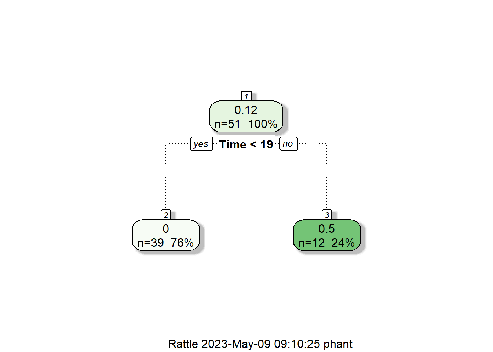
6.1.2 Conditional decision tree
The conditional decision tree approach has been proposed to be superior to CART method because that method uses information criterion for partitioning and which can lead to overfitting.The scenario of overfitting describes model which works well on training data but less so with new data.The conditional approach by party is less prone to overfitting as it includes significance testing (Phan et al. 2019).
## Loading required package: grid## Loading required package: mvtnorm## Loading required package: modeltools## Loading required package: stats4## Loading required package: strucchange## Loading required package: zoo##
## Attaching package: 'zoo'## The following objects are masked from 'package:base':
##
## as.Date, as.Date.numeric## Loading required package: sandwich## [1] "gos6" "outcome" "gender" "age" "wfns" "s100b" "ndka"#decision tree model
treeSAH<-ctree(outcome~., data=aSAH, control = ctree_control(mincriterion=0.95, minsplit=50))
plot(treeSAH,type = "simple",main = "Conditional Inference for aSAH")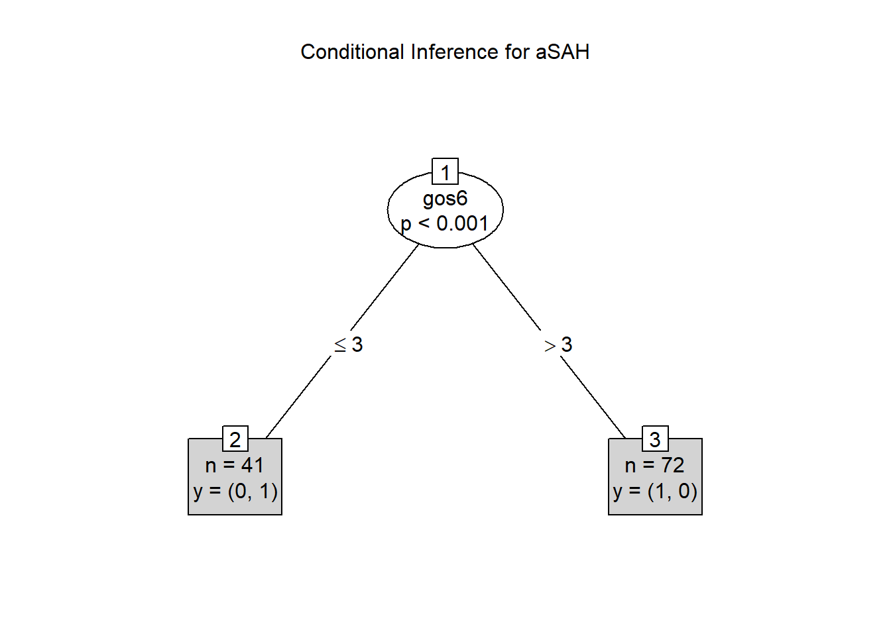
6.1.3 criticisms of decision tree
Overfitting and prone to chosing variable with many levels are some disadvantage of decision tree. Decision tree do not handle collinearity issues well and the related method of random forest is proposed below.
6.2 Random Forest
Both gradient boost machine and random forest are examples of tree-based method with the former based on boosting of the residuals of the model and the latter based on bagging with random selection (rows and columns) of multiple subsets of the data. As such random forest regression ensembles the model from multiple decision trees. The trees are created by obtaining multiple subset of the data (random selection of data by rows and columns). Decision tree comes at certain disadvantage such as overfitting. Random forest avoids the problems of single decision tree analyses by aggregating the results of multiple trees obtained by performing analysis on random subsets of the original data. This method is different from the bootstrapping procedure that can be used in decision tree which may not change the data structure; hence the trees can look very similar. Random forest is available as randomForest or ranger or via caret.
A major drawback to random forest is that the hierarchical nature of the trees is lost. As such this method is seen as a black box tool and is less commonly embraced in the medical literature. One way us to use an interpretable machine learning tool iml (Molnar, Bischl, and Casalicchio 2018) (Shapley values) tool to aid interpretation of the model. This method uses ideas from coalition game theory to fairly distribute the contribution of the coalition of covariates to the random forest model.
The machine learning models are tuned using caret library.
## Loading required package: lattice## Loading required package: ggplot2## Warning: package 'ggplot2' was built under R version 4.0.5data("BreastCancer",package = "mlbench")
#The Breast Cancer data contains NA as well as factors
#note Class is benign or malignant of class factor
#column Bare.nuclei removed due to NA
BreastCancer<-BreastCancer[,-c(1,7)]
#split data using caTools.
#The next example will use createDataPartition from caret
set.seed(123)
split = caTools::sample.split(BreastCancer$Class, SplitRatio = 0.75)
Train = subset(BreastCancer, split == TRUE)
Test = subset(BreastCancer, split == FALSE)
# specify that resampling method is
rf_control <- trainControl(## 10-fold CV
method = "cv",
number = 10)
#scaling data is performed here under preProcess
#note that ranger handles the outcome variable as factor
rf <- caret::train(Class ~ .,
data = Train,
method = "ranger",
trControl=rf_control,
preProcess = c("center", "scale"),
tuneLength = 10, verbose=F)
summary(rf)## Length Class Mode
## predictions 525 factor numeric
## num.trees 1 -none- numeric
## num.independent.variables 1 -none- numeric
## mtry 1 -none- numeric
## min.node.size 1 -none- numeric
## prediction.error 1 -none- numeric
## forest 9 ranger.forest list
## confusion.matrix 4 table numeric
## splitrule 1 -none- character
## num.random.splits 1 -none- numeric
## treetype 1 -none- character
## call 9 -none- call
## importance.mode 1 -none- character
## num.samples 1 -none- numeric
## replace 1 -none- logical
## xNames 71 -none- character
## problemType 1 -none- character
## tuneValue 3 data.frame list
## obsLevels 2 -none- character
## param 1 -none- list## Confusion Matrix and Statistics
##
## Reference
## Prediction benign malignant
## benign 455 6
## malignant 3 235
##
## Accuracy : 0.9871
## 95% CI : (0.9757, 0.9941)
## No Information Rate : 0.6552
## P-Value [Acc > NIR] : <2e-16
##
## Kappa : 0.9714
##
## Mcnemar's Test P-Value : 0.505
##
## Sensitivity : 0.9934
## Specificity : 0.9751
## Pos Pred Value : 0.9870
## Neg Pred Value : 0.9874
## Prevalence : 0.6552
## Detection Rate : 0.6509
## Detection Prevalence : 0.6595
## Balanced Accuracy : 0.9843
##
## 'Positive' Class : benign
## ## Setting levels: control = benign, case = malignant## Setting direction: controls < cases##
## Call:
## roc.default(response = BreastCancer$Class, predictor = as.numeric(pred_rf))
##
## Data: as.numeric(pred_rf) in 458 controls (BreastCancer$Class benign) < 241 cases (BreastCancer$Class malignant).
## Area under the curve: 0.98436.3 Gradient Boost Machine
Gradient boost machine is available as gradient boost machine_gbm.
#the breast cancer data from random forest is used here
# specify that the resampling method is
gbm_control <- trainControl(## 10-fold CV
method = "repeatedcv",
number = 10)
#scaling data is performed here under preProcess
#note that ranger handles the outcome variable as factor
gbm <- caret::train(Class ~ .,
data = Train,
method = "gbm",
trControl=gbm_control,
preProcess = c("center", "scale"),
tuneLength = 10)## Iter TrainDeviance ValidDeviance StepSize Improve
## 1 1.1541 nan 0.1000 0.0689
## 2 1.0407 nan 0.1000 0.0524
## 3 0.9537 nan 0.1000 0.0417
## 4 0.8757 nan 0.1000 0.0389
## 5 0.8200 nan 0.1000 0.0246
## 6 0.7615 nan 0.1000 0.0277
## 7 0.7156 nan 0.1000 0.0224
## 8 0.6713 nan 0.1000 0.0209
## 9 0.6291 nan 0.1000 0.0195
## 10 0.5927 nan 0.1000 0.0182
## 20 0.3796 nan 0.1000 0.0070
## 40 0.2416 nan 0.1000 0.0001
## 60 0.2000 nan 0.1000 -0.0008
## 80 0.1746 nan 0.1000 -0.0007
## 100 0.1558 nan 0.1000 -0.0000
## 120 0.1434 nan 0.1000 -0.0008
## 140 0.1351 nan 0.1000 -0.0010
## 160 0.1294 nan 0.1000 -0.0007
## 180 0.1224 nan 0.1000 0.0000
## 200 0.1180 nan 0.1000 -0.0006
## 220 0.1157 nan 0.1000 -0.0011
## 240 0.1114 nan 0.1000 -0.0008
## 260 0.1088 nan 0.1000 -0.0004
## 280 0.1072 nan 0.1000 -0.0003
## 300 0.1040 nan 0.1000 -0.0008
## 320 0.1019 nan 0.1000 -0.0010
## 340 0.0999 nan 0.1000 -0.0005
## 360 0.0980 nan 0.1000 -0.0007
## 380 0.0959 nan 0.1000 -0.0005
## 400 0.0946 nan 0.1000 -0.0004
## 420 0.0932 nan 0.1000 -0.0003
## 440 0.0902 nan 0.1000 -0.0005
## 460 0.0889 nan 0.1000 -0.0007
## 480 0.0880 nan 0.1000 -0.0003
## 500 0.0868 nan 0.1000 -0.0005
##
## Iter TrainDeviance ValidDeviance StepSize Improve
## 1 1.1467 nan 0.1000 0.0685
## 2 1.0391 nan 0.1000 0.0507
## 3 0.9359 nan 0.1000 0.0496
## 4 0.8511 nan 0.1000 0.0397
## 5 0.7835 nan 0.1000 0.0379
## 6 0.7237 nan 0.1000 0.0294
## 7 0.6690 nan 0.1000 0.0246
## 8 0.6191 nan 0.1000 0.0247
## 9 0.5775 nan 0.1000 0.0184
## 10 0.5432 nan 0.1000 0.0156
## 20 0.3195 nan 0.1000 0.0065
## 40 0.1961 nan 0.1000 0.0015
## 60 0.1486 nan 0.1000 -0.0004
## 80 0.1234 nan 0.1000 -0.0005
## 100 0.1045 nan 0.1000 -0.0006
## 120 0.0915 nan 0.1000 -0.0005
## 140 0.0804 nan 0.1000 -0.0005
## 160 0.0734 nan 0.1000 -0.0010
## 180 0.0656 nan 0.1000 -0.0002
## 200 0.0597 nan 0.1000 -0.0007
## 220 0.0543 nan 0.1000 -0.0001
## 240 0.0487 nan 0.1000 -0.0005
## 260 0.0440 nan 0.1000 -0.0004
## 280 0.0399 nan 0.1000 -0.0001
## 300 0.0365 nan 0.1000 -0.0001
## 320 0.0329 nan 0.1000 -0.0002
## 340 0.0299 nan 0.1000 -0.0003
## 360 0.0269 nan 0.1000 -0.0002
## 380 0.0246 nan 0.1000 -0.0002
## 400 0.0226 nan 0.1000 -0.0002
## 420 0.0210 nan 0.1000 -0.0001
## 440 0.0192 nan 0.1000 -0.0001
## 460 0.0174 nan 0.1000 -0.0001
## 480 0.0160 nan 0.1000 -0.0001
## 500 0.0148 nan 0.1000 -0.0000
##
## Iter TrainDeviance ValidDeviance StepSize Improve
## 1 1.1333 nan 0.1000 0.0705
## 2 1.0111 nan 0.1000 0.0599
## 3 0.9137 nan 0.1000 0.0484
## 4 0.8269 nan 0.1000 0.0381
## 5 0.7550 nan 0.1000 0.0340
## 6 0.6946 nan 0.1000 0.0285
## 7 0.6408 nan 0.1000 0.0248
## 8 0.5936 nan 0.1000 0.0221
## 9 0.5575 nan 0.1000 0.0157
## 10 0.5161 nan 0.1000 0.0191
## 20 0.2920 nan 0.1000 0.0047
## 40 0.1588 nan 0.1000 -0.0003
## 60 0.1113 nan 0.1000 -0.0010
## 80 0.0876 nan 0.1000 -0.0006
## 100 0.0713 nan 0.1000 -0.0011
## 120 0.0565 nan 0.1000 -0.0003
## 140 0.0496 nan 0.1000 -0.0005
## 160 0.0409 nan 0.1000 -0.0007
## 180 0.0341 nan 0.1000 -0.0002
## 200 0.0284 nan 0.1000 -0.0001
## 220 0.0256 nan 0.1000 -0.0001
## 240 0.0220 nan 0.1000 0.0000
## 260 0.0184 nan 0.1000 -0.0002
## 280 0.0159 nan 0.1000 -0.0001
## 300 0.0140 nan 0.1000 -0.0001
## 320 0.0116 nan 0.1000 -0.0001
## 340 0.0100 nan 0.1000 -0.0001
## 360 0.0086 nan 0.1000 -0.0001
## 380 0.0071 nan 0.1000 -0.0000
## 400 0.0062 nan 0.1000 -0.0000
## 420 0.0054 nan 0.1000 -0.0000
## 440 0.0045 nan 0.1000 -0.0000
## 460 0.0038 nan 0.1000 -0.0000
## 480 0.0033 nan 0.1000 -0.0000
## 500 0.0029 nan 0.1000 -0.0000
##
## Iter TrainDeviance ValidDeviance StepSize Improve
## 1 1.1314 nan 0.1000 0.0771
## 2 1.0067 nan 0.1000 0.0620
## 3 0.9073 nan 0.1000 0.0454
## 4 0.8227 nan 0.1000 0.0390
## 5 0.7474 nan 0.1000 0.0345
## 6 0.6863 nan 0.1000 0.0291
## 7 0.6337 nan 0.1000 0.0226
## 8 0.5830 nan 0.1000 0.0250
## 9 0.5411 nan 0.1000 0.0188
## 10 0.5016 nan 0.1000 0.0187
## 20 0.2833 nan 0.1000 0.0026
## 40 0.1384 nan 0.1000 0.0005
## 60 0.0928 nan 0.1000 -0.0003
## 80 0.0661 nan 0.1000 -0.0011
## 100 0.0507 nan 0.1000 -0.0006
## 120 0.0384 nan 0.1000 -0.0000
## 140 0.0297 nan 0.1000 -0.0003
## 160 0.0236 nan 0.1000 -0.0005
## 180 0.0190 nan 0.1000 -0.0001
## 200 0.0160 nan 0.1000 -0.0002
## 220 0.0130 nan 0.1000 -0.0001
## 240 0.0102 nan 0.1000 -0.0000
## 260 0.0079 nan 0.1000 -0.0001
## 280 0.0061 nan 0.1000 -0.0000
## 300 0.0049 nan 0.1000 -0.0000
## 320 0.0042 nan 0.1000 -0.0001
## 340 0.0032 nan 0.1000 -0.0000
## 360 0.0027 nan 0.1000 -0.0000
## 380 0.0023 nan 0.1000 -0.0000
## 400 0.0018 nan 0.1000 -0.0000
## 420 0.0014 nan 0.1000 -0.0000
## 440 0.0011 nan 0.1000 -0.0000
## 460 0.0009 nan 0.1000 -0.0000
## 480 0.0008 nan 0.1000 -0.0000
## 500 0.0007 nan 0.1000 -0.0000
##
## Iter TrainDeviance ValidDeviance StepSize Improve
## 1 1.1334 nan 0.1000 0.0789
## 2 1.0154 nan 0.1000 0.0566
## 3 0.9127 nan 0.1000 0.0473
## 4 0.8260 nan 0.1000 0.0415
## 5 0.7493 nan 0.1000 0.0366
## 6 0.6813 nan 0.1000 0.0304
## 7 0.6238 nan 0.1000 0.0269
## 8 0.5765 nan 0.1000 0.0215
## 9 0.5332 nan 0.1000 0.0206
## 10 0.4962 nan 0.1000 0.0163
## 20 0.2701 nan 0.1000 0.0029
## 40 0.1273 nan 0.1000 0.0004
## 60 0.0874 nan 0.1000 0.0007
## 80 0.0570 nan 0.1000 -0.0000
## 100 0.0389 nan 0.1000 -0.0003
## 120 0.0282 nan 0.1000 0.0002
## 140 0.0210 nan 0.1000 -0.0002
## 160 0.0155 nan 0.1000 -0.0000
## 180 0.0120 nan 0.1000 -0.0001
## 200 0.0089 nan 0.1000 -0.0000
## 220 0.0070 nan 0.1000 -0.0001
## 240 0.0051 nan 0.1000 -0.0000
## 260 0.0042 nan 0.1000 -0.0001
## 280 0.0032 nan 0.1000 -0.0000
## 300 0.0025 nan 0.1000 -0.0001
## 320 0.0019 nan 0.1000 -0.0000
## 340 0.0014 nan 0.1000 -0.0000
## 360 0.0011 nan 0.1000 -0.0000
## 380 0.0008 nan 0.1000 -0.0000
## 400 0.0006 nan 0.1000 -0.0000
## 420 0.0005 nan 0.1000 -0.0000
## 440 0.0004 nan 0.1000 -0.0000
## 460 0.0003 nan 0.1000 -0.0000
## 480 0.0002 nan 0.1000 0.0000
## 500 0.0002 nan 0.1000 -0.0000
##
## Iter TrainDeviance ValidDeviance StepSize Improve
## 1 1.1309 nan 0.1000 0.0719
## 2 1.0145 nan 0.1000 0.0560
## 3 0.9109 nan 0.1000 0.0541
## 4 0.8204 nan 0.1000 0.0413
## 5 0.7493 nan 0.1000 0.0337
## 6 0.6836 nan 0.1000 0.0314
## 7 0.6301 nan 0.1000 0.0249
## 8 0.5806 nan 0.1000 0.0222
## 9 0.5398 nan 0.1000 0.0180
## 10 0.4996 nan 0.1000 0.0189
## 20 0.2757 nan 0.1000 0.0055
## 40 0.1238 nan 0.1000 -0.0009
## 60 0.0711 nan 0.1000 -0.0003
## 80 0.0477 nan 0.1000 -0.0001
## 100 0.0323 nan 0.1000 -0.0004
## 120 0.0234 nan 0.1000 -0.0001
## 140 0.0165 nan 0.1000 -0.0004
## 160 0.0125 nan 0.1000 -0.0001
## 180 0.0087 nan 0.1000 -0.0001
## 200 0.0064 nan 0.1000 -0.0001
## 220 0.0045 nan 0.1000 -0.0001
## 240 0.0030 nan 0.1000 -0.0001
## 260 0.0022 nan 0.1000 -0.0000
## 280 0.0017 nan 0.1000 -0.0000
## 300 0.0014 nan 0.1000 -0.0000
## 320 0.0011 nan 0.1000 -0.0000
## 340 0.0009 nan 0.1000 -0.0000
## 360 0.0007 nan 0.1000 0.0000
## 380 0.0005 nan 0.1000 -0.0000
## 400 0.0004 nan 0.1000 -0.0000
## 420 0.0004 nan 0.1000 -0.0000
## 440 0.0003 nan 0.1000 -0.0000
## 460 0.0003 nan 0.1000 -0.0000
## 480 0.0002 nan 0.1000 0.0000
## 500 0.0001 nan 0.1000 -0.0000
##
## Iter TrainDeviance ValidDeviance StepSize Improve
## 1 1.1328 nan 0.1000 0.0726
## 2 1.0073 nan 0.1000 0.0545
## 3 0.9026 nan 0.1000 0.0492
## 4 0.8170 nan 0.1000 0.0406
## 5 0.7445 nan 0.1000 0.0327
## 6 0.6787 nan 0.1000 0.0305
## 7 0.6255 nan 0.1000 0.0235
## 8 0.5802 nan 0.1000 0.0183
## 9 0.5384 nan 0.1000 0.0190
## 10 0.4983 nan 0.1000 0.0174
## 20 0.2637 nan 0.1000 0.0052
## 40 0.1136 nan 0.1000 0.0000
## 60 0.0685 nan 0.1000 -0.0006
## 80 0.0435 nan 0.1000 -0.0004
## 100 0.0300 nan 0.1000 -0.0008
## 120 0.0206 nan 0.1000 -0.0000
## 140 0.0140 nan 0.1000 -0.0001
## 160 0.0097 nan 0.1000 -0.0002
## 180 0.0067 nan 0.1000 -0.0000
## 200 0.0050 nan 0.1000 0.0000
## 220 0.0034 nan 0.1000 -0.0001
## 240 0.0025 nan 0.1000 -0.0000
## 260 0.0018 nan 0.1000 -0.0000
## 280 0.0013 nan 0.1000 0.0000
## 300 0.0011 nan 0.1000 -0.0000
## 320 0.0009 nan 0.1000 -0.0000
## 340 0.0007 nan 0.1000 0.0000
## 360 0.0005 nan 0.1000 -0.0000
## 380 0.0005 nan 0.1000 -0.0000
## 400 0.0004 nan 0.1000 -0.0000
## 420 0.0003 nan 0.1000 -0.0000
## 440 0.0002 nan 0.1000 -0.0000
## 460 0.0002 nan 0.1000 -0.0000
## 480 0.0001 nan 0.1000 -0.0000
## 500 0.0001 nan 0.1000 -0.0000
##
## Iter TrainDeviance ValidDeviance StepSize Improve
## 1 1.1354 nan 0.1000 0.0753
## 2 1.0135 nan 0.1000 0.0601
## 3 0.9117 nan 0.1000 0.0518
## 4 0.8207 nan 0.1000 0.0419
## 5 0.7465 nan 0.1000 0.0313
## 6 0.6836 nan 0.1000 0.0284
## 7 0.6312 nan 0.1000 0.0242
## 8 0.5856 nan 0.1000 0.0193
## 9 0.5416 nan 0.1000 0.0196
## 10 0.5021 nan 0.1000 0.0183
## 20 0.2711 nan 0.1000 0.0055
## 40 0.1180 nan 0.1000 -0.0003
## 60 0.0645 nan 0.1000 -0.0005
## 80 0.0396 nan 0.1000 0.0000
## 100 0.0262 nan 0.1000 -0.0002
## 120 0.0207 nan 0.1000 -0.0005
## 140 0.0143 nan 0.1000 -0.0003
## 160 0.0098 nan 0.1000 -0.0001
## 180 0.0069 nan 0.1000 -0.0001
## 200 0.0045 nan 0.1000 -0.0001
## 220 0.0033 nan 0.1000 -0.0000
## 240 0.0024 nan 0.1000 -0.0001
## 260 0.0019 nan 0.1000 -0.0000
## 280 0.0015 nan 0.1000 -0.0000
## 300 0.0012 nan 0.1000 -0.0000
## 320 0.0009 nan 0.1000 -0.0000
## 340 0.0007 nan 0.1000 -0.0000
## 360 0.0005 nan 0.1000 -0.0000
## 380 0.0004 nan 0.1000 -0.0000
## 400 0.0003 nan 0.1000 -0.0000
## 420 0.0002 nan 0.1000 -0.0000
## 440 0.0002 nan 0.1000 -0.0000
## 460 0.0001 nan 0.1000 -0.0000
## 480 0.0001 nan 0.1000 0.0000
## 500 0.0001 nan 0.1000 -0.0000
##
## Iter TrainDeviance ValidDeviance StepSize Improve
## 1 1.1308 nan 0.1000 0.0728
## 2 1.0054 nan 0.1000 0.0574
## 3 0.9056 nan 0.1000 0.0481
## 4 0.8187 nan 0.1000 0.0423
## 5 0.7448 nan 0.1000 0.0337
## 6 0.6840 nan 0.1000 0.0272
## 7 0.6266 nan 0.1000 0.0261
## 8 0.5758 nan 0.1000 0.0238
## 9 0.5321 nan 0.1000 0.0181
## 10 0.4954 nan 0.1000 0.0157
## 20 0.2610 nan 0.1000 0.0045
## 40 0.1144 nan 0.1000 -0.0012
## 60 0.0588 nan 0.1000 -0.0008
## 80 0.0374 nan 0.1000 -0.0001
## 100 0.0243 nan 0.1000 -0.0001
## 120 0.0158 nan 0.1000 -0.0000
## 140 0.0108 nan 0.1000 -0.0002
## 160 0.0081 nan 0.1000 -0.0000
## 180 0.0053 nan 0.1000 -0.0001
## 200 0.0035 nan 0.1000 -0.0000
## 220 0.0027 nan 0.1000 -0.0000
## 240 0.0020 nan 0.1000 -0.0000
## 260 0.0016 nan 0.1000 -0.0000
## 280 0.0010 nan 0.1000 -0.0000
## 300 0.0008 nan 0.1000 -0.0000
## 320 0.0007 nan 0.1000 -0.0000
## 340 0.0005 nan 0.1000 -0.0000
## 360 0.0003 nan 0.1000 -0.0000
## 380 0.0002 nan 0.1000 -0.0000
## 400 0.0002 nan 0.1000 -0.0000
## 420 0.0001 nan 0.1000 -0.0000
## 440 0.0001 nan 0.1000 -0.0000
## 460 0.0001 nan 0.1000 -0.0000
## 480 0.0001 nan 0.1000 -0.0000
## 500 0.0001 nan 0.1000 -0.0000
##
## Iter TrainDeviance ValidDeviance StepSize Improve
## 1 1.1332 nan 0.1000 0.0764
## 2 1.0083 nan 0.1000 0.0540
## 3 0.9026 nan 0.1000 0.0469
## 4 0.8192 nan 0.1000 0.0347
## 5 0.7453 nan 0.1000 0.0352
## 6 0.6852 nan 0.1000 0.0287
## 7 0.6294 nan 0.1000 0.0228
## 8 0.5814 nan 0.1000 0.0213
## 9 0.5361 nan 0.1000 0.0205
## 10 0.4981 nan 0.1000 0.0171
## 20 0.2706 nan 0.1000 0.0032
## 40 0.1098 nan 0.1000 0.0005
## 60 0.0589 nan 0.1000 -0.0008
## 80 0.0360 nan 0.1000 -0.0004
## 100 0.0221 nan 0.1000 -0.0002
## 120 0.0159 nan 0.1000 -0.0003
## 140 0.0097 nan 0.1000 -0.0000
## 160 0.0066 nan 0.1000 -0.0001
## 180 0.0045 nan 0.1000 -0.0001
## 200 0.0033 nan 0.1000 -0.0001
## 220 0.0023 nan 0.1000 -0.0000
## 240 0.0017 nan 0.1000 -0.0000
## 260 0.0014 nan 0.1000 -0.0000
## 280 0.0010 nan 0.1000 -0.0000
## 300 0.0008 nan 0.1000 -0.0000
## 320 0.0007 nan 0.1000 -0.0000
## 340 0.0006 nan 0.1000 -0.0000
## 360 0.0005 nan 0.1000 -0.0000
## 380 0.0003 nan 0.1000 0.0000
## 400 0.0003 nan 0.1000 -0.0000
## 420 0.0002 nan 0.1000 -0.0000
## 440 0.0002 nan 0.1000 -0.0000
## 460 0.0001 nan 0.1000 -0.0000
## 480 0.0001 nan 0.1000 -0.0000
## 500 0.0001 nan 0.1000 -0.0000
##
## Iter TrainDeviance ValidDeviance StepSize Improve
## 1 1.1466 nan 0.1000 0.0669
## 2 1.0392 nan 0.1000 0.0538
## 3 0.9417 nan 0.1000 0.0446
## 4 0.8661 nan 0.1000 0.0359
## 5 0.8021 nan 0.1000 0.0294
## 6 0.7417 nan 0.1000 0.0292
## 7 0.6866 nan 0.1000 0.0273
## 8 0.6395 nan 0.1000 0.0233
## 9 0.6016 nan 0.1000 0.0177
## 10 0.5723 nan 0.1000 0.0119
## 20 0.3639 nan 0.1000 0.0065
## 40 0.2276 nan 0.1000 0.0011
## 60 0.1855 nan 0.1000 -0.0007
## 80 0.1597 nan 0.1000 -0.0002
## 100 0.1449 nan 0.1000 -0.0002
## 120 0.1341 nan 0.1000 -0.0012
## 140 0.1274 nan 0.1000 -0.0009
## 160 0.1237 nan 0.1000 -0.0004
## 180 0.1168 nan 0.1000 -0.0009
## 200 0.1125 nan 0.1000 -0.0002
## 220 0.1088 nan 0.1000 -0.0007
## 240 0.1066 nan 0.1000 -0.0008
## 260 0.1042 nan 0.1000 -0.0007
## 280 0.1020 nan 0.1000 -0.0006
## 300 0.0985 nan 0.1000 -0.0006
## 320 0.0974 nan 0.1000 -0.0013
## 340 0.0949 nan 0.1000 -0.0002
## 360 0.0928 nan 0.1000 -0.0005
## 380 0.0922 nan 0.1000 -0.0010
## 400 0.0921 nan 0.1000 -0.0012
## 420 0.0911 nan 0.1000 -0.0012
## 440 0.0893 nan 0.1000 -0.0011
## 460 0.0888 nan 0.1000 -0.0007
## 480 0.0867 nan 0.1000 -0.0015
## 500 0.0847 nan 0.1000 -0.0004
##
## Iter TrainDeviance ValidDeviance StepSize Improve
## 1 1.1357 nan 0.1000 0.0772
## 2 1.0146 nan 0.1000 0.0580
## 3 0.9165 nan 0.1000 0.0435
## 4 0.8315 nan 0.1000 0.0401
## 5 0.7639 nan 0.1000 0.0300
## 6 0.7034 nan 0.1000 0.0264
## 7 0.6478 nan 0.1000 0.0242
## 8 0.5997 nan 0.1000 0.0232
## 9 0.5564 nan 0.1000 0.0201
## 10 0.5225 nan 0.1000 0.0165
## 20 0.3062 nan 0.1000 0.0033
## 40 0.1715 nan 0.1000 0.0006
## 60 0.1283 nan 0.1000 -0.0004
## 80 0.1094 nan 0.1000 -0.0003
## 100 0.0950 nan 0.1000 -0.0012
## 120 0.0830 nan 0.1000 -0.0009
## 140 0.0741 nan 0.1000 -0.0004
## 160 0.0655 nan 0.1000 -0.0008
## 180 0.0594 nan 0.1000 -0.0004
## 200 0.0545 nan 0.1000 -0.0005
## 220 0.0503 nan 0.1000 -0.0007
## 240 0.0451 nan 0.1000 -0.0005
## 260 0.0418 nan 0.1000 0.0000
## 280 0.0375 nan 0.1000 -0.0003
## 300 0.0345 nan 0.1000 -0.0000
## 320 0.0317 nan 0.1000 -0.0001
## 340 0.0292 nan 0.1000 -0.0004
## 360 0.0270 nan 0.1000 -0.0003
## 380 0.0245 nan 0.1000 -0.0002
## 400 0.0235 nan 0.1000 -0.0003
## 420 0.0217 nan 0.1000 -0.0003
## 440 0.0198 nan 0.1000 -0.0000
## 460 0.0181 nan 0.1000 -0.0002
## 480 0.0165 nan 0.1000 -0.0001
## 500 0.0159 nan 0.1000 -0.0002
##
## Iter TrainDeviance ValidDeviance StepSize Improve
## 1 1.1293 nan 0.1000 0.0781
## 2 1.0083 nan 0.1000 0.0607
## 3 0.9120 nan 0.1000 0.0470
## 4 0.8240 nan 0.1000 0.0423
## 5 0.7522 nan 0.1000 0.0346
## 6 0.6897 nan 0.1000 0.0289
## 7 0.6311 nan 0.1000 0.0251
## 8 0.5823 nan 0.1000 0.0224
## 9 0.5418 nan 0.1000 0.0192
## 10 0.5046 nan 0.1000 0.0168
## 20 0.2875 nan 0.1000 0.0055
## 40 0.1495 nan 0.1000 0.0008
## 60 0.1054 nan 0.1000 -0.0013
## 80 0.0813 nan 0.1000 -0.0011
## 100 0.0651 nan 0.1000 -0.0008
## 120 0.0544 nan 0.1000 -0.0006
## 140 0.0444 nan 0.1000 -0.0003
## 160 0.0382 nan 0.1000 -0.0005
## 180 0.0334 nan 0.1000 -0.0002
## 200 0.0288 nan 0.1000 -0.0002
## 220 0.0241 nan 0.1000 -0.0001
## 240 0.0200 nan 0.1000 -0.0002
## 260 0.0168 nan 0.1000 -0.0002
## 280 0.0144 nan 0.1000 -0.0002
## 300 0.0122 nan 0.1000 -0.0000
## 320 0.0106 nan 0.1000 -0.0001
## 340 0.0091 nan 0.1000 0.0000
## 360 0.0079 nan 0.1000 -0.0001
## 380 0.0069 nan 0.1000 -0.0000
## 400 0.0059 nan 0.1000 -0.0001
## 420 0.0051 nan 0.1000 -0.0001
## 440 0.0042 nan 0.1000 -0.0000
## 460 0.0038 nan 0.1000 -0.0000
## 480 0.0032 nan 0.1000 -0.0000
## 500 0.0028 nan 0.1000 -0.0000
##
## Iter TrainDeviance ValidDeviance StepSize Improve
## 1 1.1347 nan 0.1000 0.0739
## 2 1.0103 nan 0.1000 0.0585
## 3 0.9044 nan 0.1000 0.0499
## 4 0.8190 nan 0.1000 0.0413
## 5 0.7433 nan 0.1000 0.0352
## 6 0.6766 nan 0.1000 0.0322
## 7 0.6221 nan 0.1000 0.0264
## 8 0.5748 nan 0.1000 0.0218
## 9 0.5326 nan 0.1000 0.0193
## 10 0.4963 nan 0.1000 0.0151
## 20 0.2670 nan 0.1000 0.0073
## 40 0.1372 nan 0.1000 0.0001
## 60 0.0844 nan 0.1000 -0.0008
## 80 0.0604 nan 0.1000 -0.0009
## 100 0.0450 nan 0.1000 -0.0004
## 120 0.0362 nan 0.1000 -0.0006
## 140 0.0276 nan 0.1000 -0.0003
## 160 0.0215 nan 0.1000 -0.0002
## 180 0.0171 nan 0.1000 0.0000
## 200 0.0141 nan 0.1000 -0.0003
## 220 0.0115 nan 0.1000 -0.0001
## 240 0.0093 nan 0.1000 -0.0001
## 260 0.0078 nan 0.1000 -0.0001
## 280 0.0066 nan 0.1000 -0.0001
## 300 0.0054 nan 0.1000 0.0000
## 320 0.0043 nan 0.1000 -0.0000
## 340 0.0035 nan 0.1000 -0.0000
## 360 0.0028 nan 0.1000 -0.0000
## 380 0.0022 nan 0.1000 -0.0000
## 400 0.0017 nan 0.1000 -0.0000
## 420 0.0014 nan 0.1000 -0.0000
## 440 0.0012 nan 0.1000 -0.0000
## 460 0.0009 nan 0.1000 -0.0000
## 480 0.0008 nan 0.1000 -0.0000
## 500 0.0006 nan 0.1000 -0.0000
##
## Iter TrainDeviance ValidDeviance StepSize Improve
## 1 1.1272 nan 0.1000 0.0760
## 2 1.0005 nan 0.1000 0.0583
## 3 0.8981 nan 0.1000 0.0483
## 4 0.8089 nan 0.1000 0.0427
## 5 0.7384 nan 0.1000 0.0333
## 6 0.6776 nan 0.1000 0.0281
## 7 0.6178 nan 0.1000 0.0276
## 8 0.5735 nan 0.1000 0.0193
## 9 0.5329 nan 0.1000 0.0172
## 10 0.4900 nan 0.1000 0.0187
## 20 0.2689 nan 0.1000 0.0054
## 40 0.1244 nan 0.1000 0.0001
## 60 0.0803 nan 0.1000 -0.0006
## 80 0.0559 nan 0.1000 -0.0004
## 100 0.0401 nan 0.1000 -0.0003
## 120 0.0280 nan 0.1000 -0.0002
## 140 0.0202 nan 0.1000 -0.0000
## 160 0.0152 nan 0.1000 -0.0002
## 180 0.0112 nan 0.1000 -0.0000
## 200 0.0085 nan 0.1000 -0.0001
## 220 0.0065 nan 0.1000 -0.0001
## 240 0.0051 nan 0.1000 -0.0001
## 260 0.0040 nan 0.1000 -0.0001
## 280 0.0032 nan 0.1000 -0.0000
## 300 0.0026 nan 0.1000 -0.0001
## 320 0.0020 nan 0.1000 -0.0000
## 340 0.0015 nan 0.1000 -0.0000
## 360 0.0012 nan 0.1000 -0.0000
## 380 0.0010 nan 0.1000 -0.0000
## 400 0.0008 nan 0.1000 -0.0000
## 420 0.0006 nan 0.1000 0.0000
## 440 0.0005 nan 0.1000 0.0000
## 460 0.0004 nan 0.1000 -0.0000
## 480 0.0003 nan 0.1000 -0.0000
## 500 0.0003 nan 0.1000 -0.0000
##
## Iter TrainDeviance ValidDeviance StepSize Improve
## 1 1.1311 nan 0.1000 0.0767
## 2 1.0073 nan 0.1000 0.0597
## 3 0.9033 nan 0.1000 0.0501
## 4 0.8196 nan 0.1000 0.0389
## 5 0.7468 nan 0.1000 0.0348
## 6 0.6827 nan 0.1000 0.0281
## 7 0.6292 nan 0.1000 0.0249
## 8 0.5768 nan 0.1000 0.0238
## 9 0.5346 nan 0.1000 0.0189
## 10 0.4965 nan 0.1000 0.0161
## 20 0.2627 nan 0.1000 0.0055
## 40 0.1202 nan 0.1000 -0.0005
## 60 0.0760 nan 0.1000 -0.0001
## 80 0.0516 nan 0.1000 -0.0008
## 100 0.0367 nan 0.1000 -0.0005
## 120 0.0263 nan 0.1000 -0.0003
## 140 0.0191 nan 0.1000 0.0000
## 160 0.0134 nan 0.1000 -0.0003
## 180 0.0095 nan 0.1000 -0.0001
## 200 0.0075 nan 0.1000 -0.0001
## 220 0.0052 nan 0.1000 -0.0001
## 240 0.0038 nan 0.1000 -0.0000
## 260 0.0028 nan 0.1000 -0.0001
## 280 0.0022 nan 0.1000 -0.0000
## 300 0.0016 nan 0.1000 -0.0000
## 320 0.0012 nan 0.1000 0.0000
## 340 0.0010 nan 0.1000 -0.0000
## 360 0.0008 nan 0.1000 0.0000
## 380 0.0006 nan 0.1000 -0.0000
## 400 0.0005 nan 0.1000 -0.0000
## 420 0.0003 nan 0.1000 -0.0000
## 440 0.0002 nan 0.1000 -0.0000
## 460 0.0002 nan 0.1000 -0.0000
## 480 0.0002 nan 0.1000 -0.0000
## 500 0.0001 nan 0.1000 -0.0000
##
## Iter TrainDeviance ValidDeviance StepSize Improve
## 1 1.1350 nan 0.1000 0.0730
## 2 1.0125 nan 0.1000 0.0598
## 3 0.9106 nan 0.1000 0.0495
## 4 0.8179 nan 0.1000 0.0414
## 5 0.7429 nan 0.1000 0.0347
## 6 0.6818 nan 0.1000 0.0273
## 7 0.6227 nan 0.1000 0.0277
## 8 0.5746 nan 0.1000 0.0222
## 9 0.5335 nan 0.1000 0.0185
## 10 0.4934 nan 0.1000 0.0181
## 20 0.2638 nan 0.1000 0.0045
## 40 0.1054 nan 0.1000 -0.0008
## 60 0.0620 nan 0.1000 -0.0011
## 80 0.0392 nan 0.1000 -0.0007
## 100 0.0270 nan 0.1000 -0.0005
## 120 0.0200 nan 0.1000 -0.0000
## 140 0.0139 nan 0.1000 -0.0001
## 160 0.0105 nan 0.1000 -0.0001
## 180 0.0072 nan 0.1000 -0.0001
## 200 0.0052 nan 0.1000 -0.0000
## 220 0.0037 nan 0.1000 -0.0001
## 240 0.0026 nan 0.1000 -0.0000
## 260 0.0021 nan 0.1000 -0.0000
## 280 0.0016 nan 0.1000 -0.0000
## 300 0.0012 nan 0.1000 -0.0000
## 320 0.0010 nan 0.1000 -0.0000
## 340 0.0009 nan 0.1000 -0.0000
## 360 0.0006 nan 0.1000 -0.0000
## 380 0.0006 nan 0.1000 -0.0000
## 400 0.0004 nan 0.1000 -0.0000
## 420 0.0003 nan 0.1000 -0.0000
## 440 0.0002 nan 0.1000 -0.0000
## 460 0.0002 nan 0.1000 -0.0000
## 480 0.0001 nan 0.1000 -0.0000
## 500 0.0001 nan 0.1000 -0.0000
##
## Iter TrainDeviance ValidDeviance StepSize Improve
## 1 1.1342 nan 0.1000 0.0693
## 2 1.0104 nan 0.1000 0.0576
## 3 0.9063 nan 0.1000 0.0475
## 4 0.8160 nan 0.1000 0.0425
## 5 0.7404 nan 0.1000 0.0360
## 6 0.6764 nan 0.1000 0.0315
## 7 0.6247 nan 0.1000 0.0228
## 8 0.5722 nan 0.1000 0.0228
## 9 0.5284 nan 0.1000 0.0184
## 10 0.4924 nan 0.1000 0.0137
## 20 0.2655 nan 0.1000 0.0055
## 40 0.1115 nan 0.1000 -0.0011
## 60 0.0635 nan 0.1000 -0.0008
## 80 0.0384 nan 0.1000 -0.0007
## 100 0.0232 nan 0.1000 -0.0002
## 120 0.0193 nan 0.1000 -0.0007
## 140 0.0141 nan 0.1000 -0.0001
## 160 0.0105 nan 0.1000 -0.0003
## 180 0.0084 nan 0.1000 -0.0003
## 200 0.0061 nan 0.1000 -0.0001
## 220 0.0039 nan 0.1000 -0.0001
## 240 0.0024 nan 0.1000 -0.0000
## 260 0.0018 nan 0.1000 -0.0000
## 280 0.0015 nan 0.1000 -0.0000
## 300 0.0012 nan 0.1000 -0.0001
## 320 0.0007 nan 0.1000 0.0000
## 340 0.0006 nan 0.1000 -0.0000
## 360 0.0004 nan 0.1000 -0.0000
## 380 0.0003 nan 0.1000 -0.0000
## 400 0.0003 nan 0.1000 -0.0000
## 420 0.0002 nan 0.1000 0.0000
## 440 0.0002 nan 0.1000 -0.0000
## 460 0.0001 nan 0.1000 -0.0000
## 480 0.0001 nan 0.1000 -0.0000
## 500 0.0001 nan 0.1000 -0.0000
##
## Iter TrainDeviance ValidDeviance StepSize Improve
## 1 1.1353 nan 0.1000 0.0711
## 2 1.0093 nan 0.1000 0.0621
## 3 0.9047 nan 0.1000 0.0496
## 4 0.8199 nan 0.1000 0.0408
## 5 0.7473 nan 0.1000 0.0345
## 6 0.6847 nan 0.1000 0.0287
## 7 0.6260 nan 0.1000 0.0257
## 8 0.5753 nan 0.1000 0.0209
## 9 0.5319 nan 0.1000 0.0198
## 10 0.4951 nan 0.1000 0.0166
## 20 0.2561 nan 0.1000 0.0045
## 40 0.1079 nan 0.1000 0.0002
## 60 0.0601 nan 0.1000 -0.0012
## 80 0.0381 nan 0.1000 -0.0012
## 100 0.0265 nan 0.1000 -0.0004
## 120 0.0185 nan 0.1000 -0.0004
## 140 0.0123 nan 0.1000 -0.0003
## 160 0.0085 nan 0.1000 -0.0002
## 180 0.0054 nan 0.1000 -0.0000
## 200 0.0040 nan 0.1000 -0.0001
## 220 0.0031 nan 0.1000 -0.0000
## 240 0.0019 nan 0.1000 -0.0001
## 260 0.0016 nan 0.1000 -0.0000
## 280 0.0012 nan 0.1000 -0.0000
## 300 0.0009 nan 0.1000 -0.0000
## 320 0.0008 nan 0.1000 -0.0000
## 340 0.0005 nan 0.1000 0.0000
## 360 0.0004 nan 0.1000 -0.0000
## 380 0.0003 nan 0.1000 -0.0000
## 400 0.0002 nan 0.1000 -0.0000
## 420 0.0001 nan 0.1000 -0.0000
## 440 0.0001 nan 0.1000 -0.0000
## 460 0.0001 nan 0.1000 -0.0000
## 480 0.0001 nan 0.1000 -0.0000
## 500 0.0001 nan 0.1000 -0.0000
##
## Iter TrainDeviance ValidDeviance StepSize Improve
## 1 1.1335 nan 0.1000 0.0787
## 2 1.0087 nan 0.1000 0.0647
## 3 0.9116 nan 0.1000 0.0450
## 4 0.8163 nan 0.1000 0.0445
## 5 0.7407 nan 0.1000 0.0346
## 6 0.6753 nan 0.1000 0.0319
## 7 0.6218 nan 0.1000 0.0241
## 8 0.5730 nan 0.1000 0.0240
## 9 0.5293 nan 0.1000 0.0194
## 10 0.4888 nan 0.1000 0.0181
## 20 0.2585 nan 0.1000 0.0040
## 40 0.1032 nan 0.1000 -0.0006
## 60 0.0542 nan 0.1000 -0.0007
## 80 0.0310 nan 0.1000 -0.0005
## 100 0.0198 nan 0.1000 -0.0001
## 120 0.0135 nan 0.1000 -0.0003
## 140 0.0097 nan 0.1000 -0.0000
## 160 0.0067 nan 0.1000 -0.0001
## 180 0.0051 nan 0.1000 0.0000
## 200 0.0041 nan 0.1000 -0.0002
## 220 0.0029 nan 0.1000 -0.0000
## 240 0.0024 nan 0.1000 -0.0001
## 260 0.0016 nan 0.1000 -0.0000
## 280 0.0014 nan 0.1000 -0.0000
## 300 0.0008 nan 0.1000 -0.0000
## 320 0.0007 nan 0.1000 -0.0000
## 340 0.0005 nan 0.1000 -0.0000
## 360 0.0003 nan 0.1000 -0.0000
## 380 0.0002 nan 0.1000 -0.0000
## 400 0.0002 nan 0.1000 -0.0000
## 420 0.0002 nan 0.1000 -0.0000
## 440 0.0001 nan 0.1000 0.0000
## 460 0.0001 nan 0.1000 -0.0000
## 480 0.0001 nan 0.1000 -0.0000
## 500 0.0001 nan 0.1000 -0.0000
##
## Iter TrainDeviance ValidDeviance StepSize Improve
## 1 1.1532 nan 0.1000 0.0642
## 2 1.0376 nan 0.1000 0.0538
## 3 0.9464 nan 0.1000 0.0441
## 4 0.8689 nan 0.1000 0.0387
## 5 0.8032 nan 0.1000 0.0349
## 6 0.7403 nan 0.1000 0.0280
## 7 0.6914 nan 0.1000 0.0220
## 8 0.6448 nan 0.1000 0.0215
## 9 0.6033 nan 0.1000 0.0187
## 10 0.5688 nan 0.1000 0.0162
## 20 0.3669 nan 0.1000 0.0051
## 40 0.2213 nan 0.1000 0.0003
## 60 0.1774 nan 0.1000 -0.0000
## 80 0.1535 nan 0.1000 0.0004
## 100 0.1377 nan 0.1000 -0.0004
## 120 0.1294 nan 0.1000 -0.0008
## 140 0.1194 nan 0.1000 -0.0015
## 160 0.1142 nan 0.1000 -0.0006
## 180 0.1083 nan 0.1000 -0.0004
## 200 0.1019 nan 0.1000 -0.0011
## 220 0.0974 nan 0.1000 -0.0004
## 240 0.0939 nan 0.1000 -0.0012
## 260 0.0909 nan 0.1000 -0.0007
## 280 0.0856 nan 0.1000 -0.0004
## 300 0.0844 nan 0.1000 -0.0011
## 320 0.0826 nan 0.1000 -0.0004
## 340 0.0805 nan 0.1000 -0.0001
## 360 0.0771 nan 0.1000 -0.0007
## 380 0.0766 nan 0.1000 -0.0016
## 400 0.0741 nan 0.1000 -0.0004
## 420 0.0710 nan 0.1000 -0.0004
## 440 0.0702 nan 0.1000 -0.0006
## 460 0.0686 nan 0.1000 -0.0007
## 480 0.0672 nan 0.1000 -0.0002
## 500 0.0667 nan 0.1000 -0.0009
##
## Iter TrainDeviance ValidDeviance StepSize Improve
## 1 1.1373 nan 0.1000 0.0687
## 2 1.0184 nan 0.1000 0.0581
## 3 0.9179 nan 0.1000 0.0520
## 4 0.8407 nan 0.1000 0.0372
## 5 0.7747 nan 0.1000 0.0292
## 6 0.7053 nan 0.1000 0.0308
## 7 0.6465 nan 0.1000 0.0284
## 8 0.5979 nan 0.1000 0.0226
## 9 0.5559 nan 0.1000 0.0198
## 10 0.5179 nan 0.1000 0.0178
## 20 0.3004 nan 0.1000 0.0060
## 40 0.1716 nan 0.1000 -0.0000
## 60 0.1324 nan 0.1000 0.0006
## 80 0.1045 nan 0.1000 -0.0010
## 100 0.0915 nan 0.1000 -0.0011
## 120 0.0768 nan 0.1000 0.0001
## 140 0.0680 nan 0.1000 -0.0004
## 160 0.0594 nan 0.1000 -0.0010
## 180 0.0542 nan 0.1000 -0.0006
## 200 0.0472 nan 0.1000 -0.0002
## 220 0.0413 nan 0.1000 -0.0003
## 240 0.0368 nan 0.1000 -0.0002
## 260 0.0319 nan 0.1000 -0.0001
## 280 0.0289 nan 0.1000 -0.0003
## 300 0.0265 nan 0.1000 -0.0004
## 320 0.0239 nan 0.1000 -0.0002
## 340 0.0218 nan 0.1000 -0.0002
## 360 0.0200 nan 0.1000 -0.0001
## 380 0.0187 nan 0.1000 -0.0001
## 400 0.0175 nan 0.1000 -0.0001
## 420 0.0154 nan 0.1000 -0.0001
## 440 0.0139 nan 0.1000 -0.0002
## 460 0.0130 nan 0.1000 -0.0001
## 480 0.0117 nan 0.1000 -0.0001
## 500 0.0109 nan 0.1000 -0.0000
##
## Iter TrainDeviance ValidDeviance StepSize Improve
## 1 1.1326 nan 0.1000 0.0708
## 2 1.0082 nan 0.1000 0.0560
## 3 0.9085 nan 0.1000 0.0465
## 4 0.8223 nan 0.1000 0.0411
## 5 0.7461 nan 0.1000 0.0345
## 6 0.6835 nan 0.1000 0.0293
## 7 0.6284 nan 0.1000 0.0261
## 8 0.5829 nan 0.1000 0.0205
## 9 0.5420 nan 0.1000 0.0182
## 10 0.5079 nan 0.1000 0.0158
## 20 0.2882 nan 0.1000 0.0025
## 40 0.1524 nan 0.1000 0.0001
## 60 0.1076 nan 0.1000 -0.0004
## 80 0.0823 nan 0.1000 -0.0003
## 100 0.0667 nan 0.1000 -0.0001
## 120 0.0528 nan 0.1000 -0.0005
## 140 0.0439 nan 0.1000 -0.0001
## 160 0.0367 nan 0.1000 -0.0007
## 180 0.0295 nan 0.1000 -0.0004
## 200 0.0240 nan 0.1000 0.0001
## 220 0.0219 nan 0.1000 -0.0003
## 240 0.0187 nan 0.1000 -0.0002
## 260 0.0170 nan 0.1000 -0.0002
## 280 0.0150 nan 0.1000 -0.0002
## 300 0.0121 nan 0.1000 -0.0000
## 320 0.0098 nan 0.1000 -0.0001
## 340 0.0087 nan 0.1000 -0.0001
## 360 0.0078 nan 0.1000 -0.0001
## 380 0.0069 nan 0.1000 -0.0000
## 400 0.0058 nan 0.1000 -0.0000
## 420 0.0052 nan 0.1000 -0.0000
## 440 0.0043 nan 0.1000 -0.0000
## 460 0.0038 nan 0.1000 -0.0000
## 480 0.0033 nan 0.1000 -0.0000
## 500 0.0029 nan 0.1000 -0.0000
##
## Iter TrainDeviance ValidDeviance StepSize Improve
## 1 1.1296 nan 0.1000 0.0739
## 2 1.0064 nan 0.1000 0.0553
## 3 0.9071 nan 0.1000 0.0482
## 4 0.8221 nan 0.1000 0.0404
## 5 0.7481 nan 0.1000 0.0326
## 6 0.6844 nan 0.1000 0.0289
## 7 0.6278 nan 0.1000 0.0270
## 8 0.5744 nan 0.1000 0.0259
## 9 0.5305 nan 0.1000 0.0219
## 10 0.4886 nan 0.1000 0.0179
## 20 0.2685 nan 0.1000 0.0028
## 40 0.1308 nan 0.1000 0.0001
## 60 0.0832 nan 0.1000 -0.0002
## 80 0.0597 nan 0.1000 -0.0002
## 100 0.0454 nan 0.1000 -0.0009
## 120 0.0348 nan 0.1000 -0.0004
## 140 0.0268 nan 0.1000 0.0000
## 160 0.0216 nan 0.1000 0.0000
## 180 0.0168 nan 0.1000 -0.0000
## 200 0.0132 nan 0.1000 -0.0001
## 220 0.0110 nan 0.1000 -0.0002
## 240 0.0085 nan 0.1000 -0.0000
## 260 0.0067 nan 0.1000 -0.0001
## 280 0.0051 nan 0.1000 -0.0000
## 300 0.0041 nan 0.1000 -0.0000
## 320 0.0033 nan 0.1000 -0.0000
## 340 0.0026 nan 0.1000 -0.0000
## 360 0.0021 nan 0.1000 -0.0000
## 380 0.0018 nan 0.1000 -0.0000
## 400 0.0014 nan 0.1000 -0.0000
## 420 0.0011 nan 0.1000 -0.0000
## 440 0.0009 nan 0.1000 -0.0000
## 460 0.0008 nan 0.1000 -0.0000
## 480 0.0006 nan 0.1000 -0.0000
## 500 0.0005 nan 0.1000 -0.0000
##
## Iter TrainDeviance ValidDeviance StepSize Improve
## 1 1.1376 nan 0.1000 0.0761
## 2 1.0135 nan 0.1000 0.0568
## 3 0.9112 nan 0.1000 0.0524
## 4 0.8271 nan 0.1000 0.0418
## 5 0.7467 nan 0.1000 0.0368
## 6 0.6852 nan 0.1000 0.0273
## 7 0.6318 nan 0.1000 0.0257
## 8 0.5826 nan 0.1000 0.0211
## 9 0.5396 nan 0.1000 0.0190
## 10 0.4990 nan 0.1000 0.0180
## 20 0.2606 nan 0.1000 0.0041
## 40 0.1164 nan 0.1000 -0.0006
## 60 0.0688 nan 0.1000 -0.0004
## 80 0.0470 nan 0.1000 -0.0003
## 100 0.0361 nan 0.1000 -0.0005
## 120 0.0269 nan 0.1000 -0.0002
## 140 0.0197 nan 0.1000 -0.0002
## 160 0.0159 nan 0.1000 -0.0002
## 180 0.0115 nan 0.1000 0.0000
## 200 0.0083 nan 0.1000 -0.0001
## 220 0.0062 nan 0.1000 -0.0001
## 240 0.0050 nan 0.1000 -0.0000
## 260 0.0039 nan 0.1000 -0.0000
## 280 0.0031 nan 0.1000 -0.0001
## 300 0.0025 nan 0.1000 -0.0000
## 320 0.0019 nan 0.1000 -0.0000
## 340 0.0016 nan 0.1000 -0.0000
## 360 0.0013 nan 0.1000 -0.0000
## 380 0.0010 nan 0.1000 -0.0000
## 400 0.0008 nan 0.1000 -0.0000
## 420 0.0006 nan 0.1000 -0.0000
## 440 0.0005 nan 0.1000 -0.0000
## 460 0.0004 nan 0.1000 -0.0000
## 480 0.0003 nan 0.1000 -0.0000
## 500 0.0002 nan 0.1000 -0.0000
##
## Iter TrainDeviance ValidDeviance StepSize Improve
## 1 1.1342 nan 0.1000 0.0756
## 2 1.0127 nan 0.1000 0.0576
## 3 0.9125 nan 0.1000 0.0443
## 4 0.8235 nan 0.1000 0.0413
## 5 0.7506 nan 0.1000 0.0345
## 6 0.6842 nan 0.1000 0.0294
## 7 0.6287 nan 0.1000 0.0244
## 8 0.5813 nan 0.1000 0.0208
## 9 0.5367 nan 0.1000 0.0218
## 10 0.4929 nan 0.1000 0.0190
## 20 0.2671 nan 0.1000 0.0036
## 40 0.1161 nan 0.1000 0.0000
## 60 0.0658 nan 0.1000 -0.0012
## 80 0.0411 nan 0.1000 -0.0002
## 100 0.0269 nan 0.1000 0.0000
## 120 0.0183 nan 0.1000 -0.0001
## 140 0.0141 nan 0.1000 -0.0003
## 160 0.0109 nan 0.1000 -0.0002
## 180 0.0078 nan 0.1000 -0.0002
## 200 0.0057 nan 0.1000 -0.0002
## 220 0.0041 nan 0.1000 -0.0001
## 240 0.0031 nan 0.1000 -0.0001
## 260 0.0023 nan 0.1000 -0.0000
## 280 0.0018 nan 0.1000 -0.0000
## 300 0.0013 nan 0.1000 -0.0000
## 320 0.0010 nan 0.1000 -0.0000
## 340 0.0007 nan 0.1000 -0.0000
## 360 0.0006 nan 0.1000 -0.0000
## 380 0.0005 nan 0.1000 -0.0000
## 400 0.0003 nan 0.1000 -0.0000
## 420 0.0003 nan 0.1000 -0.0000
## 440 0.0002 nan 0.1000 0.0000
## 460 0.0001 nan 0.1000 -0.0000
## 480 0.0001 nan 0.1000 -0.0000
## 500 0.0001 nan 0.1000 -0.0000
##
## Iter TrainDeviance ValidDeviance StepSize Improve
## 1 1.1306 nan 0.1000 0.0756
## 2 1.0096 nan 0.1000 0.0577
## 3 0.9068 nan 0.1000 0.0454
## 4 0.8231 nan 0.1000 0.0386
## 5 0.7520 nan 0.1000 0.0340
## 6 0.6854 nan 0.1000 0.0303
## 7 0.6322 nan 0.1000 0.0241
## 8 0.5824 nan 0.1000 0.0233
## 9 0.5389 nan 0.1000 0.0197
## 10 0.4971 nan 0.1000 0.0197
## 20 0.2675 nan 0.1000 0.0051
## 40 0.1076 nan 0.1000 0.0005
## 60 0.0560 nan 0.1000 -0.0010
## 80 0.0359 nan 0.1000 -0.0004
## 100 0.0240 nan 0.1000 -0.0002
## 120 0.0172 nan 0.1000 -0.0003
## 140 0.0126 nan 0.1000 -0.0003
## 160 0.0092 nan 0.1000 -0.0001
## 180 0.0069 nan 0.1000 -0.0001
## 200 0.0051 nan 0.1000 -0.0001
## 220 0.0040 nan 0.1000 -0.0001
## 240 0.0030 nan 0.1000 -0.0000
## 260 0.0023 nan 0.1000 -0.0000
## 280 0.0017 nan 0.1000 0.0000
## 300 0.0012 nan 0.1000 -0.0000
## 320 0.0009 nan 0.1000 -0.0000
## 340 0.0007 nan 0.1000 0.0000
## 360 0.0006 nan 0.1000 -0.0000
## 380 0.0005 nan 0.1000 -0.0000
## 400 0.0004 nan 0.1000 -0.0000
## 420 0.0003 nan 0.1000 -0.0000
## 440 0.0002 nan 0.1000 0.0000
## 460 0.0002 nan 0.1000 -0.0000
## 480 0.0002 nan 0.1000 -0.0000
## 500 0.0001 nan 0.1000 -0.0000
##
## Iter TrainDeviance ValidDeviance StepSize Improve
## 1 1.1351 nan 0.1000 0.0790
## 2 1.0075 nan 0.1000 0.0583
## 3 0.9003 nan 0.1000 0.0488
## 4 0.8194 nan 0.1000 0.0368
## 5 0.7468 nan 0.1000 0.0328
## 6 0.6773 nan 0.1000 0.0342
## 7 0.6230 nan 0.1000 0.0227
## 8 0.5753 nan 0.1000 0.0210
## 9 0.5293 nan 0.1000 0.0212
## 10 0.4905 nan 0.1000 0.0191
## 20 0.2566 nan 0.1000 0.0056
## 40 0.1050 nan 0.1000 0.0005
## 60 0.0589 nan 0.1000 -0.0000
## 80 0.0367 nan 0.1000 -0.0007
## 100 0.0240 nan 0.1000 -0.0008
## 120 0.0161 nan 0.1000 -0.0003
## 140 0.0105 nan 0.1000 -0.0002
## 160 0.0074 nan 0.1000 -0.0001
## 180 0.0048 nan 0.1000 -0.0001
## 200 0.0031 nan 0.1000 -0.0000
## 220 0.0023 nan 0.1000 -0.0001
## 240 0.0019 nan 0.1000 0.0000
## 260 0.0014 nan 0.1000 -0.0000
## 280 0.0010 nan 0.1000 -0.0000
## 300 0.0007 nan 0.1000 -0.0000
## 320 0.0006 nan 0.1000 -0.0000
## 340 0.0005 nan 0.1000 -0.0000
## 360 0.0005 nan 0.1000 -0.0000
## 380 0.0004 nan 0.1000 -0.0000
## 400 0.0003 nan 0.1000 -0.0000
## 420 0.0002 nan 0.1000 -0.0000
## 440 0.0002 nan 0.1000 -0.0000
## 460 0.0001 nan 0.1000 -0.0000
## 480 0.0001 nan 0.1000 -0.0000
## 500 0.0001 nan 0.1000 -0.0000
##
## Iter TrainDeviance ValidDeviance StepSize Improve
## 1 1.1359 nan 0.1000 0.0771
## 2 1.0140 nan 0.1000 0.0596
## 3 0.9104 nan 0.1000 0.0519
## 4 0.8257 nan 0.1000 0.0388
## 5 0.7514 nan 0.1000 0.0353
## 6 0.6862 nan 0.1000 0.0319
## 7 0.6321 nan 0.1000 0.0261
## 8 0.5829 nan 0.1000 0.0209
## 9 0.5378 nan 0.1000 0.0199
## 10 0.5020 nan 0.1000 0.0174
## 20 0.2651 nan 0.1000 0.0064
## 40 0.1102 nan 0.1000 -0.0001
## 60 0.0631 nan 0.1000 -0.0009
## 80 0.0371 nan 0.1000 -0.0006
## 100 0.0259 nan 0.1000 -0.0007
## 120 0.0177 nan 0.1000 -0.0002
## 140 0.0122 nan 0.1000 -0.0002
## 160 0.0088 nan 0.1000 -0.0001
## 180 0.0061 nan 0.1000 -0.0001
## 200 0.0041 nan 0.1000 -0.0001
## 220 0.0029 nan 0.1000 -0.0000
## 240 0.0022 nan 0.1000 -0.0000
## 260 0.0017 nan 0.1000 -0.0000
## 280 0.0015 nan 0.1000 -0.0000
## 300 0.0013 nan 0.1000 -0.0000
## 320 0.0011 nan 0.1000 -0.0000
## 340 0.0008 nan 0.1000 -0.0000
## 360 0.0006 nan 0.1000 -0.0000
## 380 0.0005 nan 0.1000 -0.0000
## 400 0.0005 nan 0.1000 -0.0000
## 420 0.0004 nan 0.1000 -0.0000
## 440 0.0002 nan 0.1000 -0.0000
## 460 0.0002 nan 0.1000 -0.0000
## 480 0.0001 nan 0.1000 -0.0000
## 500 0.0001 nan 0.1000 -0.0000
##
## Iter TrainDeviance ValidDeviance StepSize Improve
## 1 1.1328 nan 0.1000 0.0750
## 2 1.0032 nan 0.1000 0.0615
## 3 0.9055 nan 0.1000 0.0432
## 4 0.8152 nan 0.1000 0.0402
## 5 0.7475 nan 0.1000 0.0325
## 6 0.6856 nan 0.1000 0.0301
## 7 0.6321 nan 0.1000 0.0238
## 8 0.5831 nan 0.1000 0.0188
## 9 0.5396 nan 0.1000 0.0187
## 10 0.4997 nan 0.1000 0.0168
## 20 0.2601 nan 0.1000 0.0070
## 40 0.0977 nan 0.1000 0.0001
## 60 0.0509 nan 0.1000 0.0001
## 80 0.0300 nan 0.1000 0.0000
## 100 0.0209 nan 0.1000 -0.0003
## 120 0.0137 nan 0.1000 -0.0002
## 140 0.0095 nan 0.1000 -0.0002
## 160 0.0067 nan 0.1000 -0.0001
## 180 0.0047 nan 0.1000 -0.0001
## 200 0.0035 nan 0.1000 -0.0001
## 220 0.0029 nan 0.1000 -0.0000
## 240 0.0022 nan 0.1000 -0.0000
## 260 0.0014 nan 0.1000 -0.0000
## 280 0.0010 nan 0.1000 0.0000
## 300 0.0008 nan 0.1000 0.0000
## 320 0.0006 nan 0.1000 -0.0000
## 340 0.0004 nan 0.1000 -0.0000
## 360 0.0003 nan 0.1000 -0.0000
## 380 0.0002 nan 0.1000 -0.0000
## 400 0.0002 nan 0.1000 0.0000
## 420 0.0001 nan 0.1000 -0.0000
## 440 0.0001 nan 0.1000 -0.0000
## 460 0.0001 nan 0.1000 -0.0000
## 480 0.0001 nan 0.1000 -0.0000
## 500 0.0001 nan 0.1000 -0.0000
##
## Iter TrainDeviance ValidDeviance StepSize Improve
## 1 1.1488 nan 0.1000 0.0706
## 2 1.0385 nan 0.1000 0.0543
## 3 0.9423 nan 0.1000 0.0471
## 4 0.8597 nan 0.1000 0.0370
## 5 0.7971 nan 0.1000 0.0338
## 6 0.7366 nan 0.1000 0.0291
## 7 0.6871 nan 0.1000 0.0243
## 8 0.6430 nan 0.1000 0.0204
## 9 0.6021 nan 0.1000 0.0201
## 10 0.5683 nan 0.1000 0.0156
## 20 0.3600 nan 0.1000 0.0049
## 40 0.2222 nan 0.1000 0.0003
## 60 0.1779 nan 0.1000 -0.0022
## 80 0.1509 nan 0.1000 -0.0007
## 100 0.1353 nan 0.1000 -0.0011
## 120 0.1216 nan 0.1000 -0.0009
## 140 0.1125 nan 0.1000 -0.0008
## 160 0.1065 nan 0.1000 0.0000
## 180 0.1003 nan 0.1000 -0.0006
## 200 0.0956 nan 0.1000 -0.0007
## 220 0.0913 nan 0.1000 -0.0005
## 240 0.0875 nan 0.1000 -0.0007
## 260 0.0850 nan 0.1000 -0.0007
## 280 0.0816 nan 0.1000 -0.0008
## 300 0.0795 nan 0.1000 -0.0010
## 320 0.0776 nan 0.1000 -0.0020
## 340 0.0761 nan 0.1000 -0.0003
## 360 0.0746 nan 0.1000 -0.0002
## 380 0.0747 nan 0.1000 -0.0020
## 400 0.0719 nan 0.1000 -0.0002
## 420 0.0694 nan 0.1000 -0.0009
## 440 0.0677 nan 0.1000 -0.0012
## 460 0.0672 nan 0.1000 -0.0007
## 480 0.0667 nan 0.1000 -0.0008
## 500 0.0656 nan 0.1000 -0.0008
##
## Iter TrainDeviance ValidDeviance StepSize Improve
## 1 1.1378 nan 0.1000 0.0760
## 2 1.0145 nan 0.1000 0.0593
## 3 0.9168 nan 0.1000 0.0454
## 4 0.8315 nan 0.1000 0.0431
## 5 0.7584 nan 0.1000 0.0363
## 6 0.6902 nan 0.1000 0.0341
## 7 0.6397 nan 0.1000 0.0262
## 8 0.5912 nan 0.1000 0.0241
## 9 0.5446 nan 0.1000 0.0215
## 10 0.5059 nan 0.1000 0.0185
## 20 0.2942 nan 0.1000 0.0054
## 40 0.1628 nan 0.1000 0.0011
## 60 0.1194 nan 0.1000 -0.0004
## 80 0.0992 nan 0.1000 -0.0009
## 100 0.0854 nan 0.1000 -0.0006
## 120 0.0709 nan 0.1000 -0.0000
## 140 0.0623 nan 0.1000 -0.0001
## 160 0.0558 nan 0.1000 -0.0005
## 180 0.0483 nan 0.1000 -0.0007
## 200 0.0423 nan 0.1000 -0.0003
## 220 0.0381 nan 0.1000 -0.0002
## 240 0.0343 nan 0.1000 -0.0001
## 260 0.0317 nan 0.1000 -0.0004
## 280 0.0284 nan 0.1000 -0.0003
## 300 0.0262 nan 0.1000 -0.0001
## 320 0.0237 nan 0.1000 -0.0001
## 340 0.0227 nan 0.1000 -0.0001
## 360 0.0204 nan 0.1000 -0.0001
## 380 0.0186 nan 0.1000 -0.0002
## 400 0.0167 nan 0.1000 -0.0000
## 420 0.0154 nan 0.1000 -0.0002
## 440 0.0137 nan 0.1000 -0.0002
## 460 0.0129 nan 0.1000 -0.0000
## 480 0.0117 nan 0.1000 -0.0002
## 500 0.0108 nan 0.1000 -0.0001
##
## Iter TrainDeviance ValidDeviance StepSize Improve
## 1 1.1372 nan 0.1000 0.0761
## 2 1.0067 nan 0.1000 0.0626
## 3 0.9020 nan 0.1000 0.0532
## 4 0.8155 nan 0.1000 0.0406
## 5 0.7446 nan 0.1000 0.0339
## 6 0.6798 nan 0.1000 0.0274
## 7 0.6262 nan 0.1000 0.0261
## 8 0.5773 nan 0.1000 0.0222
## 9 0.5321 nan 0.1000 0.0197
## 10 0.4907 nan 0.1000 0.0192
## 20 0.2791 nan 0.1000 0.0048
## 40 0.1401 nan 0.1000 -0.0002
## 60 0.0960 nan 0.1000 0.0000
## 80 0.0697 nan 0.1000 -0.0004
## 100 0.0534 nan 0.1000 -0.0002
## 120 0.0420 nan 0.1000 -0.0001
## 140 0.0348 nan 0.1000 -0.0005
## 160 0.0282 nan 0.1000 -0.0003
## 180 0.0233 nan 0.1000 -0.0002
## 200 0.0195 nan 0.1000 -0.0002
## 220 0.0161 nan 0.1000 -0.0001
## 240 0.0135 nan 0.1000 -0.0002
## 260 0.0113 nan 0.1000 -0.0001
## 280 0.0095 nan 0.1000 -0.0001
## 300 0.0080 nan 0.1000 -0.0001
## 320 0.0069 nan 0.1000 -0.0001
## 340 0.0057 nan 0.1000 0.0000
## 360 0.0047 nan 0.1000 -0.0001
## 380 0.0041 nan 0.1000 -0.0000
## 400 0.0035 nan 0.1000 -0.0000
## 420 0.0030 nan 0.1000 -0.0000
## 440 0.0026 nan 0.1000 -0.0000
## 460 0.0022 nan 0.1000 -0.0000
## 480 0.0019 nan 0.1000 -0.0000
## 500 0.0017 nan 0.1000 -0.0000
##
## Iter TrainDeviance ValidDeviance StepSize Improve
## 1 1.1341 nan 0.1000 0.0716
## 2 1.0080 nan 0.1000 0.0629
## 3 0.9096 nan 0.1000 0.0467
## 4 0.8186 nan 0.1000 0.0415
## 5 0.7472 nan 0.1000 0.0328
## 6 0.6872 nan 0.1000 0.0272
## 7 0.6286 nan 0.1000 0.0288
## 8 0.5791 nan 0.1000 0.0240
## 9 0.5361 nan 0.1000 0.0199
## 10 0.4960 nan 0.1000 0.0179
## 20 0.2696 nan 0.1000 0.0039
## 40 0.1255 nan 0.1000 -0.0001
## 60 0.0805 nan 0.1000 -0.0008
## 80 0.0572 nan 0.1000 -0.0004
## 100 0.0407 nan 0.1000 -0.0000
## 120 0.0305 nan 0.1000 -0.0000
## 140 0.0225 nan 0.1000 -0.0002
## 160 0.0175 nan 0.1000 -0.0001
## 180 0.0133 nan 0.1000 -0.0001
## 200 0.0100 nan 0.1000 -0.0001
## 220 0.0080 nan 0.1000 -0.0001
## 240 0.0057 nan 0.1000 -0.0001
## 260 0.0046 nan 0.1000 -0.0001
## 280 0.0035 nan 0.1000 -0.0000
## 300 0.0028 nan 0.1000 0.0000
## 320 0.0022 nan 0.1000 -0.0000
## 340 0.0017 nan 0.1000 -0.0000
## 360 0.0014 nan 0.1000 -0.0000
## 380 0.0011 nan 0.1000 -0.0000
## 400 0.0009 nan 0.1000 -0.0000
## 420 0.0008 nan 0.1000 -0.0000
## 440 0.0006 nan 0.1000 -0.0000
## 460 0.0005 nan 0.1000 -0.0000
## 480 0.0004 nan 0.1000 -0.0000
## 500 0.0003 nan 0.1000 -0.0000
##
## Iter TrainDeviance ValidDeviance StepSize Improve
## 1 1.1411 nan 0.1000 0.0727
## 2 1.0141 nan 0.1000 0.0612
## 3 0.9123 nan 0.1000 0.0443
## 4 0.8212 nan 0.1000 0.0442
## 5 0.7392 nan 0.1000 0.0389
## 6 0.6736 nan 0.1000 0.0301
## 7 0.6170 nan 0.1000 0.0254
## 8 0.5694 nan 0.1000 0.0226
## 9 0.5245 nan 0.1000 0.0192
## 10 0.4870 nan 0.1000 0.0167
## 20 0.2581 nan 0.1000 0.0076
## 40 0.1154 nan 0.1000 -0.0000
## 60 0.0665 nan 0.1000 -0.0002
## 80 0.0435 nan 0.1000 -0.0007
## 100 0.0298 nan 0.1000 -0.0003
## 120 0.0225 nan 0.1000 -0.0004
## 140 0.0161 nan 0.1000 -0.0001
## 160 0.0110 nan 0.1000 0.0001
## 180 0.0080 nan 0.1000 -0.0001
## 200 0.0059 nan 0.1000 -0.0000
## 220 0.0044 nan 0.1000 -0.0001
## 240 0.0033 nan 0.1000 -0.0000
## 260 0.0025 nan 0.1000 -0.0000
## 280 0.0018 nan 0.1000 -0.0000
## 300 0.0015 nan 0.1000 -0.0000
## 320 0.0012 nan 0.1000 0.0000
## 340 0.0009 nan 0.1000 -0.0000
## 360 0.0007 nan 0.1000 -0.0000
## 380 0.0005 nan 0.1000 -0.0000
## 400 0.0004 nan 0.1000 -0.0000
## 420 0.0003 nan 0.1000 -0.0000
## 440 0.0002 nan 0.1000 -0.0000
## 460 0.0002 nan 0.1000 -0.0000
## 480 0.0001 nan 0.1000 -0.0000
## 500 0.0001 nan 0.1000 -0.0000
##
## Iter TrainDeviance ValidDeviance StepSize Improve
## 1 1.1408 nan 0.1000 0.0705
## 2 1.0168 nan 0.1000 0.0602
## 3 0.9091 nan 0.1000 0.0501
## 4 0.8208 nan 0.1000 0.0429
## 5 0.7489 nan 0.1000 0.0330
## 6 0.6856 nan 0.1000 0.0299
## 7 0.6249 nan 0.1000 0.0299
## 8 0.5773 nan 0.1000 0.0190
## 9 0.5326 nan 0.1000 0.0225
## 10 0.4896 nan 0.1000 0.0201
## 20 0.2576 nan 0.1000 0.0049
## 40 0.1069 nan 0.1000 0.0001
## 60 0.0587 nan 0.1000 -0.0009
## 80 0.0365 nan 0.1000 -0.0002
## 100 0.0262 nan 0.1000 -0.0002
## 120 0.0179 nan 0.1000 -0.0003
## 140 0.0128 nan 0.1000 -0.0002
## 160 0.0086 nan 0.1000 -0.0003
## 180 0.0070 nan 0.1000 -0.0001
## 200 0.0051 nan 0.1000 -0.0002
## 220 0.0036 nan 0.1000 -0.0000
## 240 0.0028 nan 0.1000 0.0000
## 260 0.0021 nan 0.1000 -0.0001
## 280 0.0016 nan 0.1000 -0.0000
## 300 0.0013 nan 0.1000 -0.0000
## 320 0.0010 nan 0.1000 -0.0000
## 340 0.0007 nan 0.1000 -0.0000
## 360 0.0005 nan 0.1000 -0.0000
## 380 0.0004 nan 0.1000 -0.0000
## 400 0.0003 nan 0.1000 -0.0000
## 420 0.0002 nan 0.1000 -0.0000
## 440 0.0001 nan 0.1000 -0.0000
## 460 0.0001 nan 0.1000 0.0000
## 480 0.0001 nan 0.1000 -0.0000
## 500 0.0001 nan 0.1000 -0.0000
##
## Iter TrainDeviance ValidDeviance StepSize Improve
## 1 1.1290 nan 0.1000 0.0740
## 2 1.0061 nan 0.1000 0.0564
## 3 0.9026 nan 0.1000 0.0515
## 4 0.8153 nan 0.1000 0.0430
## 5 0.7437 nan 0.1000 0.0320
## 6 0.6772 nan 0.1000 0.0314
## 7 0.6228 nan 0.1000 0.0251
## 8 0.5746 nan 0.1000 0.0227
## 9 0.5332 nan 0.1000 0.0187
## 10 0.4934 nan 0.1000 0.0165
## 20 0.2564 nan 0.1000 0.0044
## 40 0.1031 nan 0.1000 -0.0001
## 60 0.0557 nan 0.1000 0.0000
## 80 0.0322 nan 0.1000 -0.0001
## 100 0.0199 nan 0.1000 -0.0000
## 120 0.0134 nan 0.1000 -0.0002
## 140 0.0093 nan 0.1000 -0.0001
## 160 0.0064 nan 0.1000 0.0001
## 180 0.0040 nan 0.1000 -0.0000
## 200 0.0028 nan 0.1000 -0.0001
## 220 0.0021 nan 0.1000 -0.0000
## 240 0.0014 nan 0.1000 -0.0000
## 260 0.0010 nan 0.1000 -0.0000
## 280 0.0008 nan 0.1000 -0.0000
## 300 0.0006 nan 0.1000 -0.0000
## 320 0.0005 nan 0.1000 -0.0000
## 340 0.0003 nan 0.1000 0.0000
## 360 0.0003 nan 0.1000 -0.0000
## 380 0.0002 nan 0.1000 -0.0000
## 400 0.0002 nan 0.1000 -0.0000
## 420 0.0001 nan 0.1000 -0.0000
## 440 0.0001 nan 0.1000 -0.0000
## 460 0.0001 nan 0.1000 -0.0000
## 480 0.0001 nan 0.1000 -0.0000
## 500 0.0001 nan 0.1000 -0.0000
##
## Iter TrainDeviance ValidDeviance StepSize Improve
## 1 1.1322 nan 0.1000 0.0741
## 2 1.0140 nan 0.1000 0.0572
## 3 0.9096 nan 0.1000 0.0490
## 4 0.8216 nan 0.1000 0.0403
## 5 0.7440 nan 0.1000 0.0370
## 6 0.6835 nan 0.1000 0.0289
## 7 0.6302 nan 0.1000 0.0233
## 8 0.5852 nan 0.1000 0.0176
## 9 0.5403 nan 0.1000 0.0190
## 10 0.5008 nan 0.1000 0.0187
## 20 0.2613 nan 0.1000 0.0056
## 40 0.1003 nan 0.1000 -0.0003
## 60 0.0579 nan 0.1000 -0.0006
## 80 0.0340 nan 0.1000 -0.0003
## 100 0.0220 nan 0.1000 -0.0006
## 120 0.0173 nan 0.1000 -0.0004
## 140 0.0110 nan 0.1000 0.0001
## 160 0.0081 nan 0.1000 -0.0002
## 180 0.0060 nan 0.1000 -0.0001
## 200 0.0060 nan 0.1000 -0.0003
## 220 0.0042 nan 0.1000 -0.0001
## 240 0.0032 nan 0.1000 -0.0001
## 260 0.0021 nan 0.1000 -0.0000
## 280 0.0017 nan 0.1000 -0.0000
## 300 0.0013 nan 0.1000 -0.0000
## 320 0.0010 nan 0.1000 -0.0000
## 340 0.0008 nan 0.1000 -0.0000
## 360 0.0005 nan 0.1000 -0.0000
## 380 0.0004 nan 0.1000 0.0000
## 400 0.0002 nan 0.1000 -0.0000
## 420 0.0002 nan 0.1000 -0.0000
## 440 0.0001 nan 0.1000 -0.0000
## 460 0.0001 nan 0.1000 -0.0000
## 480 0.0001 nan 0.1000 -0.0000
## 500 0.0001 nan 0.1000 0.0000
##
## Iter TrainDeviance ValidDeviance StepSize Improve
## 1 1.1273 nan 0.1000 0.0777
## 2 0.9993 nan 0.1000 0.0609
## 3 0.8997 nan 0.1000 0.0487
## 4 0.8072 nan 0.1000 0.0445
## 5 0.7314 nan 0.1000 0.0338
## 6 0.6678 nan 0.1000 0.0306
## 7 0.6099 nan 0.1000 0.0270
## 8 0.5591 nan 0.1000 0.0239
## 9 0.5162 nan 0.1000 0.0186
## 10 0.4775 nan 0.1000 0.0190
## 20 0.2474 nan 0.1000 0.0050
## 40 0.1018 nan 0.1000 0.0008
## 60 0.0588 nan 0.1000 -0.0008
## 80 0.0333 nan 0.1000 -0.0006
## 100 0.0214 nan 0.1000 -0.0004
## 120 0.0152 nan 0.1000 -0.0001
## 140 0.0117 nan 0.1000 -0.0004
## 160 0.0085 nan 0.1000 -0.0002
## 180 0.0067 nan 0.1000 -0.0002
## 200 0.0048 nan 0.1000 -0.0002
## 220 0.0036 nan 0.1000 -0.0001
## 240 0.0024 nan 0.1000 -0.0000
## 260 0.0015 nan 0.1000 -0.0000
## 280 0.0012 nan 0.1000 -0.0000
## 300 0.0008 nan 0.1000 -0.0000
## 320 0.0005 nan 0.1000 -0.0000
## 340 0.0004 nan 0.1000 -0.0000
## 360 0.0003 nan 0.1000 -0.0000
## 380 0.0002 nan 0.1000 -0.0000
## 400 0.0001 nan 0.1000 -0.0000
## 420 0.0001 nan 0.1000 -0.0000
## 440 0.0001 nan 0.1000 -0.0000
## 460 0.0001 nan 0.1000 -0.0000
## 480 0.0001 nan 0.1000 -0.0000
## 500 0.0000 nan 0.1000 -0.0000
##
## Iter TrainDeviance ValidDeviance StepSize Improve
## 1 1.1290 nan 0.1000 0.0756
## 2 1.0037 nan 0.1000 0.0671
## 3 0.8978 nan 0.1000 0.0538
## 4 0.8134 nan 0.1000 0.0420
## 5 0.7394 nan 0.1000 0.0351
## 6 0.6731 nan 0.1000 0.0309
## 7 0.6179 nan 0.1000 0.0280
## 8 0.5667 nan 0.1000 0.0237
## 9 0.5231 nan 0.1000 0.0206
## 10 0.4870 nan 0.1000 0.0153
## 20 0.2575 nan 0.1000 0.0070
## 40 0.1016 nan 0.1000 0.0003
## 60 0.0528 nan 0.1000 -0.0009
## 80 0.0319 nan 0.1000 -0.0002
## 100 0.0236 nan 0.1000 -0.0003
## 120 0.0166 nan 0.1000 -0.0003
## 140 0.0120 nan 0.1000 -0.0002
## 160 0.0087 nan 0.1000 -0.0003
## 180 0.0071 nan 0.1000 -0.0001
## 200 0.0053 nan 0.1000 -0.0001
## 220 0.0035 nan 0.1000 -0.0001
## 240 0.0027 nan 0.1000 -0.0001
## 260 0.0021 nan 0.1000 -0.0001
## 280 0.0014 nan 0.1000 -0.0000
## 300 0.0012 nan 0.1000 0.0000
## 320 0.0007 nan 0.1000 -0.0000
## 340 0.0006 nan 0.1000 0.0000
## 360 0.0006 nan 0.1000 -0.0000
## 380 0.0005 nan 0.1000 -0.0000
## 400 0.0004 nan 0.1000 -0.0000
## 420 0.0003 nan 0.1000 -0.0000
## 440 0.0002 nan 0.1000 -0.0000
## 460 0.0002 nan 0.1000 -0.0000
## 480 0.0001 nan 0.1000 -0.0000
## 500 0.0001 nan 0.1000 -0.0000
##
## Iter TrainDeviance ValidDeviance StepSize Improve
## 1 1.1458 nan 0.1000 0.0662
## 2 1.0419 nan 0.1000 0.0526
## 3 0.9441 nan 0.1000 0.0459
## 4 0.8647 nan 0.1000 0.0369
## 5 0.7995 nan 0.1000 0.0291
## 6 0.7371 nan 0.1000 0.0300
## 7 0.6870 nan 0.1000 0.0243
## 8 0.6421 nan 0.1000 0.0222
## 9 0.6079 nan 0.1000 0.0172
## 10 0.5764 nan 0.1000 0.0136
## 20 0.3704 nan 0.1000 0.0060
## 40 0.2305 nan 0.1000 0.0009
## 60 0.1784 nan 0.1000 -0.0004
## 80 0.1537 nan 0.1000 -0.0000
## 100 0.1428 nan 0.1000 -0.0007
## 120 0.1319 nan 0.1000 -0.0007
## 140 0.1223 nan 0.1000 -0.0007
## 160 0.1173 nan 0.1000 -0.0004
## 180 0.1100 nan 0.1000 -0.0001
## 200 0.1037 nan 0.1000 -0.0004
## 220 0.1030 nan 0.1000 -0.0011
## 240 0.0954 nan 0.1000 -0.0010
## 260 0.0907 nan 0.1000 -0.0006
## 280 0.0883 nan 0.1000 -0.0009
## 300 0.0860 nan 0.1000 -0.0001
## 320 0.0843 nan 0.1000 -0.0002
## 340 0.0821 nan 0.1000 -0.0006
## 360 0.0797 nan 0.1000 -0.0004
## 380 0.0782 nan 0.1000 -0.0003
## 400 0.0763 nan 0.1000 -0.0005
## 420 0.0751 nan 0.1000 -0.0001
## 440 0.0737 nan 0.1000 -0.0007
## 460 0.0711 nan 0.1000 -0.0003
## 480 0.0704 nan 0.1000 -0.0005
## 500 0.0691 nan 0.1000 -0.0000
##
## Iter TrainDeviance ValidDeviance StepSize Improve
## 1 1.1430 nan 0.1000 0.0728
## 2 1.0175 nan 0.1000 0.0596
## 3 0.9147 nan 0.1000 0.0455
## 4 0.8315 nan 0.1000 0.0379
## 5 0.7582 nan 0.1000 0.0351
## 6 0.6955 nan 0.1000 0.0281
## 7 0.6397 nan 0.1000 0.0267
## 8 0.5969 nan 0.1000 0.0209
## 9 0.5520 nan 0.1000 0.0201
## 10 0.5143 nan 0.1000 0.0197
## 20 0.2948 nan 0.1000 0.0046
## 40 0.1638 nan 0.1000 0.0009
## 60 0.1226 nan 0.1000 -0.0004
## 80 0.1009 nan 0.1000 -0.0004
## 100 0.0821 nan 0.1000 -0.0005
## 120 0.0697 nan 0.1000 -0.0002
## 140 0.0622 nan 0.1000 -0.0010
## 160 0.0533 nan 0.1000 -0.0005
## 180 0.0472 nan 0.1000 -0.0003
## 200 0.0416 nan 0.1000 -0.0004
## 220 0.0368 nan 0.1000 -0.0003
## 240 0.0318 nan 0.1000 -0.0002
## 260 0.0285 nan 0.1000 -0.0000
## 280 0.0251 nan 0.1000 -0.0001
## 300 0.0225 nan 0.1000 -0.0001
## 320 0.0198 nan 0.1000 -0.0000
## 340 0.0179 nan 0.1000 -0.0000
## 360 0.0162 nan 0.1000 -0.0001
## 380 0.0149 nan 0.1000 -0.0001
## 400 0.0134 nan 0.1000 -0.0002
## 420 0.0121 nan 0.1000 -0.0001
## 440 0.0111 nan 0.1000 -0.0001
## 460 0.0102 nan 0.1000 -0.0000
## 480 0.0094 nan 0.1000 -0.0001
## 500 0.0085 nan 0.1000 -0.0001
##
## Iter TrainDeviance ValidDeviance StepSize Improve
## 1 1.1375 nan 0.1000 0.0747
## 2 1.0113 nan 0.1000 0.0587
## 3 0.9155 nan 0.1000 0.0459
## 4 0.8300 nan 0.1000 0.0411
## 5 0.7548 nan 0.1000 0.0365
## 6 0.6847 nan 0.1000 0.0330
## 7 0.6329 nan 0.1000 0.0247
## 8 0.5858 nan 0.1000 0.0230
## 9 0.5403 nan 0.1000 0.0220
## 10 0.4979 nan 0.1000 0.0186
## 20 0.2679 nan 0.1000 0.0050
## 40 0.1424 nan 0.1000 -0.0001
## 60 0.0998 nan 0.1000 -0.0009
## 80 0.0739 nan 0.1000 -0.0010
## 100 0.0559 nan 0.1000 -0.0002
## 120 0.0430 nan 0.1000 -0.0000
## 140 0.0350 nan 0.1000 -0.0003
## 160 0.0277 nan 0.1000 -0.0001
## 180 0.0229 nan 0.1000 -0.0002
## 200 0.0190 nan 0.1000 0.0000
## 220 0.0156 nan 0.1000 -0.0000
## 240 0.0133 nan 0.1000 -0.0001
## 260 0.0108 nan 0.1000 -0.0001
## 280 0.0092 nan 0.1000 -0.0001
## 300 0.0079 nan 0.1000 -0.0001
## 320 0.0067 nan 0.1000 -0.0000
## 340 0.0059 nan 0.1000 -0.0001
## 360 0.0051 nan 0.1000 -0.0000
## 380 0.0041 nan 0.1000 0.0000
## 400 0.0034 nan 0.1000 -0.0000
## 420 0.0030 nan 0.1000 -0.0000
## 440 0.0027 nan 0.1000 -0.0000
## 460 0.0022 nan 0.1000 -0.0000
## 480 0.0019 nan 0.1000 -0.0000
## 500 0.0016 nan 0.1000 -0.0000
##
## Iter TrainDeviance ValidDeviance StepSize Improve
## 1 1.1339 nan 0.1000 0.0740
## 2 1.0116 nan 0.1000 0.0560
## 3 0.9099 nan 0.1000 0.0497
## 4 0.8241 nan 0.1000 0.0394
## 5 0.7454 nan 0.1000 0.0377
## 6 0.6805 nan 0.1000 0.0297
## 7 0.6210 nan 0.1000 0.0281
## 8 0.5735 nan 0.1000 0.0217
## 9 0.5287 nan 0.1000 0.0211
## 10 0.4916 nan 0.1000 0.0170
## 20 0.2646 nan 0.1000 0.0064
## 40 0.1307 nan 0.1000 -0.0023
## 60 0.0856 nan 0.1000 -0.0006
## 80 0.0584 nan 0.1000 -0.0002
## 100 0.0423 nan 0.1000 -0.0004
## 120 0.0316 nan 0.1000 -0.0000
## 140 0.0241 nan 0.1000 -0.0002
## 160 0.0188 nan 0.1000 -0.0002
## 180 0.0135 nan 0.1000 -0.0001
## 200 0.0103 nan 0.1000 -0.0001
## 220 0.0081 nan 0.1000 -0.0001
## 240 0.0063 nan 0.1000 -0.0001
## 260 0.0052 nan 0.1000 -0.0001
## 280 0.0041 nan 0.1000 -0.0000
## 300 0.0033 nan 0.1000 -0.0000
## 320 0.0028 nan 0.1000 -0.0001
## 340 0.0023 nan 0.1000 -0.0000
## 360 0.0018 nan 0.1000 -0.0000
## 380 0.0014 nan 0.1000 -0.0000
## 400 0.0011 nan 0.1000 -0.0000
## 420 0.0009 nan 0.1000 -0.0000
## 440 0.0007 nan 0.1000 -0.0000
## 460 0.0006 nan 0.1000 -0.0000
## 480 0.0004 nan 0.1000 -0.0000
## 500 0.0003 nan 0.1000 -0.0000
##
## Iter TrainDeviance ValidDeviance StepSize Improve
## 1 1.1310 nan 0.1000 0.0789
## 2 1.0054 nan 0.1000 0.0600
## 3 0.9045 nan 0.1000 0.0464
## 4 0.8157 nan 0.1000 0.0440
## 5 0.7396 nan 0.1000 0.0365
## 6 0.6762 nan 0.1000 0.0294
## 7 0.6186 nan 0.1000 0.0258
## 8 0.5732 nan 0.1000 0.0208
## 9 0.5289 nan 0.1000 0.0195
## 10 0.4905 nan 0.1000 0.0176
## 20 0.2680 nan 0.1000 0.0058
## 40 0.1197 nan 0.1000 0.0002
## 60 0.0699 nan 0.1000 -0.0002
## 80 0.0455 nan 0.1000 -0.0001
## 100 0.0331 nan 0.1000 -0.0007
## 120 0.0226 nan 0.1000 -0.0001
## 140 0.0164 nan 0.1000 -0.0002
## 160 0.0119 nan 0.1000 -0.0003
## 180 0.0088 nan 0.1000 -0.0002
## 200 0.0065 nan 0.1000 -0.0001
## 220 0.0049 nan 0.1000 -0.0001
## 240 0.0038 nan 0.1000 -0.0001
## 260 0.0029 nan 0.1000 -0.0000
## 280 0.0022 nan 0.1000 -0.0000
## 300 0.0020 nan 0.1000 -0.0001
## 320 0.0015 nan 0.1000 -0.0000
## 340 0.0012 nan 0.1000 -0.0000
## 360 0.0010 nan 0.1000 -0.0000
## 380 0.0007 nan 0.1000 -0.0000
## 400 0.0006 nan 0.1000 -0.0000
## 420 0.0005 nan 0.1000 -0.0000
## 440 0.0004 nan 0.1000 -0.0000
## 460 0.0003 nan 0.1000 0.0000
## 480 0.0003 nan 0.1000 -0.0000
## 500 0.0002 nan 0.1000 -0.0000
##
## Iter TrainDeviance ValidDeviance StepSize Improve
## 1 1.1293 nan 0.1000 0.0734
## 2 1.0050 nan 0.1000 0.0591
## 3 0.9007 nan 0.1000 0.0504
## 4 0.8161 nan 0.1000 0.0393
## 5 0.7397 nan 0.1000 0.0348
## 6 0.6700 nan 0.1000 0.0343
## 7 0.6118 nan 0.1000 0.0256
## 8 0.5615 nan 0.1000 0.0221
## 9 0.5174 nan 0.1000 0.0199
## 10 0.4777 nan 0.1000 0.0178
## 20 0.2561 nan 0.1000 0.0048
## 40 0.1152 nan 0.1000 -0.0003
## 60 0.0653 nan 0.1000 -0.0004
## 80 0.0430 nan 0.1000 -0.0005
## 100 0.0294 nan 0.1000 -0.0005
## 120 0.0203 nan 0.1000 -0.0002
## 140 0.0144 nan 0.1000 -0.0003
## 160 0.0111 nan 0.1000 -0.0002
## 180 0.0086 nan 0.1000 -0.0001
## 200 0.0059 nan 0.1000 -0.0002
## 220 0.0045 nan 0.1000 -0.0001
## 240 0.0037 nan 0.1000 -0.0002
## 260 0.0027 nan 0.1000 -0.0000
## 280 0.0019 nan 0.1000 -0.0001
## 300 0.0013 nan 0.1000 -0.0000
## 320 0.0010 nan 0.1000 -0.0000
## 340 0.0007 nan 0.1000 -0.0000
## 360 0.0006 nan 0.1000 -0.0000
## 380 0.0004 nan 0.1000 -0.0000
## 400 0.0003 nan 0.1000 -0.0000
## 420 0.0002 nan 0.1000 -0.0000
## 440 0.0002 nan 0.1000 -0.0000
## 460 0.0002 nan 0.1000 -0.0000
## 480 0.0001 nan 0.1000 -0.0000
## 500 0.0001 nan 0.1000 -0.0000
##
## Iter TrainDeviance ValidDeviance StepSize Improve
## 1 1.1367 nan 0.1000 0.0773
## 2 1.0087 nan 0.1000 0.0604
## 3 0.9065 nan 0.1000 0.0496
## 4 0.8164 nan 0.1000 0.0477
## 5 0.7424 nan 0.1000 0.0343
## 6 0.6764 nan 0.1000 0.0298
## 7 0.6223 nan 0.1000 0.0228
## 8 0.5725 nan 0.1000 0.0207
## 9 0.5352 nan 0.1000 0.0152
## 10 0.4954 nan 0.1000 0.0172
## 20 0.2600 nan 0.1000 0.0055
## 40 0.1124 nan 0.1000 -0.0008
## 60 0.0623 nan 0.1000 -0.0009
## 80 0.0371 nan 0.1000 -0.0002
## 100 0.0240 nan 0.1000 -0.0002
## 120 0.0155 nan 0.1000 -0.0002
## 140 0.0113 nan 0.1000 -0.0001
## 160 0.0081 nan 0.1000 -0.0001
## 180 0.0054 nan 0.1000 0.0000
## 200 0.0042 nan 0.1000 -0.0001
## 220 0.0031 nan 0.1000 -0.0001
## 240 0.0023 nan 0.1000 -0.0000
## 260 0.0018 nan 0.1000 -0.0000
## 280 0.0011 nan 0.1000 -0.0000
## 300 0.0009 nan 0.1000 -0.0000
## 320 0.0007 nan 0.1000 -0.0000
## 340 0.0006 nan 0.1000 -0.0000
## 360 0.0004 nan 0.1000 -0.0000
## 380 0.0004 nan 0.1000 -0.0000
## 400 0.0003 nan 0.1000 -0.0000
## 420 0.0002 nan 0.1000 -0.0000
## 440 0.0002 nan 0.1000 -0.0000
## 460 0.0002 nan 0.1000 -0.0000
## 480 0.0001 nan 0.1000 -0.0000
## 500 0.0001 nan 0.1000 0.0000
##
## Iter TrainDeviance ValidDeviance StepSize Improve
## 1 1.1286 nan 0.1000 0.0749
## 2 1.0086 nan 0.1000 0.0581
## 3 0.9049 nan 0.1000 0.0486
## 4 0.8176 nan 0.1000 0.0377
## 5 0.7407 nan 0.1000 0.0361
## 6 0.6749 nan 0.1000 0.0315
## 7 0.6205 nan 0.1000 0.0240
## 8 0.5724 nan 0.1000 0.0229
## 9 0.5269 nan 0.1000 0.0199
## 10 0.4885 nan 0.1000 0.0185
## 20 0.2591 nan 0.1000 0.0054
## 40 0.1028 nan 0.1000 -0.0000
## 60 0.0522 nan 0.1000 -0.0004
## 80 0.0319 nan 0.1000 -0.0006
## 100 0.0207 nan 0.1000 0.0001
## 120 0.0150 nan 0.1000 -0.0001
## 140 0.0088 nan 0.1000 -0.0001
## 160 0.0062 nan 0.1000 -0.0002
## 180 0.0041 nan 0.1000 -0.0001
## 200 0.0029 nan 0.1000 -0.0000
## 220 0.0025 nan 0.1000 -0.0001
## 240 0.0017 nan 0.1000 -0.0000
## 260 0.0014 nan 0.1000 -0.0000
## 280 0.0010 nan 0.1000 -0.0000
## 300 0.0008 nan 0.1000 -0.0000
## 320 0.0006 nan 0.1000 -0.0000
## 340 0.0005 nan 0.1000 -0.0000
## 360 0.0004 nan 0.1000 -0.0000
## 380 0.0003 nan 0.1000 0.0000
## 400 0.0002 nan 0.1000 0.0000
## 420 0.0002 nan 0.1000 -0.0000
## 440 0.0001 nan 0.1000 -0.0000
## 460 0.0001 nan 0.1000 -0.0000
## 480 0.0001 nan 0.1000 -0.0000
## 500 0.0001 nan 0.1000 -0.0000
##
## Iter TrainDeviance ValidDeviance StepSize Improve
## 1 1.1299 nan 0.1000 0.0744
## 2 1.0021 nan 0.1000 0.0624
## 3 0.8970 nan 0.1000 0.0528
## 4 0.8142 nan 0.1000 0.0399
## 5 0.7402 nan 0.1000 0.0339
## 6 0.6745 nan 0.1000 0.0282
## 7 0.6207 nan 0.1000 0.0240
## 8 0.5674 nan 0.1000 0.0236
## 9 0.5260 nan 0.1000 0.0204
## 10 0.4898 nan 0.1000 0.0138
## 20 0.2593 nan 0.1000 0.0051
## 40 0.1066 nan 0.1000 -0.0000
## 60 0.0553 nan 0.1000 -0.0009
## 80 0.0361 nan 0.1000 -0.0006
## 100 0.0226 nan 0.1000 -0.0002
## 120 0.0149 nan 0.1000 -0.0002
## 140 0.0097 nan 0.1000 -0.0002
## 160 0.0067 nan 0.1000 -0.0001
## 180 0.0056 nan 0.1000 -0.0002
## 200 0.0042 nan 0.1000 -0.0002
## 220 0.0030 nan 0.1000 -0.0000
## 240 0.0021 nan 0.1000 -0.0000
## 260 0.0015 nan 0.1000 -0.0000
## 280 0.0011 nan 0.1000 -0.0000
## 300 0.0008 nan 0.1000 -0.0000
## 320 0.0006 nan 0.1000 -0.0000
## 340 0.0004 nan 0.1000 -0.0000
## 360 0.0003 nan 0.1000 -0.0000
## 380 0.0003 nan 0.1000 -0.0000
## 400 0.0002 nan 0.1000 -0.0000
## 420 0.0002 nan 0.1000 0.0000
## 440 0.0002 nan 0.1000 -0.0000
## 460 0.0001 nan 0.1000 -0.0000
## 480 0.0002 nan 0.1000 -0.0000
## 500 0.0002 nan 0.1000 -0.0000
##
## Iter TrainDeviance ValidDeviance StepSize Improve
## 1 1.1329 nan 0.1000 0.0775
## 2 1.0072 nan 0.1000 0.0601
## 3 0.9042 nan 0.1000 0.0472
## 4 0.8214 nan 0.1000 0.0402
## 5 0.7476 nan 0.1000 0.0368
## 6 0.6829 nan 0.1000 0.0300
## 7 0.6295 nan 0.1000 0.0232
## 8 0.5745 nan 0.1000 0.0241
## 9 0.5294 nan 0.1000 0.0192
## 10 0.4910 nan 0.1000 0.0169
## 20 0.2533 nan 0.1000 0.0043
## 40 0.0993 nan 0.1000 0.0006
## 60 0.0531 nan 0.1000 -0.0005
## 80 0.0315 nan 0.1000 -0.0003
## 100 0.0241 nan 0.1000 -0.0004
## 120 0.0159 nan 0.1000 -0.0004
## 140 0.0116 nan 0.1000 -0.0004
## 160 0.0073 nan 0.1000 -0.0002
## 180 0.0062 nan 0.1000 -0.0002
## 200 0.0041 nan 0.1000 0.0000
## 220 0.0029 nan 0.1000 -0.0000
## 240 0.0023 nan 0.1000 -0.0000
## 260 0.0015 nan 0.1000 0.0000
## 280 0.0010 nan 0.1000 -0.0000
## 300 0.0008 nan 0.1000 -0.0000
## 320 0.0007 nan 0.1000 0.0000
## 340 0.0004 nan 0.1000 -0.0000
## 360 0.0003 nan 0.1000 -0.0000
## 380 0.0002 nan 0.1000 -0.0000
## 400 0.0002 nan 0.1000 -0.0000
## 420 0.0001 nan 0.1000 -0.0000
## 440 0.0001 nan 0.1000 -0.0000
## 460 0.0001 nan 0.1000 -0.0000
## 480 0.0001 nan 0.1000 -0.0000
## 500 0.0001 nan 0.1000 -0.0000
##
## Iter TrainDeviance ValidDeviance StepSize Improve
## 1 1.1504 nan 0.1000 0.0618
## 2 1.0382 nan 0.1000 0.0564
## 3 0.9448 nan 0.1000 0.0450
## 4 0.8614 nan 0.1000 0.0396
## 5 0.7994 nan 0.1000 0.0308
## 6 0.7422 nan 0.1000 0.0234
## 7 0.6907 nan 0.1000 0.0248
## 8 0.6433 nan 0.1000 0.0236
## 9 0.6015 nan 0.1000 0.0178
## 10 0.5659 nan 0.1000 0.0172
## 20 0.3667 nan 0.1000 0.0055
## 40 0.2290 nan 0.1000 0.0009
## 60 0.1823 nan 0.1000 -0.0003
## 80 0.1617 nan 0.1000 0.0006
## 100 0.1497 nan 0.1000 -0.0011
## 120 0.1380 nan 0.1000 -0.0023
## 140 0.1322 nan 0.1000 -0.0016
## 160 0.1230 nan 0.1000 -0.0006
## 180 0.1188 nan 0.1000 -0.0005
## 200 0.1135 nan 0.1000 -0.0009
## 220 0.1086 nan 0.1000 -0.0009
## 240 0.1055 nan 0.1000 -0.0007
## 260 0.1033 nan 0.1000 -0.0005
## 280 0.1000 nan 0.1000 -0.0007
## 300 0.0983 nan 0.1000 -0.0009
## 320 0.0977 nan 0.1000 -0.0006
## 340 0.0968 nan 0.1000 -0.0008
## 360 0.0966 nan 0.1000 -0.0002
## 380 0.0933 nan 0.1000 -0.0006
## 400 0.0905 nan 0.1000 -0.0010
## 420 0.0862 nan 0.1000 -0.0002
## 440 0.0847 nan 0.1000 -0.0006
## 460 0.0839 nan 0.1000 -0.0004
## 480 0.0832 nan 0.1000 -0.0007
## 500 0.0828 nan 0.1000 -0.0006
##
## Iter TrainDeviance ValidDeviance StepSize Improve
## 1 1.1406 nan 0.1000 0.0758
## 2 1.0213 nan 0.1000 0.0599
## 3 0.9212 nan 0.1000 0.0482
## 4 0.8386 nan 0.1000 0.0414
## 5 0.7637 nan 0.1000 0.0362
## 6 0.7031 nan 0.1000 0.0287
## 7 0.6442 nan 0.1000 0.0251
## 8 0.6004 nan 0.1000 0.0209
## 9 0.5603 nan 0.1000 0.0187
## 10 0.5259 nan 0.1000 0.0154
## 20 0.3084 nan 0.1000 0.0052
## 40 0.1796 nan 0.1000 0.0000
## 60 0.1374 nan 0.1000 -0.0002
## 80 0.1104 nan 0.1000 -0.0012
## 100 0.0921 nan 0.1000 -0.0005
## 120 0.0809 nan 0.1000 -0.0005
## 140 0.0704 nan 0.1000 -0.0013
## 160 0.0624 nan 0.1000 -0.0006
## 180 0.0543 nan 0.1000 -0.0004
## 200 0.0492 nan 0.1000 -0.0003
## 220 0.0463 nan 0.1000 -0.0007
## 240 0.0408 nan 0.1000 -0.0003
## 260 0.0370 nan 0.1000 -0.0004
## 280 0.0333 nan 0.1000 -0.0001
## 300 0.0290 nan 0.1000 -0.0002
## 320 0.0262 nan 0.1000 -0.0003
## 340 0.0248 nan 0.1000 -0.0003
## 360 0.0230 nan 0.1000 -0.0005
## 380 0.0210 nan 0.1000 -0.0002
## 400 0.0191 nan 0.1000 -0.0001
## 420 0.0176 nan 0.1000 -0.0001
## 440 0.0158 nan 0.1000 -0.0002
## 460 0.0144 nan 0.1000 -0.0001
## 480 0.0134 nan 0.1000 -0.0002
## 500 0.0129 nan 0.1000 -0.0002
##
## Iter TrainDeviance ValidDeviance StepSize Improve
## 1 1.1328 nan 0.1000 0.0784
## 2 1.0131 nan 0.1000 0.0597
## 3 0.9130 nan 0.1000 0.0491
## 4 0.8249 nan 0.1000 0.0406
## 5 0.7513 nan 0.1000 0.0353
## 6 0.6888 nan 0.1000 0.0306
## 7 0.6357 nan 0.1000 0.0260
## 8 0.5882 nan 0.1000 0.0221
## 9 0.5446 nan 0.1000 0.0219
## 10 0.5059 nan 0.1000 0.0186
## 20 0.2831 nan 0.1000 0.0045
## 40 0.1538 nan 0.1000 0.0002
## 60 0.1108 nan 0.1000 -0.0006
## 80 0.0852 nan 0.1000 -0.0010
## 100 0.0708 nan 0.1000 -0.0007
## 120 0.0564 nan 0.1000 -0.0007
## 140 0.0460 nan 0.1000 -0.0010
## 160 0.0382 nan 0.1000 -0.0001
## 180 0.0309 nan 0.1000 -0.0003
## 200 0.0269 nan 0.1000 -0.0005
## 220 0.0221 nan 0.1000 -0.0002
## 240 0.0185 nan 0.1000 -0.0001
## 260 0.0159 nan 0.1000 -0.0002
## 280 0.0138 nan 0.1000 -0.0002
## 300 0.0123 nan 0.1000 -0.0001
## 320 0.0105 nan 0.1000 -0.0001
## 340 0.0089 nan 0.1000 -0.0000
## 360 0.0074 nan 0.1000 -0.0000
## 380 0.0062 nan 0.1000 -0.0001
## 400 0.0052 nan 0.1000 -0.0000
## 420 0.0046 nan 0.1000 -0.0000
## 440 0.0039 nan 0.1000 -0.0001
## 460 0.0034 nan 0.1000 -0.0000
## 480 0.0029 nan 0.1000 -0.0000
## 500 0.0025 nan 0.1000 -0.0000
##
## Iter TrainDeviance ValidDeviance StepSize Improve
## 1 1.1408 nan 0.1000 0.0705
## 2 1.0148 nan 0.1000 0.0612
## 3 0.9166 nan 0.1000 0.0476
## 4 0.8261 nan 0.1000 0.0448
## 5 0.7505 nan 0.1000 0.0354
## 6 0.6881 nan 0.1000 0.0279
## 7 0.6336 nan 0.1000 0.0241
## 8 0.5866 nan 0.1000 0.0207
## 9 0.5456 nan 0.1000 0.0188
## 10 0.5053 nan 0.1000 0.0190
## 20 0.2688 nan 0.1000 0.0056
## 40 0.1341 nan 0.1000 0.0008
## 60 0.0867 nan 0.1000 -0.0004
## 80 0.0590 nan 0.1000 -0.0001
## 100 0.0429 nan 0.1000 -0.0004
## 120 0.0315 nan 0.1000 -0.0002
## 140 0.0246 nan 0.1000 -0.0003
## 160 0.0192 nan 0.1000 -0.0003
## 180 0.0150 nan 0.1000 -0.0002
## 200 0.0115 nan 0.1000 -0.0002
## 220 0.0094 nan 0.1000 -0.0002
## 240 0.0076 nan 0.1000 -0.0000
## 260 0.0062 nan 0.1000 -0.0001
## 280 0.0050 nan 0.1000 -0.0000
## 300 0.0041 nan 0.1000 -0.0001
## 320 0.0034 nan 0.1000 -0.0000
## 340 0.0027 nan 0.1000 -0.0000
## 360 0.0021 nan 0.1000 -0.0000
## 380 0.0017 nan 0.1000 -0.0000
## 400 0.0013 nan 0.1000 -0.0000
## 420 0.0011 nan 0.1000 0.0000
## 440 0.0008 nan 0.1000 -0.0000
## 460 0.0007 nan 0.1000 0.0000
## 480 0.0006 nan 0.1000 -0.0000
## 500 0.0005 nan 0.1000 -0.0000
##
## Iter TrainDeviance ValidDeviance StepSize Improve
## 1 1.1284 nan 0.1000 0.0774
## 2 1.0050 nan 0.1000 0.0620
## 3 0.9046 nan 0.1000 0.0488
## 4 0.8174 nan 0.1000 0.0419
## 5 0.7442 nan 0.1000 0.0329
## 6 0.6798 nan 0.1000 0.0306
## 7 0.6257 nan 0.1000 0.0249
## 8 0.5779 nan 0.1000 0.0227
## 9 0.5393 nan 0.1000 0.0169
## 10 0.5009 nan 0.1000 0.0168
## 20 0.2729 nan 0.1000 0.0047
## 40 0.1236 nan 0.1000 -0.0002
## 60 0.0728 nan 0.1000 -0.0003
## 80 0.0506 nan 0.1000 -0.0003
## 100 0.0368 nan 0.1000 -0.0006
## 120 0.0243 nan 0.1000 -0.0004
## 140 0.0164 nan 0.1000 -0.0001
## 160 0.0119 nan 0.1000 0.0000
## 180 0.0087 nan 0.1000 -0.0001
## 200 0.0067 nan 0.1000 -0.0001
## 220 0.0049 nan 0.1000 -0.0000
## 240 0.0036 nan 0.1000 -0.0000
## 260 0.0027 nan 0.1000 -0.0000
## 280 0.0021 nan 0.1000 -0.0000
## 300 0.0015 nan 0.1000 -0.0000
## 320 0.0012 nan 0.1000 -0.0000
## 340 0.0009 nan 0.1000 -0.0000
## 360 0.0007 nan 0.1000 -0.0000
## 380 0.0006 nan 0.1000 -0.0000
## 400 0.0005 nan 0.1000 -0.0000
## 420 0.0003 nan 0.1000 0.0000
## 440 0.0002 nan 0.1000 -0.0000
## 460 0.0002 nan 0.1000 -0.0000
## 480 0.0001 nan 0.1000 -0.0000
## 500 0.0001 nan 0.1000 -0.0000
##
## Iter TrainDeviance ValidDeviance StepSize Improve
## 1 1.1325 nan 0.1000 0.0745
## 2 1.0109 nan 0.1000 0.0544
## 3 0.9097 nan 0.1000 0.0491
## 4 0.8247 nan 0.1000 0.0361
## 5 0.7482 nan 0.1000 0.0368
## 6 0.6852 nan 0.1000 0.0299
## 7 0.6260 nan 0.1000 0.0267
## 8 0.5777 nan 0.1000 0.0236
## 9 0.5307 nan 0.1000 0.0218
## 10 0.4939 nan 0.1000 0.0163
## 20 0.2570 nan 0.1000 0.0044
## 40 0.1130 nan 0.1000 -0.0010
## 60 0.0628 nan 0.1000 -0.0004
## 80 0.0380 nan 0.1000 -0.0006
## 100 0.0241 nan 0.1000 -0.0004
## 120 0.0167 nan 0.1000 -0.0002
## 140 0.0119 nan 0.1000 -0.0002
## 160 0.0082 nan 0.1000 -0.0001
## 180 0.0055 nan 0.1000 -0.0000
## 200 0.0045 nan 0.1000 -0.0001
## 220 0.0035 nan 0.1000 -0.0001
## 240 0.0025 nan 0.1000 -0.0001
## 260 0.0018 nan 0.1000 -0.0000
## 280 0.0013 nan 0.1000 -0.0000
## 300 0.0009 nan 0.1000 -0.0000
## 320 0.0007 nan 0.1000 -0.0000
## 340 0.0005 nan 0.1000 -0.0000
## 360 0.0004 nan 0.1000 0.0000
## 380 0.0003 nan 0.1000 -0.0000
## 400 0.0002 nan 0.1000 -0.0000
## 420 0.0002 nan 0.1000 -0.0000
## 440 0.0002 nan 0.1000 -0.0000
## 460 0.0001 nan 0.1000 -0.0000
## 480 0.0001 nan 0.1000 -0.0000
## 500 0.0001 nan 0.1000 -0.0000
##
## Iter TrainDeviance ValidDeviance StepSize Improve
## 1 1.1322 nan 0.1000 0.0723
## 2 1.0102 nan 0.1000 0.0570
## 3 0.9055 nan 0.1000 0.0496
## 4 0.8181 nan 0.1000 0.0398
## 5 0.7404 nan 0.1000 0.0347
## 6 0.6781 nan 0.1000 0.0281
## 7 0.6227 nan 0.1000 0.0265
## 8 0.5770 nan 0.1000 0.0206
## 9 0.5321 nan 0.1000 0.0227
## 10 0.4888 nan 0.1000 0.0188
## 20 0.2612 nan 0.1000 0.0048
## 40 0.1125 nan 0.1000 0.0006
## 60 0.0618 nan 0.1000 -0.0002
## 80 0.0399 nan 0.1000 -0.0001
## 100 0.0271 nan 0.1000 -0.0007
## 120 0.0196 nan 0.1000 -0.0003
## 140 0.0126 nan 0.1000 -0.0001
## 160 0.0087 nan 0.1000 -0.0001
## 180 0.0058 nan 0.1000 -0.0001
## 200 0.0046 nan 0.1000 0.0000
## 220 0.0029 nan 0.1000 -0.0000
## 240 0.0021 nan 0.1000 -0.0001
## 260 0.0016 nan 0.1000 -0.0000
## 280 0.0011 nan 0.1000 -0.0000
## 300 0.0008 nan 0.1000 -0.0000
## 320 0.0007 nan 0.1000 0.0000
## 340 0.0005 nan 0.1000 -0.0000
## 360 0.0003 nan 0.1000 -0.0000
## 380 0.0002 nan 0.1000 0.0000
## 400 0.0002 nan 0.1000 -0.0000
## 420 0.0002 nan 0.1000 -0.0000
## 440 0.0002 nan 0.1000 -0.0000
## 460 0.0001 nan 0.1000 -0.0000
## 480 0.0001 nan 0.1000 -0.0000
## 500 0.0001 nan 0.1000 -0.0000
##
## Iter TrainDeviance ValidDeviance StepSize Improve
## 1 1.1297 nan 0.1000 0.0771
## 2 0.9998 nan 0.1000 0.0638
## 3 0.8988 nan 0.1000 0.0447
## 4 0.8109 nan 0.1000 0.0400
## 5 0.7354 nan 0.1000 0.0347
## 6 0.6704 nan 0.1000 0.0315
## 7 0.6171 nan 0.1000 0.0238
## 8 0.5716 nan 0.1000 0.0196
## 9 0.5266 nan 0.1000 0.0203
## 10 0.4874 nan 0.1000 0.0164
## 20 0.2658 nan 0.1000 0.0065
## 40 0.1066 nan 0.1000 0.0003
## 60 0.0642 nan 0.1000 -0.0002
## 80 0.0373 nan 0.1000 -0.0010
## 100 0.0271 nan 0.1000 -0.0005
## 120 0.0180 nan 0.1000 -0.0002
## 140 0.0132 nan 0.1000 -0.0004
## 160 0.0085 nan 0.1000 0.0000
## 180 0.0059 nan 0.1000 -0.0000
## 200 0.0045 nan 0.1000 -0.0000
## 220 0.0029 nan 0.1000 -0.0001
## 240 0.0024 nan 0.1000 -0.0000
## 260 0.0017 nan 0.1000 -0.0000
## 280 0.0015 nan 0.1000 -0.0000
## 300 0.0010 nan 0.1000 -0.0000
## 320 0.0007 nan 0.1000 -0.0000
## 340 0.0005 nan 0.1000 -0.0000
## 360 0.0004 nan 0.1000 -0.0000
## 380 0.0003 nan 0.1000 -0.0000
## 400 0.0003 nan 0.1000 -0.0000
## 420 0.0002 nan 0.1000 -0.0000
## 440 0.0001 nan 0.1000 -0.0000
## 460 0.0001 nan 0.1000 -0.0000
## 480 0.0001 nan 0.1000 -0.0000
## 500 0.0001 nan 0.1000 -0.0000
##
## Iter TrainDeviance ValidDeviance StepSize Improve
## 1 1.1288 nan 0.1000 0.0761
## 2 1.0018 nan 0.1000 0.0632
## 3 0.8962 nan 0.1000 0.0518
## 4 0.8157 nan 0.1000 0.0404
## 5 0.7452 nan 0.1000 0.0320
## 6 0.6819 nan 0.1000 0.0297
## 7 0.6262 nan 0.1000 0.0261
## 8 0.5760 nan 0.1000 0.0218
## 9 0.5296 nan 0.1000 0.0208
## 10 0.4918 nan 0.1000 0.0170
## 20 0.2575 nan 0.1000 0.0043
## 40 0.1065 nan 0.1000 -0.0003
## 60 0.0556 nan 0.1000 -0.0003
## 80 0.0333 nan 0.1000 -0.0002
## 100 0.0218 nan 0.1000 -0.0005
## 120 0.0138 nan 0.1000 -0.0000
## 140 0.0096 nan 0.1000 -0.0000
## 160 0.0075 nan 0.1000 -0.0002
## 180 0.0045 nan 0.1000 -0.0001
## 200 0.0035 nan 0.1000 -0.0001
## 220 0.0028 nan 0.1000 -0.0000
## 240 0.0019 nan 0.1000 -0.0001
## 260 0.0015 nan 0.1000 -0.0000
## 280 0.0013 nan 0.1000 -0.0000
## 300 0.0012 nan 0.1000 -0.0001
## 320 0.0008 nan 0.1000 -0.0000
## 340 0.0005 nan 0.1000 -0.0000
## 360 0.0004 nan 0.1000 -0.0000
## 380 0.0002 nan 0.1000 -0.0000
## 400 0.0002 nan 0.1000 -0.0000
## 420 0.0001 nan 0.1000 -0.0000
## 440 0.0001 nan 0.1000 0.0000
## 460 0.0001 nan 0.1000 -0.0000
## 480 0.0001 nan 0.1000 -0.0000
## 500 0.0000 nan 0.1000 -0.0000
##
## Iter TrainDeviance ValidDeviance StepSize Improve
## 1 1.1312 nan 0.1000 0.0802
## 2 1.0082 nan 0.1000 0.0596
## 3 0.9019 nan 0.1000 0.0519
## 4 0.8138 nan 0.1000 0.0410
## 5 0.7430 nan 0.1000 0.0322
## 6 0.6805 nan 0.1000 0.0274
## 7 0.6226 nan 0.1000 0.0267
## 8 0.5714 nan 0.1000 0.0222
## 9 0.5257 nan 0.1000 0.0209
## 10 0.4891 nan 0.1000 0.0161
## 20 0.2587 nan 0.1000 0.0056
## 40 0.0997 nan 0.1000 -0.0007
## 60 0.0516 nan 0.1000 -0.0002
## 80 0.0329 nan 0.1000 -0.0003
## 100 0.0205 nan 0.1000 -0.0003
## 120 0.0139 nan 0.1000 -0.0000
## 140 0.0095 nan 0.1000 -0.0003
## 160 0.0073 nan 0.1000 -0.0001
## 180 0.0049 nan 0.1000 -0.0001
## 200 0.0036 nan 0.1000 -0.0000
## 220 0.0032 nan 0.1000 -0.0001
## 240 0.0019 nan 0.1000 -0.0000
## 260 0.0012 nan 0.1000 -0.0000
## 280 0.0009 nan 0.1000 -0.0000
## 300 0.0006 nan 0.1000 -0.0000
## 320 0.0004 nan 0.1000 -0.0000
## 340 0.0003 nan 0.1000 -0.0000
## 360 0.0002 nan 0.1000 -0.0000
## 380 0.0002 nan 0.1000 -0.0000
## 400 0.0001 nan 0.1000 -0.0000
## 420 0.0001 nan 0.1000 -0.0000
## 440 0.0001 nan 0.1000 -0.0000
## 460 0.0001 nan 0.1000 -0.0000
## 480 0.0000 nan 0.1000 -0.0000
## 500 0.0000 nan 0.1000 -0.0000
##
## Iter TrainDeviance ValidDeviance StepSize Improve
## 1 1.1451 nan 0.1000 0.0653
## 2 1.0323 nan 0.1000 0.0545
## 3 0.9418 nan 0.1000 0.0430
## 4 0.8684 nan 0.1000 0.0354
## 5 0.7955 nan 0.1000 0.0328
## 6 0.7377 nan 0.1000 0.0271
## 7 0.6875 nan 0.1000 0.0233
## 8 0.6480 nan 0.1000 0.0187
## 9 0.6177 nan 0.1000 0.0129
## 10 0.5801 nan 0.1000 0.0167
## 20 0.3699 nan 0.1000 0.0045
## 40 0.2492 nan 0.1000 -0.0003
## 60 0.2021 nan 0.1000 -0.0008
## 80 0.1706 nan 0.1000 -0.0004
## 100 0.1521 nan 0.1000 -0.0009
## 120 0.1429 nan 0.1000 -0.0015
## 140 0.1336 nan 0.1000 -0.0005
## 160 0.1293 nan 0.1000 -0.0013
## 180 0.1221 nan 0.1000 -0.0010
## 200 0.1191 nan 0.1000 -0.0010
## 220 0.1151 nan 0.1000 -0.0011
## 240 0.1113 nan 0.1000 -0.0013
## 260 0.1072 nan 0.1000 -0.0009
## 280 0.1044 nan 0.1000 -0.0004
## 300 0.1021 nan 0.1000 -0.0011
## 320 0.0993 nan 0.1000 -0.0006
## 340 0.0967 nan 0.1000 -0.0011
## 360 0.0943 nan 0.1000 -0.0008
## 380 0.0923 nan 0.1000 -0.0007
## 400 0.0911 nan 0.1000 -0.0011
## 420 0.0892 nan 0.1000 -0.0010
## 440 0.0871 nan 0.1000 -0.0004
## 460 0.0865 nan 0.1000 -0.0008
## 480 0.0845 nan 0.1000 -0.0006
## 500 0.0838 nan 0.1000 -0.0005
##
## Iter TrainDeviance ValidDeviance StepSize Improve
## 1 1.1542 nan 0.1000 0.0697
## 2 1.0268 nan 0.1000 0.0599
## 3 0.9255 nan 0.1000 0.0473
## 4 0.8374 nan 0.1000 0.0396
## 5 0.7694 nan 0.1000 0.0318
## 6 0.7111 nan 0.1000 0.0269
## 7 0.6570 nan 0.1000 0.0260
## 8 0.6064 nan 0.1000 0.0222
## 9 0.5638 nan 0.1000 0.0177
## 10 0.5249 nan 0.1000 0.0172
## 20 0.3104 nan 0.1000 0.0063
## 40 0.1891 nan 0.1000 -0.0007
## 60 0.1436 nan 0.1000 0.0001
## 80 0.1179 nan 0.1000 -0.0015
## 100 0.1008 nan 0.1000 -0.0021
## 120 0.0880 nan 0.1000 -0.0011
## 140 0.0762 nan 0.1000 -0.0007
## 160 0.0678 nan 0.1000 -0.0003
## 180 0.0607 nan 0.1000 -0.0000
## 200 0.0549 nan 0.1000 -0.0005
## 220 0.0500 nan 0.1000 -0.0002
## 240 0.0448 nan 0.1000 -0.0002
## 260 0.0409 nan 0.1000 -0.0004
## 280 0.0376 nan 0.1000 -0.0003
## 300 0.0350 nan 0.1000 -0.0003
## 320 0.0304 nan 0.1000 -0.0001
## 340 0.0273 nan 0.1000 -0.0004
## 360 0.0247 nan 0.1000 -0.0001
## 380 0.0225 nan 0.1000 -0.0001
## 400 0.0210 nan 0.1000 -0.0001
## 420 0.0200 nan 0.1000 -0.0004
## 440 0.0181 nan 0.1000 -0.0002
## 460 0.0164 nan 0.1000 -0.0000
## 480 0.0152 nan 0.1000 -0.0002
## 500 0.0144 nan 0.1000 -0.0001
##
## Iter TrainDeviance ValidDeviance StepSize Improve
## 1 1.1324 nan 0.1000 0.0741
## 2 1.0134 nan 0.1000 0.0554
## 3 0.9139 nan 0.1000 0.0487
## 4 0.8289 nan 0.1000 0.0431
## 5 0.7548 nan 0.1000 0.0359
## 6 0.6901 nan 0.1000 0.0305
## 7 0.6342 nan 0.1000 0.0257
## 8 0.5844 nan 0.1000 0.0231
## 9 0.5455 nan 0.1000 0.0154
## 10 0.5059 nan 0.1000 0.0186
## 20 0.2933 nan 0.1000 0.0040
## 40 0.1598 nan 0.1000 -0.0008
## 60 0.1123 nan 0.1000 -0.0004
## 80 0.0888 nan 0.1000 -0.0010
## 100 0.0671 nan 0.1000 -0.0008
## 120 0.0554 nan 0.1000 -0.0001
## 140 0.0455 nan 0.1000 -0.0005
## 160 0.0393 nan 0.1000 -0.0004
## 180 0.0339 nan 0.1000 -0.0004
## 200 0.0294 nan 0.1000 -0.0004
## 220 0.0248 nan 0.1000 -0.0002
## 240 0.0207 nan 0.1000 -0.0002
## 260 0.0168 nan 0.1000 -0.0004
## 280 0.0143 nan 0.1000 -0.0002
## 300 0.0128 nan 0.1000 -0.0000
## 320 0.0109 nan 0.1000 -0.0001
## 340 0.0094 nan 0.1000 -0.0001
## 360 0.0083 nan 0.1000 -0.0001
## 380 0.0071 nan 0.1000 -0.0001
## 400 0.0062 nan 0.1000 -0.0000
## 420 0.0054 nan 0.1000 -0.0001
## 440 0.0048 nan 0.1000 -0.0001
## 460 0.0042 nan 0.1000 -0.0000
## 480 0.0036 nan 0.1000 -0.0001
## 500 0.0029 nan 0.1000 -0.0001
##
## Iter TrainDeviance ValidDeviance StepSize Improve
## 1 1.1454 nan 0.1000 0.0673
## 2 1.0187 nan 0.1000 0.0627
## 3 0.9115 nan 0.1000 0.0513
## 4 0.8173 nan 0.1000 0.0437
## 5 0.7410 nan 0.1000 0.0343
## 6 0.6806 nan 0.1000 0.0280
## 7 0.6248 nan 0.1000 0.0266
## 8 0.5744 nan 0.1000 0.0228
## 9 0.5344 nan 0.1000 0.0184
## 10 0.4962 nan 0.1000 0.0176
## 20 0.2756 nan 0.1000 0.0046
## 40 0.1362 nan 0.1000 -0.0019
## 60 0.0817 nan 0.1000 0.0001
## 80 0.0623 nan 0.1000 -0.0008
## 100 0.0460 nan 0.1000 -0.0010
## 120 0.0346 nan 0.1000 -0.0003
## 140 0.0275 nan 0.1000 -0.0000
## 160 0.0214 nan 0.1000 -0.0002
## 180 0.0176 nan 0.1000 -0.0003
## 200 0.0145 nan 0.1000 -0.0002
## 220 0.0116 nan 0.1000 -0.0002
## 240 0.0091 nan 0.1000 -0.0001
## 260 0.0071 nan 0.1000 -0.0000
## 280 0.0057 nan 0.1000 -0.0000
## 300 0.0048 nan 0.1000 -0.0000
## 320 0.0040 nan 0.1000 -0.0000
## 340 0.0034 nan 0.1000 -0.0000
## 360 0.0027 nan 0.1000 -0.0000
## 380 0.0021 nan 0.1000 -0.0000
## 400 0.0016 nan 0.1000 -0.0000
## 420 0.0013 nan 0.1000 -0.0000
## 440 0.0011 nan 0.1000 -0.0000
## 460 0.0008 nan 0.1000 -0.0000
## 480 0.0007 nan 0.1000 -0.0000
## 500 0.0006 nan 0.1000 -0.0000
##
## Iter TrainDeviance ValidDeviance StepSize Improve
## 1 1.1349 nan 0.1000 0.0702
## 2 1.0172 nan 0.1000 0.0542
## 3 0.9124 nan 0.1000 0.0499
## 4 0.8257 nan 0.1000 0.0401
## 5 0.7541 nan 0.1000 0.0335
## 6 0.6894 nan 0.1000 0.0293
## 7 0.6292 nan 0.1000 0.0284
## 8 0.5833 nan 0.1000 0.0193
## 9 0.5387 nan 0.1000 0.0205
## 10 0.5001 nan 0.1000 0.0179
## 20 0.2739 nan 0.1000 0.0070
## 40 0.1251 nan 0.1000 -0.0000
## 60 0.0762 nan 0.1000 -0.0011
## 80 0.0516 nan 0.1000 -0.0001
## 100 0.0365 nan 0.1000 -0.0001
## 120 0.0258 nan 0.1000 -0.0001
## 140 0.0186 nan 0.1000 -0.0001
## 160 0.0133 nan 0.1000 0.0001
## 180 0.0102 nan 0.1000 -0.0001
## 200 0.0080 nan 0.1000 -0.0001
## 220 0.0061 nan 0.1000 -0.0001
## 240 0.0052 nan 0.1000 -0.0001
## 260 0.0038 nan 0.1000 -0.0001
## 280 0.0032 nan 0.1000 -0.0000
## 300 0.0026 nan 0.1000 -0.0001
## 320 0.0019 nan 0.1000 -0.0000
## 340 0.0015 nan 0.1000 -0.0000
## 360 0.0011 nan 0.1000 -0.0000
## 380 0.0008 nan 0.1000 -0.0000
## 400 0.0006 nan 0.1000 -0.0000
## 420 0.0005 nan 0.1000 -0.0000
## 440 0.0004 nan 0.1000 -0.0000
## 460 0.0003 nan 0.1000 -0.0000
## 480 0.0002 nan 0.1000 -0.0000
## 500 0.0002 nan 0.1000 -0.0000
##
## Iter TrainDeviance ValidDeviance StepSize Improve
## 1 1.1257 nan 0.1000 0.0811
## 2 1.0090 nan 0.1000 0.0538
## 3 0.9085 nan 0.1000 0.0475
## 4 0.8270 nan 0.1000 0.0392
## 5 0.7502 nan 0.1000 0.0364
## 6 0.6831 nan 0.1000 0.0312
## 7 0.6279 nan 0.1000 0.0255
## 8 0.5788 nan 0.1000 0.0219
## 9 0.5390 nan 0.1000 0.0167
## 10 0.5019 nan 0.1000 0.0157
## 20 0.2617 nan 0.1000 0.0073
## 40 0.1142 nan 0.1000 0.0006
## 60 0.0680 nan 0.1000 -0.0011
## 80 0.0447 nan 0.1000 -0.0009
## 100 0.0313 nan 0.1000 -0.0004
## 120 0.0218 nan 0.1000 -0.0003
## 140 0.0156 nan 0.1000 -0.0002
## 160 0.0111 nan 0.1000 -0.0001
## 180 0.0087 nan 0.1000 0.0001
## 200 0.0065 nan 0.1000 -0.0000
## 220 0.0049 nan 0.1000 -0.0002
## 240 0.0038 nan 0.1000 -0.0001
## 260 0.0032 nan 0.1000 -0.0000
## 280 0.0023 nan 0.1000 -0.0000
## 300 0.0016 nan 0.1000 -0.0000
## 320 0.0012 nan 0.1000 -0.0000
## 340 0.0009 nan 0.1000 -0.0000
## 360 0.0007 nan 0.1000 -0.0000
## 380 0.0006 nan 0.1000 0.0000
## 400 0.0005 nan 0.1000 0.0000
## 420 0.0004 nan 0.1000 -0.0000
## 440 0.0002 nan 0.1000 -0.0000
## 460 0.0003 nan 0.1000 -0.0000
## 480 0.0002 nan 0.1000 -0.0000
## 500 0.0001 nan 0.1000 -0.0000
##
## Iter TrainDeviance ValidDeviance StepSize Improve
## 1 1.1279 nan 0.1000 0.0809
## 2 1.0071 nan 0.1000 0.0594
## 3 0.9097 nan 0.1000 0.0471
## 4 0.8212 nan 0.1000 0.0427
## 5 0.7492 nan 0.1000 0.0327
## 6 0.6839 nan 0.1000 0.0309
## 7 0.6278 nan 0.1000 0.0260
## 8 0.5799 nan 0.1000 0.0217
## 9 0.5384 nan 0.1000 0.0163
## 10 0.5000 nan 0.1000 0.0158
## 20 0.2678 nan 0.1000 0.0045
## 40 0.1137 nan 0.1000 0.0010
## 60 0.0672 nan 0.1000 -0.0011
## 80 0.0412 nan 0.1000 -0.0000
## 100 0.0249 nan 0.1000 0.0000
## 120 0.0186 nan 0.1000 -0.0001
## 140 0.0143 nan 0.1000 -0.0001
## 160 0.0092 nan 0.1000 -0.0002
## 180 0.0066 nan 0.1000 -0.0001
## 200 0.0049 nan 0.1000 -0.0002
## 220 0.0033 nan 0.1000 -0.0001
## 240 0.0022 nan 0.1000 -0.0000
## 260 0.0016 nan 0.1000 -0.0000
## 280 0.0013 nan 0.1000 -0.0000
## 300 0.0010 nan 0.1000 -0.0000
## 320 0.0008 nan 0.1000 -0.0000
## 340 0.0006 nan 0.1000 -0.0000
## 360 0.0004 nan 0.1000 -0.0000
## 380 0.0003 nan 0.1000 -0.0000
## 400 0.0002 nan 0.1000 -0.0000
## 420 0.0002 nan 0.1000 0.0000
## 440 0.0001 nan 0.1000 -0.0000
## 460 0.0001 nan 0.1000 -0.0000
## 480 0.0001 nan 0.1000 -0.0000
## 500 0.0000 nan 0.1000 -0.0000
##
## Iter TrainDeviance ValidDeviance StepSize Improve
## 1 1.1327 nan 0.1000 0.0729
## 2 1.0091 nan 0.1000 0.0600
## 3 0.8988 nan 0.1000 0.0537
## 4 0.8130 nan 0.1000 0.0403
## 5 0.7417 nan 0.1000 0.0323
## 6 0.6768 nan 0.1000 0.0296
## 7 0.6185 nan 0.1000 0.0266
## 8 0.5716 nan 0.1000 0.0206
## 9 0.5286 nan 0.1000 0.0187
## 10 0.4902 nan 0.1000 0.0169
## 20 0.2602 nan 0.1000 0.0053
## 40 0.1094 nan 0.1000 -0.0008
## 60 0.0601 nan 0.1000 -0.0006
## 80 0.0358 nan 0.1000 -0.0005
## 100 0.0215 nan 0.1000 -0.0003
## 120 0.0144 nan 0.1000 -0.0001
## 140 0.0102 nan 0.1000 -0.0003
## 160 0.0071 nan 0.1000 -0.0001
## 180 0.0053 nan 0.1000 -0.0001
## 200 0.0038 nan 0.1000 -0.0001
## 220 0.0027 nan 0.1000 0.0000
## 240 0.0023 nan 0.1000 -0.0000
## 260 0.0015 nan 0.1000 -0.0000
## 280 0.0012 nan 0.1000 -0.0000
## 300 0.0009 nan 0.1000 -0.0000
## 320 0.0008 nan 0.1000 -0.0000
## 340 0.0006 nan 0.1000 -0.0000
## 360 0.0004 nan 0.1000 -0.0000
## 380 0.0003 nan 0.1000 -0.0000
## 400 0.0003 nan 0.1000 -0.0000
## 420 0.0002 nan 0.1000 -0.0000
## 440 0.0001 nan 0.1000 0.0000
## 460 0.0001 nan 0.1000 0.0000
## 480 0.0001 nan 0.1000 -0.0000
## 500 0.0001 nan 0.1000 -0.0000
##
## Iter TrainDeviance ValidDeviance StepSize Improve
## 1 1.1322 nan 0.1000 0.0744
## 2 1.0035 nan 0.1000 0.0613
## 3 0.9053 nan 0.1000 0.0443
## 4 0.8190 nan 0.1000 0.0408
## 5 0.7461 nan 0.1000 0.0340
## 6 0.6836 nan 0.1000 0.0304
## 7 0.6271 nan 0.1000 0.0251
## 8 0.5825 nan 0.1000 0.0189
## 9 0.5354 nan 0.1000 0.0193
## 10 0.4990 nan 0.1000 0.0157
## 20 0.2682 nan 0.1000 0.0057
## 40 0.1072 nan 0.1000 0.0009
## 60 0.0549 nan 0.1000 -0.0005
## 80 0.0326 nan 0.1000 0.0000
## 100 0.0228 nan 0.1000 -0.0004
## 120 0.0152 nan 0.1000 -0.0003
## 140 0.0115 nan 0.1000 -0.0002
## 160 0.0078 nan 0.1000 -0.0001
## 180 0.0064 nan 0.1000 -0.0002
## 200 0.0042 nan 0.1000 -0.0001
## 220 0.0032 nan 0.1000 -0.0000
## 240 0.0023 nan 0.1000 -0.0001
## 260 0.0018 nan 0.1000 -0.0000
## 280 0.0013 nan 0.1000 -0.0000
## 300 0.0010 nan 0.1000 -0.0000
## 320 0.0008 nan 0.1000 -0.0000
## 340 0.0004 nan 0.1000 0.0000
## 360 0.0004 nan 0.1000 -0.0000
## 380 0.0003 nan 0.1000 -0.0000
## 400 0.0002 nan 0.1000 0.0000
## 420 0.0001 nan 0.1000 -0.0000
## 440 0.0001 nan 0.1000 -0.0000
## 460 0.0001 nan 0.1000 0.0000
## 480 0.0001 nan 0.1000 -0.0000
## 500 0.0000 nan 0.1000 -0.0000
##
## Iter TrainDeviance ValidDeviance StepSize Improve
## 1 1.1300 nan 0.1000 0.0721
## 2 1.0075 nan 0.1000 0.0562
## 3 0.9049 nan 0.1000 0.0501
## 4 0.8170 nan 0.1000 0.0398
## 5 0.7418 nan 0.1000 0.0357
## 6 0.6764 nan 0.1000 0.0307
## 7 0.6172 nan 0.1000 0.0263
## 8 0.5704 nan 0.1000 0.0205
## 9 0.5293 nan 0.1000 0.0180
## 10 0.4932 nan 0.1000 0.0154
## 20 0.2611 nan 0.1000 0.0055
## 40 0.1052 nan 0.1000 0.0004
## 60 0.0587 nan 0.1000 -0.0005
## 80 0.0412 nan 0.1000 -0.0008
## 100 0.0298 nan 0.1000 -0.0003
## 120 0.0202 nan 0.1000 -0.0006
## 140 0.0147 nan 0.1000 -0.0000
## 160 0.0108 nan 0.1000 -0.0003
## 180 0.0085 nan 0.1000 -0.0002
## 200 0.0067 nan 0.1000 -0.0000
## 220 0.0052 nan 0.1000 -0.0002
## 240 0.0034 nan 0.1000 -0.0001
## 260 0.0024 nan 0.1000 -0.0001
## 280 0.0017 nan 0.1000 -0.0000
## 300 0.0014 nan 0.1000 0.0000
## 320 0.0010 nan 0.1000 -0.0000
## 340 0.0008 nan 0.1000 -0.0000
## 360 0.0007 nan 0.1000 0.0000
## 380 0.0005 nan 0.1000 -0.0000
## 400 0.0004 nan 0.1000 -0.0000
## 420 0.0004 nan 0.1000 -0.0000
## 440 0.0002 nan 0.1000 -0.0000
## 460 0.0002 nan 0.1000 -0.0000
## 480 0.0001 nan 0.1000 -0.0000
## 500 0.0001 nan 0.1000 0.0000
##
## Iter TrainDeviance ValidDeviance StepSize Improve
## 1 1.1506 nan 0.1000 0.0655
## 2 1.0424 nan 0.1000 0.0527
## 3 0.9471 nan 0.1000 0.0455
## 4 0.8636 nan 0.1000 0.0356
## 5 0.7988 nan 0.1000 0.0311
## 6 0.7416 nan 0.1000 0.0279
## 7 0.6947 nan 0.1000 0.0218
## 8 0.6505 nan 0.1000 0.0214
## 9 0.6086 nan 0.1000 0.0161
## 10 0.5767 nan 0.1000 0.0157
## 20 0.3807 nan 0.1000 0.0054
## 40 0.2398 nan 0.1000 0.0004
## 60 0.1963 nan 0.1000 -0.0011
## 80 0.1742 nan 0.1000 0.0004
## 100 0.1520 nan 0.1000 0.0004
## 120 0.1395 nan 0.1000 -0.0008
## 140 0.1295 nan 0.1000 -0.0011
## 160 0.1276 nan 0.1000 -0.0010
## 180 0.1208 nan 0.1000 -0.0005
## 200 0.1141 nan 0.1000 -0.0007
## 220 0.1078 nan 0.1000 -0.0013
## 240 0.1026 nan 0.1000 -0.0005
## 260 0.0978 nan 0.1000 -0.0004
## 280 0.0948 nan 0.1000 -0.0007
## 300 0.0910 nan 0.1000 -0.0007
## 320 0.0880 nan 0.1000 -0.0005
## 340 0.0869 nan 0.1000 -0.0007
## 360 0.0842 nan 0.1000 -0.0004
## 380 0.0833 nan 0.1000 -0.0013
## 400 0.0808 nan 0.1000 -0.0005
## 420 0.0801 nan 0.1000 -0.0006
## 440 0.0796 nan 0.1000 -0.0013
## 460 0.0768 nan 0.1000 -0.0008
## 480 0.0759 nan 0.1000 -0.0004
## 500 0.0763 nan 0.1000 -0.0012
##
## Iter TrainDeviance ValidDeviance StepSize Improve
## 1 1.1441 nan 0.1000 0.0715
## 2 1.0253 nan 0.1000 0.0573
## 3 0.9251 nan 0.1000 0.0475
## 4 0.8445 nan 0.1000 0.0406
## 5 0.7724 nan 0.1000 0.0335
## 6 0.7100 nan 0.1000 0.0300
## 7 0.6552 nan 0.1000 0.0263
## 8 0.6122 nan 0.1000 0.0201
## 9 0.5725 nan 0.1000 0.0181
## 10 0.5381 nan 0.1000 0.0138
## 20 0.3147 nan 0.1000 0.0050
## 40 0.1877 nan 0.1000 -0.0012
## 60 0.1429 nan 0.1000 -0.0016
## 80 0.1181 nan 0.1000 -0.0004
## 100 0.1004 nan 0.1000 -0.0010
## 120 0.0871 nan 0.1000 -0.0012
## 140 0.0774 nan 0.1000 -0.0009
## 160 0.0695 nan 0.1000 -0.0007
## 180 0.0604 nan 0.1000 -0.0005
## 200 0.0536 nan 0.1000 -0.0004
## 220 0.0493 nan 0.1000 -0.0001
## 240 0.0446 nan 0.1000 -0.0005
## 260 0.0392 nan 0.1000 -0.0003
## 280 0.0354 nan 0.1000 -0.0004
## 300 0.0321 nan 0.1000 -0.0001
## 320 0.0291 nan 0.1000 -0.0002
## 340 0.0264 nan 0.1000 -0.0002
## 360 0.0242 nan 0.1000 -0.0001
## 380 0.0218 nan 0.1000 -0.0002
## 400 0.0199 nan 0.1000 -0.0001
## 420 0.0183 nan 0.1000 -0.0001
## 440 0.0168 nan 0.1000 -0.0001
## 460 0.0150 nan 0.1000 0.0000
## 480 0.0138 nan 0.1000 -0.0001
## 500 0.0131 nan 0.1000 -0.0001
##
## Iter TrainDeviance ValidDeviance StepSize Improve
## 1 1.1401 nan 0.1000 0.0695
## 2 1.0123 nan 0.1000 0.0602
## 3 0.9143 nan 0.1000 0.0472
## 4 0.8251 nan 0.1000 0.0426
## 5 0.7538 nan 0.1000 0.0333
## 6 0.6942 nan 0.1000 0.0285
## 7 0.6367 nan 0.1000 0.0270
## 8 0.5876 nan 0.1000 0.0225
## 9 0.5462 nan 0.1000 0.0179
## 10 0.5055 nan 0.1000 0.0176
## 20 0.2875 nan 0.1000 0.0035
## 40 0.1583 nan 0.1000 0.0002
## 60 0.1153 nan 0.1000 -0.0011
## 80 0.0874 nan 0.1000 -0.0009
## 100 0.0690 nan 0.1000 -0.0009
## 120 0.0550 nan 0.1000 -0.0003
## 140 0.0461 nan 0.1000 -0.0003
## 160 0.0384 nan 0.1000 -0.0007
## 180 0.0319 nan 0.1000 -0.0005
## 200 0.0275 nan 0.1000 -0.0003
## 220 0.0234 nan 0.1000 -0.0004
## 240 0.0189 nan 0.1000 0.0000
## 260 0.0161 nan 0.1000 -0.0002
## 280 0.0135 nan 0.1000 -0.0000
## 300 0.0113 nan 0.1000 -0.0001
## 320 0.0095 nan 0.1000 -0.0002
## 340 0.0083 nan 0.1000 -0.0001
## 360 0.0070 nan 0.1000 -0.0000
## 380 0.0059 nan 0.1000 -0.0001
## 400 0.0049 nan 0.1000 -0.0001
## 420 0.0043 nan 0.1000 -0.0000
## 440 0.0037 nan 0.1000 -0.0000
## 460 0.0032 nan 0.1000 -0.0000
## 480 0.0028 nan 0.1000 -0.0000
## 500 0.0024 nan 0.1000 -0.0000
##
## Iter TrainDeviance ValidDeviance StepSize Improve
## 1 1.1350 nan 0.1000 0.0763
## 2 1.0073 nan 0.1000 0.0615
## 3 0.9111 nan 0.1000 0.0444
## 4 0.8296 nan 0.1000 0.0408
## 5 0.7553 nan 0.1000 0.0352
## 6 0.6890 nan 0.1000 0.0303
## 7 0.6323 nan 0.1000 0.0253
## 8 0.5837 nan 0.1000 0.0212
## 9 0.5452 nan 0.1000 0.0169
## 10 0.5098 nan 0.1000 0.0140
## 20 0.2825 nan 0.1000 0.0040
## 40 0.1399 nan 0.1000 0.0010
## 60 0.0928 nan 0.1000 -0.0001
## 80 0.0647 nan 0.1000 -0.0000
## 100 0.0468 nan 0.1000 -0.0003
## 120 0.0349 nan 0.1000 -0.0007
## 140 0.0269 nan 0.1000 0.0001
## 160 0.0207 nan 0.1000 -0.0001
## 180 0.0175 nan 0.1000 -0.0002
## 200 0.0136 nan 0.1000 -0.0001
## 220 0.0107 nan 0.1000 -0.0001
## 240 0.0089 nan 0.1000 -0.0001
## 260 0.0072 nan 0.1000 -0.0001
## 280 0.0059 nan 0.1000 -0.0001
## 300 0.0046 nan 0.1000 -0.0000
## 320 0.0037 nan 0.1000 -0.0000
## 340 0.0031 nan 0.1000 -0.0000
## 360 0.0025 nan 0.1000 -0.0000
## 380 0.0020 nan 0.1000 -0.0000
## 400 0.0017 nan 0.1000 -0.0000
## 420 0.0014 nan 0.1000 -0.0000
## 440 0.0012 nan 0.1000 -0.0000
## 460 0.0009 nan 0.1000 -0.0000
## 480 0.0008 nan 0.1000 -0.0000
## 500 0.0006 nan 0.1000 -0.0000
##
## Iter TrainDeviance ValidDeviance StepSize Improve
## 1 1.1358 nan 0.1000 0.0735
## 2 1.0124 nan 0.1000 0.0605
## 3 0.9120 nan 0.1000 0.0447
## 4 0.8300 nan 0.1000 0.0361
## 5 0.7647 nan 0.1000 0.0271
## 6 0.7004 nan 0.1000 0.0256
## 7 0.6421 nan 0.1000 0.0260
## 8 0.5927 nan 0.1000 0.0233
## 9 0.5511 nan 0.1000 0.0189
## 10 0.5095 nan 0.1000 0.0196
## 20 0.2770 nan 0.1000 0.0059
## 40 0.1312 nan 0.1000 -0.0014
## 60 0.0815 nan 0.1000 -0.0005
## 80 0.0522 nan 0.1000 -0.0002
## 100 0.0373 nan 0.1000 -0.0002
## 120 0.0279 nan 0.1000 -0.0003
## 140 0.0212 nan 0.1000 -0.0004
## 160 0.0155 nan 0.1000 -0.0001
## 180 0.0119 nan 0.1000 -0.0001
## 200 0.0093 nan 0.1000 -0.0001
## 220 0.0076 nan 0.1000 -0.0001
## 240 0.0065 nan 0.1000 -0.0000
## 260 0.0049 nan 0.1000 -0.0000
## 280 0.0038 nan 0.1000 0.0000
## 300 0.0032 nan 0.1000 -0.0000
## 320 0.0026 nan 0.1000 -0.0001
## 340 0.0019 nan 0.1000 -0.0000
## 360 0.0015 nan 0.1000 -0.0000
## 380 0.0012 nan 0.1000 -0.0000
## 400 0.0009 nan 0.1000 -0.0000
## 420 0.0007 nan 0.1000 -0.0000
## 440 0.0005 nan 0.1000 -0.0000
## 460 0.0005 nan 0.1000 -0.0000
## 480 0.0004 nan 0.1000 -0.0000
## 500 0.0003 nan 0.1000 -0.0000
##
## Iter TrainDeviance ValidDeviance StepSize Improve
## 1 1.1371 nan 0.1000 0.0756
## 2 1.0121 nan 0.1000 0.0588
## 3 0.9109 nan 0.1000 0.0458
## 4 0.8224 nan 0.1000 0.0405
## 5 0.7483 nan 0.1000 0.0381
## 6 0.6842 nan 0.1000 0.0296
## 7 0.6282 nan 0.1000 0.0248
## 8 0.5816 nan 0.1000 0.0196
## 9 0.5413 nan 0.1000 0.0182
## 10 0.4998 nan 0.1000 0.0188
## 20 0.2682 nan 0.1000 0.0041
## 40 0.1196 nan 0.1000 -0.0004
## 60 0.0711 nan 0.1000 -0.0006
## 80 0.0484 nan 0.1000 -0.0003
## 100 0.0357 nan 0.1000 -0.0005
## 120 0.0258 nan 0.1000 -0.0004
## 140 0.0182 nan 0.1000 -0.0003
## 160 0.0135 nan 0.1000 -0.0003
## 180 0.0105 nan 0.1000 -0.0002
## 200 0.0074 nan 0.1000 -0.0001
## 220 0.0053 nan 0.1000 -0.0001
## 240 0.0040 nan 0.1000 -0.0001
## 260 0.0033 nan 0.1000 -0.0001
## 280 0.0025 nan 0.1000 -0.0001
## 300 0.0018 nan 0.1000 -0.0000
## 320 0.0015 nan 0.1000 -0.0000
## 340 0.0011 nan 0.1000 -0.0000
## 360 0.0009 nan 0.1000 -0.0000
## 380 0.0006 nan 0.1000 -0.0000
## 400 0.0004 nan 0.1000 -0.0000
## 420 0.0004 nan 0.1000 -0.0000
## 440 0.0003 nan 0.1000 -0.0000
## 460 0.0002 nan 0.1000 0.0000
## 480 0.0002 nan 0.1000 -0.0000
## 500 0.0001 nan 0.1000 -0.0000
##
## Iter TrainDeviance ValidDeviance StepSize Improve
## 1 1.1312 nan 0.1000 0.0780
## 2 1.0101 nan 0.1000 0.0590
## 3 0.9165 nan 0.1000 0.0438
## 4 0.8272 nan 0.1000 0.0450
## 5 0.7541 nan 0.1000 0.0329
## 6 0.6947 nan 0.1000 0.0266
## 7 0.6387 nan 0.1000 0.0265
## 8 0.5882 nan 0.1000 0.0232
## 9 0.5460 nan 0.1000 0.0195
## 10 0.5062 nan 0.1000 0.0172
## 20 0.2737 nan 0.1000 0.0054
## 40 0.1196 nan 0.1000 0.0001
## 60 0.0677 nan 0.1000 -0.0010
## 80 0.0414 nan 0.1000 -0.0006
## 100 0.0279 nan 0.1000 -0.0005
## 120 0.0180 nan 0.1000 -0.0002
## 140 0.0133 nan 0.1000 -0.0004
## 160 0.0089 nan 0.1000 -0.0002
## 180 0.0069 nan 0.1000 -0.0001
## 200 0.0057 nan 0.1000 -0.0002
## 220 0.0036 nan 0.1000 -0.0000
## 240 0.0023 nan 0.1000 -0.0000
## 260 0.0018 nan 0.1000 -0.0000
## 280 0.0014 nan 0.1000 -0.0000
## 300 0.0010 nan 0.1000 -0.0000
## 320 0.0007 nan 0.1000 -0.0000
## 340 0.0006 nan 0.1000 -0.0000
## 360 0.0004 nan 0.1000 -0.0000
## 380 0.0004 nan 0.1000 -0.0000
## 400 0.0003 nan 0.1000 -0.0000
## 420 0.0002 nan 0.1000 -0.0000
## 440 0.0001 nan 0.1000 -0.0000
## 460 0.0001 nan 0.1000 -0.0000
## 480 0.0001 nan 0.1000 -0.0000
## 500 0.0001 nan 0.1000 -0.0000
##
## Iter TrainDeviance ValidDeviance StepSize Improve
## 1 1.1355 nan 0.1000 0.0779
## 2 1.0058 nan 0.1000 0.0609
## 3 0.9022 nan 0.1000 0.0472
## 4 0.8145 nan 0.1000 0.0409
## 5 0.7437 nan 0.1000 0.0308
## 6 0.6793 nan 0.1000 0.0315
## 7 0.6261 nan 0.1000 0.0254
## 8 0.5790 nan 0.1000 0.0194
## 9 0.5348 nan 0.1000 0.0209
## 10 0.4945 nan 0.1000 0.0174
## 20 0.2685 nan 0.1000 0.0046
## 40 0.1091 nan 0.1000 -0.0001
## 60 0.0574 nan 0.1000 0.0002
## 80 0.0352 nan 0.1000 -0.0000
## 100 0.0239 nan 0.1000 -0.0004
## 120 0.0173 nan 0.1000 -0.0002
## 140 0.0120 nan 0.1000 -0.0001
## 160 0.0080 nan 0.1000 -0.0003
## 180 0.0054 nan 0.1000 -0.0000
## 200 0.0038 nan 0.1000 -0.0001
## 220 0.0027 nan 0.1000 -0.0000
## 240 0.0023 nan 0.1000 -0.0001
## 260 0.0024 nan 0.1000 -0.0001
## 280 0.0021 nan 0.1000 -0.0001
## 300 0.0013 nan 0.1000 -0.0001
## 320 0.0009 nan 0.1000 0.0000
## 340 0.0006 nan 0.1000 -0.0000
## 360 0.0006 nan 0.1000 -0.0000
## 380 0.0004 nan 0.1000 -0.0000
## 400 0.0003 nan 0.1000 0.0000
## 420 0.0002 nan 0.1000 -0.0000
## 440 0.0002 nan 0.1000 -0.0000
## 460 0.0001 nan 0.1000 -0.0000
## 480 0.0001 nan 0.1000 -0.0000
## 500 0.0001 nan 0.1000 -0.0000
##
## Iter TrainDeviance ValidDeviance StepSize Improve
## 1 1.1344 nan 0.1000 0.0749
## 2 1.0073 nan 0.1000 0.0571
## 3 0.9035 nan 0.1000 0.0527
## 4 0.8188 nan 0.1000 0.0405
## 5 0.7460 nan 0.1000 0.0313
## 6 0.6818 nan 0.1000 0.0306
## 7 0.6306 nan 0.1000 0.0232
## 8 0.5787 nan 0.1000 0.0247
## 9 0.5343 nan 0.1000 0.0189
## 10 0.4952 nan 0.1000 0.0170
## 20 0.2681 nan 0.1000 0.0044
## 40 0.1048 nan 0.1000 -0.0005
## 60 0.0571 nan 0.1000 -0.0007
## 80 0.0350 nan 0.1000 -0.0006
## 100 0.0234 nan 0.1000 -0.0005
## 120 0.0149 nan 0.1000 0.0000
## 140 0.0105 nan 0.1000 -0.0004
## 160 0.0073 nan 0.1000 -0.0002
## 180 0.0056 nan 0.1000 -0.0001
## 200 0.0041 nan 0.1000 -0.0002
## 220 0.0027 nan 0.1000 -0.0001
## 240 0.0019 nan 0.1000 0.0000
## 260 0.0012 nan 0.1000 -0.0000
## 280 0.0010 nan 0.1000 -0.0000
## 300 0.0009 nan 0.1000 -0.0000
## 320 0.0006 nan 0.1000 -0.0000
## 340 0.0005 nan 0.1000 -0.0000
## 360 0.0004 nan 0.1000 -0.0000
## 380 0.0003 nan 0.1000 -0.0000
## 400 0.0003 nan 0.1000 -0.0000
## 420 0.0002 nan 0.1000 -0.0000
## 440 0.0001 nan 0.1000 -0.0000
## 460 0.0001 nan 0.1000 -0.0000
## 480 0.0001 nan 0.1000 0.0000
## 500 0.0001 nan 0.1000 -0.0000
##
## Iter TrainDeviance ValidDeviance StepSize Improve
## 1 1.1336 nan 0.1000 0.0715
## 2 1.0084 nan 0.1000 0.0606
## 3 0.9063 nan 0.1000 0.0493
## 4 0.8202 nan 0.1000 0.0401
## 5 0.7518 nan 0.1000 0.0319
## 6 0.6900 nan 0.1000 0.0283
## 7 0.6304 nan 0.1000 0.0268
## 8 0.5800 nan 0.1000 0.0234
## 9 0.5367 nan 0.1000 0.0194
## 10 0.4977 nan 0.1000 0.0170
## 20 0.2644 nan 0.1000 0.0028
## 40 0.1071 nan 0.1000 -0.0007
## 60 0.0548 nan 0.1000 -0.0010
## 80 0.0339 nan 0.1000 -0.0004
## 100 0.0201 nan 0.1000 -0.0002
## 120 0.0137 nan 0.1000 -0.0003
## 140 0.0094 nan 0.1000 -0.0001
## 160 0.0062 nan 0.1000 -0.0001
## 180 0.0043 nan 0.1000 -0.0001
## 200 0.0035 nan 0.1000 0.0000
## 220 0.0029 nan 0.1000 -0.0001
## 240 0.0023 nan 0.1000 -0.0000
## 260 0.0015 nan 0.1000 -0.0000
## 280 0.0013 nan 0.1000 -0.0000
## 300 0.0010 nan 0.1000 -0.0000
## 320 0.0007 nan 0.1000 0.0000
## 340 0.0005 nan 0.1000 -0.0000
## 360 0.0004 nan 0.1000 -0.0000
## 380 0.0003 nan 0.1000 -0.0000
## 400 0.0002 nan 0.1000 0.0000
## 420 0.0002 nan 0.1000 -0.0000
## 440 0.0001 nan 0.1000 -0.0000
## 460 0.0001 nan 0.1000 -0.0000
## 480 0.0001 nan 0.1000 -0.0000
## 500 0.0001 nan 0.1000 -0.0000
##
## Iter TrainDeviance ValidDeviance StepSize Improve
## 1 1.1477 nan 0.1000 0.0693
## 2 1.0364 nan 0.1000 0.0536
## 3 0.9408 nan 0.1000 0.0455
## 4 0.8643 nan 0.1000 0.0361
## 5 0.7998 nan 0.1000 0.0313
## 6 0.7421 nan 0.1000 0.0263
## 7 0.6909 nan 0.1000 0.0234
## 8 0.6472 nan 0.1000 0.0214
## 9 0.6121 nan 0.1000 0.0148
## 10 0.5781 nan 0.1000 0.0158
## 20 0.3751 nan 0.1000 0.0047
## 40 0.2399 nan 0.1000 0.0007
## 60 0.1909 nan 0.1000 0.0002
## 80 0.1613 nan 0.1000 -0.0002
## 100 0.1479 nan 0.1000 -0.0023
## 120 0.1392 nan 0.1000 -0.0008
## 140 0.1276 nan 0.1000 -0.0005
## 160 0.1226 nan 0.1000 -0.0011
## 180 0.1162 nan 0.1000 -0.0015
## 200 0.1098 nan 0.1000 -0.0006
## 220 0.1063 nan 0.1000 -0.0010
## 240 0.1025 nan 0.1000 -0.0003
## 260 0.1007 nan 0.1000 -0.0013
## 280 0.0990 nan 0.1000 -0.0008
## 300 0.0979 nan 0.1000 -0.0006
## 320 0.0958 nan 0.1000 -0.0005
## 340 0.0930 nan 0.1000 -0.0005
## 360 0.0916 nan 0.1000 -0.0013
## 380 0.0891 nan 0.1000 -0.0006
## 400 0.0879 nan 0.1000 -0.0002
## 420 0.0864 nan 0.1000 -0.0013
## 440 0.0839 nan 0.1000 -0.0008
## 460 0.0830 nan 0.1000 -0.0012
## 480 0.0810 nan 0.1000 -0.0003
## 500 0.0808 nan 0.1000 -0.0008
##
## Iter TrainDeviance ValidDeviance StepSize Improve
## 1 1.1417 nan 0.1000 0.0720
## 2 1.0198 nan 0.1000 0.0539
## 3 0.9200 nan 0.1000 0.0480
## 4 0.8329 nan 0.1000 0.0408
## 5 0.7652 nan 0.1000 0.0330
## 6 0.7051 nan 0.1000 0.0288
## 7 0.6516 nan 0.1000 0.0243
## 8 0.6018 nan 0.1000 0.0220
## 9 0.5634 nan 0.1000 0.0176
## 10 0.5248 nan 0.1000 0.0171
## 20 0.3073 nan 0.1000 0.0072
## 40 0.1801 nan 0.1000 -0.0000
## 60 0.1357 nan 0.1000 -0.0000
## 80 0.1092 nan 0.1000 -0.0007
## 100 0.0914 nan 0.1000 -0.0015
## 120 0.0766 nan 0.1000 -0.0004
## 140 0.0691 nan 0.1000 -0.0008
## 160 0.0594 nan 0.1000 -0.0008
## 180 0.0534 nan 0.1000 -0.0008
## 200 0.0483 nan 0.1000 -0.0002
## 220 0.0431 nan 0.1000 -0.0001
## 240 0.0385 nan 0.1000 -0.0005
## 260 0.0348 nan 0.1000 -0.0001
## 280 0.0308 nan 0.1000 -0.0002
## 300 0.0278 nan 0.1000 -0.0002
## 320 0.0253 nan 0.1000 -0.0003
## 340 0.0224 nan 0.1000 -0.0002
## 360 0.0203 nan 0.1000 -0.0002
## 380 0.0185 nan 0.1000 -0.0001
## 400 0.0170 nan 0.1000 -0.0002
## 420 0.0153 nan 0.1000 -0.0001
## 440 0.0137 nan 0.1000 -0.0001
## 460 0.0126 nan 0.1000 -0.0000
## 480 0.0116 nan 0.1000 -0.0001
## 500 0.0106 nan 0.1000 -0.0000
##
## Iter TrainDeviance ValidDeviance StepSize Improve
## 1 1.1359 nan 0.1000 0.0784
## 2 1.0169 nan 0.1000 0.0608
## 3 0.9186 nan 0.1000 0.0505
## 4 0.8352 nan 0.1000 0.0390
## 5 0.7566 nan 0.1000 0.0364
## 6 0.6914 nan 0.1000 0.0302
## 7 0.6380 nan 0.1000 0.0242
## 8 0.5913 nan 0.1000 0.0209
## 9 0.5476 nan 0.1000 0.0195
## 10 0.5158 nan 0.1000 0.0137
## 20 0.2881 nan 0.1000 0.0014
## 40 0.1557 nan 0.1000 -0.0003
## 60 0.1060 nan 0.1000 -0.0005
## 80 0.0811 nan 0.1000 -0.0005
## 100 0.0614 nan 0.1000 -0.0003
## 120 0.0495 nan 0.1000 -0.0001
## 140 0.0407 nan 0.1000 -0.0002
## 160 0.0336 nan 0.1000 -0.0002
## 180 0.0283 nan 0.1000 -0.0007
## 200 0.0228 nan 0.1000 -0.0003
## 220 0.0193 nan 0.1000 -0.0003
## 240 0.0160 nan 0.1000 -0.0001
## 260 0.0138 nan 0.1000 -0.0002
## 280 0.0122 nan 0.1000 -0.0001
## 300 0.0100 nan 0.1000 -0.0001
## 320 0.0086 nan 0.1000 -0.0001
## 340 0.0074 nan 0.1000 -0.0000
## 360 0.0068 nan 0.1000 -0.0000
## 380 0.0057 nan 0.1000 -0.0000
## 400 0.0049 nan 0.1000 -0.0000
## 420 0.0043 nan 0.1000 -0.0000
## 440 0.0037 nan 0.1000 -0.0000
## 460 0.0031 nan 0.1000 -0.0000
## 480 0.0026 nan 0.1000 -0.0000
## 500 0.0023 nan 0.1000 -0.0000
##
## Iter TrainDeviance ValidDeviance StepSize Improve
## 1 1.1288 nan 0.1000 0.0744
## 2 1.0070 nan 0.1000 0.0580
## 3 0.9039 nan 0.1000 0.0456
## 4 0.8176 nan 0.1000 0.0409
## 5 0.7455 nan 0.1000 0.0345
## 6 0.6809 nan 0.1000 0.0291
## 7 0.6273 nan 0.1000 0.0234
## 8 0.5796 nan 0.1000 0.0221
## 9 0.5378 nan 0.1000 0.0186
## 10 0.4992 nan 0.1000 0.0178
## 20 0.2824 nan 0.1000 0.0038
## 40 0.1408 nan 0.1000 -0.0005
## 60 0.0956 nan 0.1000 -0.0013
## 80 0.0672 nan 0.1000 -0.0001
## 100 0.0498 nan 0.1000 -0.0005
## 120 0.0367 nan 0.1000 -0.0004
## 140 0.0285 nan 0.1000 -0.0004
## 160 0.0220 nan 0.1000 -0.0003
## 180 0.0168 nan 0.1000 -0.0002
## 200 0.0133 nan 0.1000 -0.0001
## 220 0.0110 nan 0.1000 -0.0002
## 240 0.0084 nan 0.1000 -0.0001
## 260 0.0066 nan 0.1000 -0.0000
## 280 0.0052 nan 0.1000 -0.0000
## 300 0.0043 nan 0.1000 -0.0000
## 320 0.0034 nan 0.1000 -0.0000
## 340 0.0028 nan 0.1000 -0.0000
## 360 0.0021 nan 0.1000 0.0000
## 380 0.0017 nan 0.1000 -0.0000
## 400 0.0013 nan 0.1000 -0.0000
## 420 0.0011 nan 0.1000 -0.0000
## 440 0.0009 nan 0.1000 -0.0000
## 460 0.0008 nan 0.1000 -0.0000
## 480 0.0006 nan 0.1000 -0.0000
## 500 0.0005 nan 0.1000 -0.0000
##
## Iter TrainDeviance ValidDeviance StepSize Improve
## 1 1.1356 nan 0.1000 0.0720
## 2 1.0058 nan 0.1000 0.0576
## 3 0.9034 nan 0.1000 0.0489
## 4 0.8191 nan 0.1000 0.0376
## 5 0.7458 nan 0.1000 0.0366
## 6 0.6825 nan 0.1000 0.0297
## 7 0.6244 nan 0.1000 0.0279
## 8 0.5740 nan 0.1000 0.0232
## 9 0.5341 nan 0.1000 0.0170
## 10 0.4950 nan 0.1000 0.0169
## 20 0.2764 nan 0.1000 0.0041
## 40 0.1318 nan 0.1000 -0.0004
## 60 0.0771 nan 0.1000 -0.0005
## 80 0.0521 nan 0.1000 -0.0004
## 100 0.0365 nan 0.1000 -0.0003
## 120 0.0277 nan 0.1000 -0.0001
## 140 0.0199 nan 0.1000 -0.0001
## 160 0.0145 nan 0.1000 -0.0001
## 180 0.0102 nan 0.1000 -0.0001
## 200 0.0074 nan 0.1000 -0.0000
## 220 0.0059 nan 0.1000 -0.0001
## 240 0.0047 nan 0.1000 -0.0001
## 260 0.0034 nan 0.1000 -0.0000
## 280 0.0026 nan 0.1000 -0.0000
## 300 0.0020 nan 0.1000 -0.0000
## 320 0.0014 nan 0.1000 -0.0000
## 340 0.0011 nan 0.1000 -0.0000
## 360 0.0008 nan 0.1000 -0.0000
## 380 0.0006 nan 0.1000 -0.0000
## 400 0.0005 nan 0.1000 -0.0000
## 420 0.0004 nan 0.1000 -0.0000
## 440 0.0003 nan 0.1000 -0.0000
## 460 0.0002 nan 0.1000 -0.0000
## 480 0.0002 nan 0.1000 -0.0000
## 500 0.0002 nan 0.1000 -0.0000
##
## Iter TrainDeviance ValidDeviance StepSize Improve
## 1 1.1267 nan 0.1000 0.0728
## 2 0.9978 nan 0.1000 0.0624
## 3 0.8964 nan 0.1000 0.0463
## 4 0.8123 nan 0.1000 0.0387
## 5 0.7377 nan 0.1000 0.0352
## 6 0.6710 nan 0.1000 0.0317
## 7 0.6182 nan 0.1000 0.0236
## 8 0.5692 nan 0.1000 0.0213
## 9 0.5287 nan 0.1000 0.0183
## 10 0.4882 nan 0.1000 0.0190
## 20 0.2681 nan 0.1000 0.0054
## 40 0.1212 nan 0.1000 -0.0001
## 60 0.0685 nan 0.1000 -0.0007
## 80 0.0456 nan 0.1000 -0.0003
## 100 0.0324 nan 0.1000 -0.0006
## 120 0.0231 nan 0.1000 -0.0002
## 140 0.0161 nan 0.1000 -0.0003
## 160 0.0122 nan 0.1000 -0.0001
## 180 0.0094 nan 0.1000 -0.0001
## 200 0.0070 nan 0.1000 -0.0001
## 220 0.0059 nan 0.1000 0.0000
## 240 0.0051 nan 0.1000 -0.0000
## 260 0.0043 nan 0.1000 -0.0001
## 280 0.0030 nan 0.1000 -0.0001
## 300 0.0020 nan 0.1000 -0.0001
## 320 0.0017 nan 0.1000 -0.0000
## 340 0.0014 nan 0.1000 -0.0000
## 360 0.0010 nan 0.1000 -0.0000
## 380 0.0009 nan 0.1000 -0.0000
## 400 0.0006 nan 0.1000 -0.0000
## 420 0.0004 nan 0.1000 -0.0000
## 440 0.0003 nan 0.1000 -0.0000
## 460 0.0002 nan 0.1000 -0.0000
## 480 0.0002 nan 0.1000 -0.0000
## 500 0.0002 nan 0.1000 -0.0000
##
## Iter TrainDeviance ValidDeviance StepSize Improve
## 1 1.1323 nan 0.1000 0.0706
## 2 1.0026 nan 0.1000 0.0586
## 3 0.9007 nan 0.1000 0.0465
## 4 0.8102 nan 0.1000 0.0434
## 5 0.7325 nan 0.1000 0.0381
## 6 0.6730 nan 0.1000 0.0269
## 7 0.6199 nan 0.1000 0.0238
## 8 0.5735 nan 0.1000 0.0205
## 9 0.5297 nan 0.1000 0.0178
## 10 0.4958 nan 0.1000 0.0152
## 20 0.2600 nan 0.1000 0.0048
## 40 0.1134 nan 0.1000 0.0009
## 60 0.0679 nan 0.1000 -0.0007
## 80 0.0401 nan 0.1000 -0.0004
## 100 0.0274 nan 0.1000 -0.0001
## 120 0.0209 nan 0.1000 -0.0005
## 140 0.0145 nan 0.1000 -0.0004
## 160 0.0101 nan 0.1000 -0.0003
## 180 0.0069 nan 0.1000 -0.0001
## 200 0.0050 nan 0.1000 -0.0000
## 220 0.0033 nan 0.1000 -0.0000
## 240 0.0026 nan 0.1000 -0.0000
## 260 0.0020 nan 0.1000 -0.0000
## 280 0.0017 nan 0.1000 -0.0001
## 300 0.0012 nan 0.1000 -0.0000
## 320 0.0010 nan 0.1000 -0.0000
## 340 0.0010 nan 0.1000 -0.0000
## 360 0.0008 nan 0.1000 -0.0000
## 380 0.0005 nan 0.1000 -0.0000
## 400 0.0005 nan 0.1000 -0.0000
## 420 0.0005 nan 0.1000 -0.0000
## 440 0.0003 nan 0.1000 -0.0000
## 460 0.0002 nan 0.1000 -0.0000
## 480 0.0002 nan 0.1000 -0.0000
## 500 0.0001 nan 0.1000 -0.0000
##
## Iter TrainDeviance ValidDeviance StepSize Improve
## 1 1.1304 nan 0.1000 0.0745
## 2 1.0048 nan 0.1000 0.0624
## 3 0.9049 nan 0.1000 0.0488
## 4 0.8208 nan 0.1000 0.0386
## 5 0.7449 nan 0.1000 0.0337
## 6 0.6842 nan 0.1000 0.0285
## 7 0.6273 nan 0.1000 0.0262
## 8 0.5734 nan 0.1000 0.0244
## 9 0.5329 nan 0.1000 0.0169
## 10 0.4924 nan 0.1000 0.0173
## 20 0.2619 nan 0.1000 0.0068
## 40 0.1089 nan 0.1000 0.0002
## 60 0.0590 nan 0.1000 -0.0008
## 80 0.0344 nan 0.1000 -0.0003
## 100 0.0220 nan 0.1000 -0.0005
## 120 0.0147 nan 0.1000 -0.0004
## 140 0.0102 nan 0.1000 -0.0002
## 160 0.0062 nan 0.1000 -0.0001
## 180 0.0043 nan 0.1000 -0.0001
## 200 0.0032 nan 0.1000 -0.0000
## 220 0.0022 nan 0.1000 -0.0000
## 240 0.0015 nan 0.1000 -0.0000
## 260 0.0011 nan 0.1000 -0.0000
## 280 0.0007 nan 0.1000 -0.0000
## 300 0.0006 nan 0.1000 -0.0000
## 320 0.0004 nan 0.1000 -0.0000
## 340 0.0003 nan 0.1000 -0.0000
## 360 0.0002 nan 0.1000 -0.0000
## 380 0.0002 nan 0.1000 -0.0000
## 400 0.0001 nan 0.1000 -0.0000
## 420 0.0001 nan 0.1000 -0.0000
## 440 0.0001 nan 0.1000 -0.0000
## 460 0.0001 nan 0.1000 -0.0000
## 480 0.0000 nan 0.1000 -0.0000
## 500 0.0000 nan 0.1000 -0.0000
##
## Iter TrainDeviance ValidDeviance StepSize Improve
## 1 1.1285 nan 0.1000 0.0728
## 2 1.0053 nan 0.1000 0.0536
## 3 0.9024 nan 0.1000 0.0495
## 4 0.8209 nan 0.1000 0.0376
## 5 0.7460 nan 0.1000 0.0339
## 6 0.6795 nan 0.1000 0.0300
## 7 0.6245 nan 0.1000 0.0250
## 8 0.5803 nan 0.1000 0.0195
## 9 0.5379 nan 0.1000 0.0192
## 10 0.4963 nan 0.1000 0.0184
## 20 0.2701 nan 0.1000 0.0044
## 40 0.1153 nan 0.1000 -0.0014
## 60 0.0625 nan 0.1000 -0.0001
## 80 0.0362 nan 0.1000 -0.0005
## 100 0.0226 nan 0.1000 -0.0003
## 120 0.0138 nan 0.1000 -0.0002
## 140 0.0096 nan 0.1000 -0.0002
## 160 0.0077 nan 0.1000 0.0000
## 180 0.0059 nan 0.1000 -0.0000
## 200 0.0037 nan 0.1000 -0.0001
## 220 0.0028 nan 0.1000 0.0000
## 240 0.0019 nan 0.1000 -0.0001
## 260 0.0015 nan 0.1000 -0.0001
## 280 0.0013 nan 0.1000 -0.0000
## 300 0.0009 nan 0.1000 -0.0000
## 320 0.0007 nan 0.1000 -0.0000
## 340 0.0004 nan 0.1000 -0.0000
## 360 0.0003 nan 0.1000 -0.0000
## 380 0.0002 nan 0.1000 -0.0000
## 400 0.0002 nan 0.1000 -0.0000
## 420 0.0001 nan 0.1000 -0.0000
## 440 0.0001 nan 0.1000 -0.0000
## 460 0.0001 nan 0.1000 -0.0000
## 480 0.0001 nan 0.1000 0.0000
## 500 0.0000 nan 0.1000 -0.0000
##
## Iter TrainDeviance ValidDeviance StepSize Improve
## 1 1.1332 nan 0.1000 0.0708
## 2 1.0075 nan 0.1000 0.0612
## 3 0.9066 nan 0.1000 0.0499
## 4 0.8213 nan 0.1000 0.0386
## 5 0.7502 nan 0.1000 0.0312
## 6 0.6844 nan 0.1000 0.0289
## 7 0.6276 nan 0.1000 0.0254
## 8 0.5781 nan 0.1000 0.0244
## 9 0.5361 nan 0.1000 0.0190
## 10 0.4987 nan 0.1000 0.0173
## 20 0.2656 nan 0.1000 0.0063
## 40 0.1157 nan 0.1000 -0.0006
## 60 0.0659 nan 0.1000 -0.0004
## 80 0.0429 nan 0.1000 -0.0011
## 100 0.0238 nan 0.1000 -0.0004
## 120 0.0167 nan 0.1000 -0.0003
## 140 0.0102 nan 0.1000 0.0001
## 160 0.0070 nan 0.1000 -0.0002
## 180 0.0051 nan 0.1000 -0.0001
## 200 0.0035 nan 0.1000 -0.0001
## 220 0.0022 nan 0.1000 -0.0000
## 240 0.0018 nan 0.1000 -0.0001
## 260 0.0013 nan 0.1000 -0.0000
## 280 0.0009 nan 0.1000 0.0000
## 300 0.0007 nan 0.1000 -0.0000
## 320 0.0004 nan 0.1000 0.0000
## 340 0.0003 nan 0.1000 -0.0000
## 360 0.0002 nan 0.1000 -0.0000
## 380 0.0002 nan 0.1000 0.0000
## 400 0.0001 nan 0.1000 -0.0000
## 420 0.0001 nan 0.1000 -0.0000
## 440 0.0001 nan 0.1000 -0.0000
## 460 0.0001 nan 0.1000 -0.0000
## 480 0.0000 nan 0.1000 -0.0000
## 500 0.0000 nan 0.1000 -0.0000
##
## Iter TrainDeviance ValidDeviance StepSize Improve
## 1 1.1546 nan 0.1000 0.0651
## 2 1.0464 nan 0.1000 0.0543
## 3 0.9508 nan 0.1000 0.0463
## 4 0.8725 nan 0.1000 0.0367
## 5 0.8041 nan 0.1000 0.0329
## 6 0.7506 nan 0.1000 0.0243
## 7 0.6992 nan 0.1000 0.0253
## 8 0.6516 nan 0.1000 0.0222
## 9 0.6132 nan 0.1000 0.0190
## 10 0.5776 nan 0.1000 0.0158
## 20 0.3708 nan 0.1000 0.0055
## 40 0.2355 nan 0.1000 -0.0018
## 60 0.1898 nan 0.1000 0.0005
## 80 0.1669 nan 0.1000 0.0004
## 100 0.1506 nan 0.1000 -0.0011
## 120 0.1373 nan 0.1000 0.0001
## 140 0.1274 nan 0.1000 -0.0002
## 160 0.1203 nan 0.1000 -0.0007
## 180 0.1170 nan 0.1000 -0.0013
## 200 0.1137 nan 0.1000 -0.0018
## 220 0.1128 nan 0.1000 -0.0007
## 240 0.1102 nan 0.1000 -0.0005
## 260 0.1079 nan 0.1000 -0.0012
## 280 0.1061 nan 0.1000 -0.0015
## 300 0.1031 nan 0.1000 -0.0006
## 320 0.0988 nan 0.1000 -0.0009
## 340 0.0975 nan 0.1000 -0.0004
## 360 0.0959 nan 0.1000 -0.0003
## 380 0.0944 nan 0.1000 -0.0005
## 400 0.0922 nan 0.1000 -0.0005
## 420 0.0914 nan 0.1000 -0.0007
## 440 0.0906 nan 0.1000 -0.0006
## 460 0.0904 nan 0.1000 -0.0008
## 480 0.0907 nan 0.1000 -0.0006
## 500 0.0879 nan 0.1000 -0.0008
##
## Iter TrainDeviance ValidDeviance StepSize Improve
## 1 1.1420 nan 0.1000 0.0683
## 2 1.0208 nan 0.1000 0.0594
## 3 0.9188 nan 0.1000 0.0495
## 4 0.8403 nan 0.1000 0.0383
## 5 0.7674 nan 0.1000 0.0338
## 6 0.7030 nan 0.1000 0.0301
## 7 0.6474 nan 0.1000 0.0269
## 8 0.6033 nan 0.1000 0.0192
## 9 0.5652 nan 0.1000 0.0175
## 10 0.5241 nan 0.1000 0.0188
## 20 0.3046 nan 0.1000 0.0048
## 40 0.1791 nan 0.1000 -0.0026
## 60 0.1402 nan 0.1000 -0.0004
## 80 0.1168 nan 0.1000 0.0002
## 100 0.0984 nan 0.1000 -0.0014
## 120 0.0842 nan 0.1000 -0.0002
## 140 0.0727 nan 0.1000 -0.0005
## 160 0.0645 nan 0.1000 -0.0002
## 180 0.0583 nan 0.1000 -0.0005
## 200 0.0517 nan 0.1000 -0.0006
## 220 0.0473 nan 0.1000 -0.0006
## 240 0.0420 nan 0.1000 -0.0001
## 260 0.0388 nan 0.1000 -0.0001
## 280 0.0355 nan 0.1000 -0.0003
## 300 0.0324 nan 0.1000 -0.0002
## 320 0.0296 nan 0.1000 -0.0002
## 340 0.0262 nan 0.1000 -0.0002
## 360 0.0239 nan 0.1000 -0.0001
## 380 0.0220 nan 0.1000 -0.0002
## 400 0.0204 nan 0.1000 -0.0002
## 420 0.0181 nan 0.1000 -0.0001
## 440 0.0164 nan 0.1000 -0.0001
## 460 0.0153 nan 0.1000 -0.0002
## 480 0.0139 nan 0.1000 -0.0001
## 500 0.0129 nan 0.1000 -0.0001
##
## Iter TrainDeviance ValidDeviance StepSize Improve
## 1 1.1389 nan 0.1000 0.0729
## 2 1.0144 nan 0.1000 0.0622
## 3 0.9166 nan 0.1000 0.0471
## 4 0.8288 nan 0.1000 0.0398
## 5 0.7544 nan 0.1000 0.0351
## 6 0.6921 nan 0.1000 0.0289
## 7 0.6334 nan 0.1000 0.0255
## 8 0.5862 nan 0.1000 0.0198
## 9 0.5428 nan 0.1000 0.0188
## 10 0.4996 nan 0.1000 0.0181
## 20 0.2914 nan 0.1000 0.0045
## 40 0.1509 nan 0.1000 0.0009
## 60 0.1008 nan 0.1000 -0.0013
## 80 0.0751 nan 0.1000 -0.0001
## 100 0.0590 nan 0.1000 -0.0002
## 120 0.0491 nan 0.1000 -0.0008
## 140 0.0396 nan 0.1000 -0.0003
## 160 0.0332 nan 0.1000 -0.0002
## 180 0.0287 nan 0.1000 -0.0002
## 200 0.0249 nan 0.1000 -0.0001
## 220 0.0211 nan 0.1000 -0.0000
## 240 0.0179 nan 0.1000 -0.0001
## 260 0.0154 nan 0.1000 -0.0001
## 280 0.0129 nan 0.1000 -0.0001
## 300 0.0111 nan 0.1000 -0.0001
## 320 0.0095 nan 0.1000 -0.0001
## 340 0.0083 nan 0.1000 -0.0000
## 360 0.0072 nan 0.1000 -0.0001
## 380 0.0061 nan 0.1000 -0.0001
## 400 0.0052 nan 0.1000 -0.0001
## 420 0.0045 nan 0.1000 -0.0000
## 440 0.0039 nan 0.1000 -0.0000
## 460 0.0033 nan 0.1000 -0.0000
## 480 0.0027 nan 0.1000 -0.0000
## 500 0.0023 nan 0.1000 -0.0000
##
## Iter TrainDeviance ValidDeviance StepSize Improve
## 1 1.1361 nan 0.1000 0.0752
## 2 1.0129 nan 0.1000 0.0618
## 3 0.9157 nan 0.1000 0.0465
## 4 0.8254 nan 0.1000 0.0435
## 5 0.7533 nan 0.1000 0.0324
## 6 0.6945 nan 0.1000 0.0271
## 7 0.6365 nan 0.1000 0.0265
## 8 0.5849 nan 0.1000 0.0249
## 9 0.5398 nan 0.1000 0.0216
## 10 0.4994 nan 0.1000 0.0179
## 20 0.2706 nan 0.1000 0.0049
## 40 0.1378 nan 0.1000 -0.0002
## 60 0.0946 nan 0.1000 -0.0009
## 80 0.0645 nan 0.1000 -0.0007
## 100 0.0474 nan 0.1000 -0.0005
## 120 0.0358 nan 0.1000 -0.0005
## 140 0.0268 nan 0.1000 -0.0002
## 160 0.0208 nan 0.1000 -0.0001
## 180 0.0165 nan 0.1000 -0.0002
## 200 0.0131 nan 0.1000 -0.0001
## 220 0.0101 nan 0.1000 -0.0002
## 240 0.0081 nan 0.1000 -0.0000
## 260 0.0066 nan 0.1000 -0.0000
## 280 0.0054 nan 0.1000 -0.0000
## 300 0.0044 nan 0.1000 -0.0001
## 320 0.0035 nan 0.1000 -0.0000
## 340 0.0028 nan 0.1000 -0.0000
## 360 0.0023 nan 0.1000 -0.0000
## 380 0.0018 nan 0.1000 -0.0000
## 400 0.0015 nan 0.1000 -0.0000
## 420 0.0012 nan 0.1000 -0.0000
## 440 0.0010 nan 0.1000 -0.0000
## 460 0.0008 nan 0.1000 -0.0000
## 480 0.0007 nan 0.1000 -0.0000
## 500 0.0006 nan 0.1000 -0.0000
##
## Iter TrainDeviance ValidDeviance StepSize Improve
## 1 1.1288 nan 0.1000 0.0768
## 2 1.0050 nan 0.1000 0.0603
## 3 0.9032 nan 0.1000 0.0477
## 4 0.8149 nan 0.1000 0.0416
## 5 0.7393 nan 0.1000 0.0355
## 6 0.6718 nan 0.1000 0.0303
## 7 0.6158 nan 0.1000 0.0247
## 8 0.5691 nan 0.1000 0.0199
## 9 0.5275 nan 0.1000 0.0191
## 10 0.4904 nan 0.1000 0.0163
## 20 0.2660 nan 0.1000 0.0041
## 40 0.1244 nan 0.1000 -0.0006
## 60 0.0732 nan 0.1000 -0.0006
## 80 0.0487 nan 0.1000 -0.0004
## 100 0.0344 nan 0.1000 -0.0007
## 120 0.0236 nan 0.1000 -0.0004
## 140 0.0177 nan 0.1000 -0.0004
## 160 0.0135 nan 0.1000 -0.0001
## 180 0.0102 nan 0.1000 -0.0001
## 200 0.0079 nan 0.1000 -0.0001
## 220 0.0062 nan 0.1000 -0.0000
## 240 0.0050 nan 0.1000 -0.0000
## 260 0.0039 nan 0.1000 -0.0001
## 280 0.0031 nan 0.1000 -0.0000
## 300 0.0026 nan 0.1000 -0.0001
## 320 0.0020 nan 0.1000 -0.0000
## 340 0.0016 nan 0.1000 -0.0000
## 360 0.0012 nan 0.1000 -0.0000
## 380 0.0011 nan 0.1000 -0.0000
## 400 0.0007 nan 0.1000 0.0000
## 420 0.0006 nan 0.1000 -0.0000
## 440 0.0004 nan 0.1000 -0.0000
## 460 0.0003 nan 0.1000 -0.0000
## 480 0.0003 nan 0.1000 -0.0000
## 500 0.0002 nan 0.1000 -0.0000
##
## Iter TrainDeviance ValidDeviance StepSize Improve
## 1 1.1327 nan 0.1000 0.0775
## 2 1.0141 nan 0.1000 0.0571
## 3 0.9131 nan 0.1000 0.0501
## 4 0.8286 nan 0.1000 0.0397
## 5 0.7502 nan 0.1000 0.0379
## 6 0.6862 nan 0.1000 0.0313
## 7 0.6300 nan 0.1000 0.0243
## 8 0.5821 nan 0.1000 0.0227
## 9 0.5353 nan 0.1000 0.0240
## 10 0.4945 nan 0.1000 0.0173
## 20 0.2648 nan 0.1000 0.0042
## 40 0.1137 nan 0.1000 0.0002
## 60 0.0680 nan 0.1000 -0.0004
## 80 0.0409 nan 0.1000 -0.0004
## 100 0.0282 nan 0.1000 -0.0004
## 120 0.0211 nan 0.1000 -0.0004
## 140 0.0143 nan 0.1000 -0.0002
## 160 0.0094 nan 0.1000 0.0000
## 180 0.0073 nan 0.1000 -0.0002
## 200 0.0052 nan 0.1000 -0.0001
## 220 0.0037 nan 0.1000 -0.0000
## 240 0.0028 nan 0.1000 -0.0000
## 260 0.0021 nan 0.1000 -0.0000
## 280 0.0017 nan 0.1000 -0.0000
## 300 0.0012 nan 0.1000 -0.0000
## 320 0.0009 nan 0.1000 -0.0000
## 340 0.0006 nan 0.1000 -0.0000
## 360 0.0005 nan 0.1000 -0.0000
## 380 0.0004 nan 0.1000 -0.0000
## 400 0.0003 nan 0.1000 -0.0000
## 420 0.0002 nan 0.1000 -0.0000
## 440 0.0002 nan 0.1000 0.0000
## 460 0.0001 nan 0.1000 -0.0000
## 480 0.0001 nan 0.1000 -0.0000
## 500 0.0001 nan 0.1000 -0.0000
##
## Iter TrainDeviance ValidDeviance StepSize Improve
## 1 1.1258 nan 0.1000 0.0753
## 2 1.0020 nan 0.1000 0.0586
## 3 0.9033 nan 0.1000 0.0496
## 4 0.8184 nan 0.1000 0.0392
## 5 0.7449 nan 0.1000 0.0355
## 6 0.6784 nan 0.1000 0.0303
## 7 0.6232 nan 0.1000 0.0255
## 8 0.5746 nan 0.1000 0.0231
## 9 0.5310 nan 0.1000 0.0191
## 10 0.4930 nan 0.1000 0.0151
## 20 0.2641 nan 0.1000 0.0049
## 40 0.1119 nan 0.1000 0.0001
## 60 0.0649 nan 0.1000 -0.0010
## 80 0.0394 nan 0.1000 -0.0004
## 100 0.0267 nan 0.1000 -0.0000
## 120 0.0192 nan 0.1000 -0.0001
## 140 0.0138 nan 0.1000 -0.0002
## 160 0.0095 nan 0.1000 -0.0001
## 180 0.0073 nan 0.1000 -0.0002
## 200 0.0056 nan 0.1000 -0.0000
## 220 0.0036 nan 0.1000 0.0000
## 240 0.0024 nan 0.1000 -0.0000
## 260 0.0018 nan 0.1000 -0.0001
## 280 0.0013 nan 0.1000 -0.0000
## 300 0.0010 nan 0.1000 -0.0000
## 320 0.0008 nan 0.1000 -0.0000
## 340 0.0005 nan 0.1000 -0.0000
## 360 0.0003 nan 0.1000 -0.0000
## 380 0.0002 nan 0.1000 -0.0000
## 400 0.0002 nan 0.1000 -0.0000
## 420 0.0002 nan 0.1000 0.0000
## 440 0.0001 nan 0.1000 -0.0000
## 460 0.0001 nan 0.1000 -0.0000
## 480 0.0001 nan 0.1000 -0.0000
## 500 0.0000 nan 0.1000 -0.0000
##
## Iter TrainDeviance ValidDeviance StepSize Improve
## 1 1.1303 nan 0.1000 0.0797
## 2 1.0049 nan 0.1000 0.0594
## 3 0.9015 nan 0.1000 0.0497
## 4 0.8131 nan 0.1000 0.0430
## 5 0.7394 nan 0.1000 0.0356
## 6 0.6761 nan 0.1000 0.0295
## 7 0.6174 nan 0.1000 0.0250
## 8 0.5708 nan 0.1000 0.0218
## 9 0.5265 nan 0.1000 0.0200
## 10 0.4930 nan 0.1000 0.0121
## 20 0.2553 nan 0.1000 0.0052
## 40 0.1064 nan 0.1000 0.0012
## 60 0.0608 nan 0.1000 -0.0007
## 80 0.0363 nan 0.1000 -0.0008
## 100 0.0247 nan 0.1000 -0.0005
## 120 0.0160 nan 0.1000 -0.0002
## 140 0.0127 nan 0.1000 -0.0004
## 160 0.0093 nan 0.1000 -0.0002
## 180 0.0070 nan 0.1000 -0.0001
## 200 0.0052 nan 0.1000 -0.0000
## 220 0.0046 nan 0.1000 -0.0002
## 240 0.0033 nan 0.1000 -0.0000
## 260 0.0025 nan 0.1000 -0.0001
## 280 0.0019 nan 0.1000 -0.0001
## 300 0.0013 nan 0.1000 -0.0000
## 320 0.0010 nan 0.1000 -0.0000
## 340 0.0009 nan 0.1000 -0.0000
## 360 0.0006 nan 0.1000 -0.0000
## 380 0.0005 nan 0.1000 -0.0000
## 400 0.0004 nan 0.1000 -0.0000
## 420 0.0004 nan 0.1000 -0.0000
## 440 0.0002 nan 0.1000 -0.0000
## 460 0.0002 nan 0.1000 -0.0000
## 480 0.0001 nan 0.1000 -0.0000
## 500 0.0001 nan 0.1000 -0.0000
##
## Iter TrainDeviance ValidDeviance StepSize Improve
## 1 1.1388 nan 0.1000 0.0757
## 2 1.0137 nan 0.1000 0.0608
## 3 0.9107 nan 0.1000 0.0481
## 4 0.8178 nan 0.1000 0.0451
## 5 0.7453 nan 0.1000 0.0314
## 6 0.6805 nan 0.1000 0.0292
## 7 0.6208 nan 0.1000 0.0281
## 8 0.5731 nan 0.1000 0.0229
## 9 0.5325 nan 0.1000 0.0166
## 10 0.4937 nan 0.1000 0.0163
## 20 0.2594 nan 0.1000 0.0031
## 40 0.1065 nan 0.1000 0.0003
## 60 0.0615 nan 0.1000 -0.0002
## 80 0.0404 nan 0.1000 -0.0010
## 100 0.0230 nan 0.1000 -0.0003
## 120 0.0158 nan 0.1000 -0.0006
## 140 0.0099 nan 0.1000 -0.0001
## 160 0.0069 nan 0.1000 -0.0001
## 180 0.0055 nan 0.1000 -0.0001
## 200 0.0042 nan 0.1000 -0.0001
## 220 0.0030 nan 0.1000 -0.0001
## 240 0.0021 nan 0.1000 -0.0001
## 260 0.0015 nan 0.1000 -0.0000
## 280 0.0011 nan 0.1000 -0.0000
## 300 0.0009 nan 0.1000 -0.0000
## 320 0.0006 nan 0.1000 -0.0000
## 340 0.0005 nan 0.1000 -0.0000
## 360 0.0004 nan 0.1000 -0.0000
## 380 0.0003 nan 0.1000 -0.0000
## 400 0.0002 nan 0.1000 -0.0000
## 420 0.0002 nan 0.1000 0.0000
## 440 0.0001 nan 0.1000 -0.0000
## 460 0.0001 nan 0.1000 -0.0000
## 480 0.0001 nan 0.1000 -0.0000
## 500 0.0001 nan 0.1000 -0.0000
##
## Iter TrainDeviance ValidDeviance StepSize Improve
## 1 1.1359 nan 0.1000 0.0781
## 2 1.0154 nan 0.1000 0.0571
## 3 0.9151 nan 0.1000 0.0455
## 4 0.8236 nan 0.1000 0.0407
## 5 0.7476 nan 0.1000 0.0351
## 6 0.6856 nan 0.1000 0.0289
## 7 0.6259 nan 0.1000 0.0269
## 8 0.5787 nan 0.1000 0.0213
## 9 0.5350 nan 0.1000 0.0199
## 10 0.4968 nan 0.1000 0.0162
## 20 0.2676 nan 0.1000 0.0062
## 40 0.1119 nan 0.1000 -0.0001
## 60 0.0608 nan 0.1000 -0.0001
## 80 0.0392 nan 0.1000 -0.0007
## 100 0.0246 nan 0.1000 -0.0001
## 120 0.0166 nan 0.1000 -0.0004
## 140 0.0111 nan 0.1000 -0.0003
## 160 0.0072 nan 0.1000 -0.0000
## 180 0.0055 nan 0.1000 -0.0002
## 200 0.0041 nan 0.1000 -0.0001
## 220 0.0027 nan 0.1000 -0.0000
## 240 0.0020 nan 0.1000 -0.0000
## 260 0.0014 nan 0.1000 -0.0000
## 280 0.0010 nan 0.1000 -0.0000
## 300 0.0008 nan 0.1000 -0.0000
## 320 0.0006 nan 0.1000 -0.0000
## 340 0.0004 nan 0.1000 0.0000
## 360 0.0004 nan 0.1000 -0.0000
## 380 0.0003 nan 0.1000 -0.0000
## 400 0.0002 nan 0.1000 -0.0000
## 420 0.0002 nan 0.1000 -0.0000
## 440 0.0001 nan 0.1000 -0.0000
## 460 0.0001 nan 0.1000 -0.0000
## 480 0.0001 nan 0.1000 -0.0000
## 500 0.0000 nan 0.1000 0.0000
##
## Iter TrainDeviance ValidDeviance StepSize Improve
## 1 1.1319 nan 0.1000 0.0764
## 2 1.0046 nan 0.1000 0.0627
## 3 0.9042 nan 0.1000 0.0480
## 4 0.8165 nan 0.1000 0.0425
## 5 0.7408 nan 0.1000 0.0330
## 6 0.6747 nan 0.1000 0.0333
## 7 0.6194 nan 0.1000 0.0241
## 8 0.5725 nan 0.1000 0.0217
## 9 0.5301 nan 0.1000 0.0205
## 10 0.4923 nan 0.1000 0.0183
## 20 0.2674 nan 0.1000 0.0063
## 40 0.1364 nan 0.1000 0.0001
## 60 0.0872 nan 0.1000 -0.0011
## 80 0.0595 nan 0.1000 -0.0008
## 100 0.0453 nan 0.1000 -0.0000
## 120 0.0344 nan 0.1000 -0.0004
## 140 0.0263 nan 0.1000 -0.0002
## 160 0.0204 nan 0.1000 -0.0003
## 180 0.0166 nan 0.1000 -0.0000
## 200 0.0134 nan 0.1000 -0.0001
## 220 0.0109 nan 0.1000 -0.0000
## 240 0.0090 nan 0.1000 -0.0002
## 260 0.0073 nan 0.1000 -0.0000
## 280 0.0061 nan 0.1000 -0.0000
## 300 0.0049 nan 0.1000 -0.0000
## 320 0.0041 nan 0.1000 -0.0001
## 340 0.0034 nan 0.1000 -0.0000
## 360 0.0028 nan 0.1000 -0.0001
## 380 0.0023 nan 0.1000 -0.0000
## 400 0.0018 nan 0.1000 0.0000
## 420 0.0015 nan 0.1000 -0.0000
## 440 0.0012 nan 0.1000 -0.0000
## 460 0.0010 nan 0.1000 -0.0000
## 480 0.0009 nan 0.1000 -0.0000
## 500 0.0007 nan 0.1000 -0.0000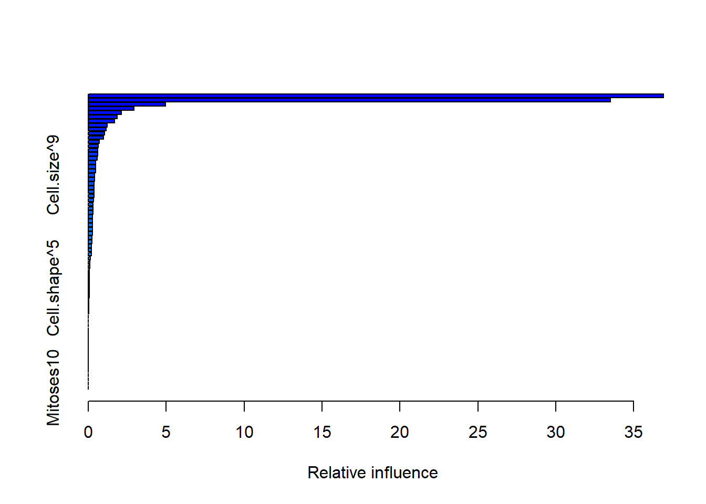
## var rel.inf
## Cell.size.L Cell.size.L 4.333981e+01
## Cell.shape.L Cell.shape.L 2.601126e+01
## Marg.adhesion.L Marg.adhesion.L 4.567125e+00
## Cl.thickness.L Cl.thickness.L 4.514739e+00
## Epith.c.size.L Epith.c.size.L 2.350787e+00
## Cell.size^5 Cell.size^5 1.908621e+00
## Cell.size^6 Cell.size^6 1.759940e+00
## Marg.adhesion^5 Marg.adhesion^5 1.189419e+00
## Marg.adhesion^9 Marg.adhesion^9 1.065543e+00
## Epith.c.size^9 Epith.c.size^9 8.654354e-01
## Cell.shape^8 Cell.shape^8 8.366234e-01
## Cell.shape^7 Cell.shape^7 7.910575e-01
## Epith.c.size^8 Epith.c.size^8 6.890992e-01
## Bl.cromatin4 Bl.cromatin4 6.486113e-01
## Cell.size^7 Cell.size^7 6.477864e-01
## Cl.thickness^9 Cl.thickness^9 6.216551e-01
## Marg.adhesion.Q Marg.adhesion.Q 5.833199e-01
## Epith.c.size^6 Epith.c.size^6 5.472963e-01
## Cell.size^8 Cell.size^8 5.238893e-01
## Epith.c.size.Q Epith.c.size.Q 4.481621e-01
## Cell.size^4 Cell.size^4 4.226525e-01
## Cell.shape^5 Cell.shape^5 4.067677e-01
## Bl.cromatin5 Bl.cromatin5 4.008198e-01
## Cell.shape^9 Cell.shape^9 3.920133e-01
## Epith.c.size^5 Epith.c.size^5 3.807022e-01
## Cell.size^9 Cell.size^9 3.495091e-01
## Marg.adhesion^8 Marg.adhesion^8 2.997465e-01
## Cl.thickness.Q Cl.thickness.Q 2.817560e-01
## Epith.c.size^7 Epith.c.size^7 2.636061e-01
## Marg.adhesion^7 Marg.adhesion^7 2.613966e-01
## Cell.shape^4 Cell.shape^4 2.394407e-01
## Cell.shape.Q Cell.shape.Q 2.160111e-01
## Marg.adhesion^6 Marg.adhesion^6 2.026372e-01
## Bl.cromatin3 Bl.cromatin3 1.956111e-01
## Marg.adhesion^4 Marg.adhesion^4 1.947747e-01
## Cl.thickness^7 Cl.thickness^7 1.886788e-01
## Cl.thickness^8 Cl.thickness^8 1.611702e-01
## Cell.shape.C Cell.shape.C 1.418839e-01
## Normal.nucleoli10 Normal.nucleoli10 1.370266e-01
## Epith.c.size.C Epith.c.size.C 1.156896e-01
## Normal.nucleoli8 Normal.nucleoli8 1.135078e-01
## Cl.thickness^4 Cl.thickness^4 1.084151e-01
## Cell.shape^6 Cell.shape^6 1.008544e-01
## Marg.adhesion.C Marg.adhesion.C 1.004665e-01
## Mitoses2 Mitoses2 9.501434e-02
## Cell.size.Q Cell.size.Q 5.954155e-02
## Cell.size.C Cell.size.C 5.323606e-02
## Cl.thickness^5 Cl.thickness^5 5.228253e-02
## Cl.thickness^6 Cl.thickness^6 4.181975e-02
## Normal.nucleoli2 Normal.nucleoli2 3.597222e-02
## Bl.cromatin7 Bl.cromatin7 3.316032e-02
## Cl.thickness.C Cl.thickness.C 2.466697e-02
## Epith.c.size^4 Epith.c.size^4 1.147031e-02
## Normal.nucleoli3 Normal.nucleoli3 6.796252e-03
## Bl.cromatin8 Bl.cromatin8 7.164247e-04
## Normal.nucleoli4 Normal.nucleoli4 2.566594e-06
## Bl.cromatin2 Bl.cromatin2 0.000000e+00
## Bl.cromatin6 Bl.cromatin6 0.000000e+00
## Bl.cromatin9 Bl.cromatin9 0.000000e+00
## Bl.cromatin10 Bl.cromatin10 0.000000e+00
## Normal.nucleoli5 Normal.nucleoli5 0.000000e+00
## Normal.nucleoli6 Normal.nucleoli6 0.000000e+00
## Normal.nucleoli7 Normal.nucleoli7 0.000000e+00
## Normal.nucleoli9 Normal.nucleoli9 0.000000e+00
## Mitoses3 Mitoses3 0.000000e+00
## Mitoses4 Mitoses4 0.000000e+00
## Mitoses5 Mitoses5 0.000000e+00
## Mitoses6 Mitoses6 0.000000e+00
## Mitoses7 Mitoses7 0.000000e+00
## Mitoses8 Mitoses8 0.000000e+00
## Mitoses10 Mitoses10 0.000000e+00## Confusion Matrix and Statistics
##
## Reference
## Prediction benign malignant
## benign 456 10
## malignant 2 231
##
## Accuracy : 0.9828
## 95% CI : (0.9702, 0.9911)
## No Information Rate : 0.6552
## P-Value [Acc > NIR] : < 2e-16
##
## Kappa : 0.9617
##
## Mcnemar's Test P-Value : 0.04331
##
## Sensitivity : 0.9956
## Specificity : 0.9585
## Pos Pred Value : 0.9785
## Neg Pred Value : 0.9914
## Prevalence : 0.6552
## Detection Rate : 0.6524
## Detection Prevalence : 0.6667
## Balanced Accuracy : 0.9771
##
## 'Positive' Class : benign
## ## Setting levels: control = benign, case = malignant## Setting direction: controls < cases##
## Call:
## roc.default(response = BreastCancer$Class, predictor = as.numeric(pred_gbm))
##
## Data: as.numeric(pred_gbm) in 458 controls (BreastCancer$Class benign) < 241 cases (BreastCancer$Class malignant).
## Area under the curve: 0.97716.3.1 Extreme gradient boost machine
In the examples above, the outcome variable is treated as a factor. Extreme gradient boost machine xgboost requires conversion to numeric variable.
## Warning: package 'xgboost' was built under R version 4.0.5##
## Attaching package: 'xgboost'## The following object is masked from 'package:rattle':
##
## xgboostlibrary(caret)
data("BreastCancer",package = "mlbench")
#predict breast cancer
BreastCancer$Class<-as.character(BreastCancer$Class)
BreastCancer$Class[BreastCancer$Class=="benign"]<-0
BreastCancer$Class[BreastCancer$Class=="malignant"]<-1
BreastCancer$Class<-as.numeric(BreastCancer$Class)
#remove ID column
#remove column a=with NA
#remaining 9 columns
#convert multiple columns to numeric
#lapply output a list
BreastCancer2<-lapply(BreastCancer[,-c(1,7)], as.numeric)
BreastCancer2<-as.data.frame(BreastCancer2)
set.seed(1234)
parts = createDataPartition(BreastCancer2$Class, p = 0.75, list=F)
train = BreastCancer2[parts, ]
test = BreastCancer2[-parts, ]
X_train = data.matrix(train[,-9]) # independent variables for train
y_train = train[,9] # dependent variables for train
X_test = data.matrix(test[,-9]) # independent variables for test
y_test = test[,9] # dependent variables for test
# convert the train and test data into xgboost matrix type.
xgboost_train = xgb.DMatrix(data=X_train, label=as.matrix(y_train))
xgboost_test = xgb.DMatrix(data=X_test, label=as.matrix(y_test))
# train a model using our training data
# nthread is the number of CPU threads we use
# nrounds is the number of passes on the data
#the function xgboost exist in xgboost and rattle
model <- xgboost::xgboost(data = xgboost_train, max.depth = 2, eta = 1, nthread = 2, nrounds = 2, objective = "binary:logistic", verbose = 2) ## [1] train-logloss:0.221760
## [2] train-logloss:0.129150## Length Class Mode
## handle 1 xgb.Booster.handle externalptr
## raw 5820 -none- raw
## niter 1 -none- numeric
## evaluation_log 2 data.table list
## call 17 -none- call
## params 5 -none- list
## callbacks 2 -none- list
## feature_names 8 -none- character
## nfeatures 1 -none- numeric## [1] 0.04247886 0.04247886 0.93661994 0.04247886 0.04247886 0.93661994
## [7] 0.04247886 0.04247886 0.50793731 0.84730983 0.04247886 0.04247886
## [13] 0.04247886 0.93661994 0.13179043 0.61858213 0.04247886 0.93661994
## [19] 0.04247886 0.90757442 0.04247886 0.93661994 0.50793731 0.10175808
## [25] 0.04247886 0.13179043 0.04247886 0.04247886 0.04247886 0.04247886
## [31] 0.04247886 0.04247886 0.04247886 0.93661994 0.90757442 0.90757442
## [37] 0.93661994 0.90757442 0.04247886 0.61858213 0.04247886 0.04247886
## [43] 0.04247886 0.04247886 0.04247886 0.93661994 0.04247886 0.61858213
## [49] 0.04247886 0.04247886 0.93661994 0.61858213 0.93661994 0.04247886
## [55] 0.93661994 0.04247886 0.04247886 0.04247886 0.04247886 0.93661994
## [61] 0.93661994 0.04247886 0.93661994 0.93661994 0.04247886 0.93661994
## [67] 0.13179043 0.04247886 0.93661994 0.61858213 0.04247886 0.93661994
## [73] 0.04247886 0.04247886 0.04247886 0.04247886 0.93661994 0.93661994
## [79] 0.04247886 0.28787071 0.84532809 0.04247886 0.04247886 0.04247886
## [85] 0.04247886 0.93661994 0.93661994 0.93661994 0.04247886 0.84730983
## [91] 0.04247886 0.61858213 0.84730983 0.04247886 0.93661994 0.93661994
## [97] 0.93661994 0.61858213 0.04247886 0.04247886 0.04247886 0.04247886
## [103] 0.84730983 0.93661994 0.04247886 0.04247886 0.04247886 0.04247886
## [109] 0.04247886 0.93661994 0.10175808 0.04247886 0.10175808 0.61858213
## [115] 0.90757442 0.04247886 0.04247886 0.04247886 0.04247886 0.93661994
## [121] 0.04247886 0.04247886 0.04247886 0.04247886 0.04247886 0.93661994
## [127] 0.04247886 0.93661994 0.04247886 0.04247886 0.04247886 0.04247886
## [133] 0.04247886 0.04247886 0.93661994 0.04247886 0.04247886 0.93661994
## [139] 0.04247886 0.04247886 0.04247886 0.93661994 0.93661994 0.13179043
## [145] 0.04247886 0.04247886 0.04247886 0.04247886 0.93661994 0.04247886
## [151] 0.04247886 0.04247886 0.93661994 0.04247886 0.93661994 0.93661994
## [157] 0.04247886 0.93661994 0.93661994 0.10175808 0.04247886 0.04247886
## [163] 0.04247886 0.04247886 0.04247886 0.61858213 0.04247886 0.93661994
## [169] 0.04247886 0.10175808 0.04247886 0.93661994 0.04247886 0.93661994## [1] 0 0 1 0 0 1## [1] "test-error= 0.0632183908045977"6.4 KNN
K nearest neighbour (KNN) uses ‘feature similarity based on measure of distance between data points to make prediction. The K in KNN refers to the number of neighbours to define the case for similarity. K nearest neighbour is available from the caret library.
## [1] "Id" "Cl.thickness" "Cell.size" "Cell.shape"
## [5] "Marg.adhesion" "Epith.c.size" "Bare.nuclei" "Bl.cromatin"
## [9] "Normal.nucleoli" "Mitoses" "Class"#note Class is benign or malignant of class factor
#column Bare.nuclei removed due to NA
BreastCancer<-BreastCancer[,-c(1,7)]
#split data
set.seed(123)
split = caTools::sample.split(BreastCancer$Class, SplitRatio = 0.75)
Train = subset(BreastCancer, split == TRUE)
Test = subset(BreastCancer, split == FALSE)
#grid of values to test in cross-validation.
knn_Grid <- expand.grid(k = c(1:15))
knn_Control <- trainControl(method = "cv",
number = 10,
# repeats = 10, # uncomment for repeatedcv
## Estimate class probabilities
classProbs = TRUE,
## Evaluate performance using
## the following function
summaryFunction = twoClassSummary)
#scaling data is performed here under preProcess
knn <- caret::train(Class ~ .,
data = Train,
method = "knn",
trControl=knn_Control,
tuneGrid=knn_Grid,
#optimise with roc metric
metric="ROC")
summary(knn)## Length Class Mode
## learn 2 -none- list
## k 1 -none- numeric
## theDots 0 -none- list
## xNames 71 -none- character
## problemType 1 -none- character
## tuneValue 1 data.frame list
## obsLevels 2 -none- character
## param 0 -none- list## Confusion Matrix and Statistics
##
## Reference
## Prediction benign malignant
## benign 114 24
## malignant 0 36
##
## Accuracy : 0.8621
## 95% CI : (0.8018, 0.9096)
## No Information Rate : 0.6552
## P-Value [Acc > NIR] : 5.842e-10
##
## Kappa : 0.6628
##
## Mcnemar's Test P-Value : 2.668e-06
##
## Sensitivity : 1.0000
## Specificity : 0.6000
## Pos Pred Value : 0.8261
## Neg Pred Value : 1.0000
## Prevalence : 0.6552
## Detection Rate : 0.6552
## Detection Prevalence : 0.7931
## Balanced Accuracy : 0.8000
##
## 'Positive' Class : benign
## ## Setting levels: control = benign, case = malignant## Setting direction: controls < cases##
## Call:
## roc.default(response = Test$Class, predictor = as.numeric(pred_knn))
##
## Data: as.numeric(pred_knn) in 114 controls (Test$Class benign) < 60 cases (Test$Class malignant).
## Area under the curve: 0.8#https://plotly.com/r/knn-classification/
pdb <- cbind(Test[,-9], Test[,9])
pdb <- cbind(pdb, pred_knn)
fig <- plotly::plot_ly(data = pdb,
x = ~as.numeric(Test$Cl.thickness),
y = ~as.numeric(Test$Epith.c.size),
type = 'scatter', mode = 'markers',color = ~pred_knn, colors = 'RdBu',
symbol = ~Test$Class, split = ~Test$Class,
symbols = c('square-dot','circle-dot'),
marker = list(size = 12, line = list(color = 'black', width = 1)))
fig## Warning: `arrange_()` was deprecated in dplyr 0.7.0.
## Please use `arrange()` instead.
## See vignette('programming') for more help6.5 Support vector machine
In brief, support vector machine regression (SVR) can be seen as a way to enhance data which may not be easily separated in its native space. It manipulates data from low dimension to higher dimension in feature space and which can reveal relationship not discernible in low dimensional space. It does this around the hyperparameter controlling the margin of the data from a fitted line in a way not dissimilar from fitting a regression line based on minimising least squares. The default setting is radial basis function.
library(e1071)
library(caret)
# The Breast cancer data is used again from knn
trctrl <- trainControl(method = "repeatedcv", number = 10, repeats = 3)
#scaling data is performed here under preProcess
svm_Linear <- caret::train(Class ~ .,
data = Train,
method = "svmLinear",
trControl=trctrl,
preProcess = c("center", "scale"),
tuneLength = 10)
summary(svm_Linear)## Length Class Mode
## 1 ksvm S4## Confusion Matrix and Statistics
##
## Reference
## Prediction benign malignant
## benign 455 13
## malignant 3 228
##
## Accuracy : 0.9771
## 95% CI : (0.9631, 0.9869)
## No Information Rate : 0.6552
## P-Value [Acc > NIR] : < 2e-16
##
## Kappa : 0.9488
##
## Mcnemar's Test P-Value : 0.02445
##
## Sensitivity : 0.9934
## Specificity : 0.9461
## Pos Pred Value : 0.9722
## Neg Pred Value : 0.9870
## Prevalence : 0.6552
## Detection Rate : 0.6509
## Detection Prevalence : 0.6695
## Balanced Accuracy : 0.9698
##
## 'Positive' Class : benign
## ## Setting levels: control = benign, case = malignant## Setting direction: controls < cases##
## Call:
## roc.default(response = BreastCancer$Class, predictor = as.numeric(pred))
##
## Data: as.numeric(pred) in 458 controls (BreastCancer$Class benign) < 241 cases (BreastCancer$Class malignant).
## Area under the curve: 0.96986.5.1 Survival analysis using random forest
Random forest can be used for performing survival analysis using ranger, randomforestSRC. The example below is an example using the lung cancer trial.
#data from survival package on NCCTG lung cancer trial
#https://stat.ethz.ch/R-manual/R-devel/library/survival/html/lung.html
data(cancer, package="survival")
#time in days
#status censored=1, dead=2
#sex:Male=1 Female=2
library(ranger)##
## Attaching package: 'ranger'## The following object is masked from 'package:rattle':
##
## importance## -- Attaching packages --------------------------------------- tidyverse 1.3.0 --## v tidyr 1.1.4 v dplyr 1.0.8
## v readr 1.4.0 v stringr 1.4.0
## v purrr 0.3.4 v forcats 0.5.0## Warning: package 'tidyr' was built under R version 4.0.5## Warning: package 'dplyr' was built under R version 4.0.5## -- Conflicts ------------------------------------------ tidyverse_conflicts() --
## x stringr::boundary() masks strucchange::boundary()
## x dplyr::filter() masks stats::filter()
## x dplyr::lag() masks stats::lag()
## x purrr::lift() masks caret::lift()
## x dplyr::slice() masks xgboost::slice()##
## Attaching package: 'survival'## The following object is masked from 'package:caret':
##
## clustercancer2<-cancer %>% dplyr::select(time, status, age,sex, ph.ecog) %>% na.omit()
survival_formula<-formula(paste('Surv(', 'time', ',', 'status', ') ~ ','age+sex+ph.ecog'))
survival_forest <- ranger(survival_formula,
data = cancer2,
seed = 1234,
importance = 'permutation',
mtry = 2,
verbose = TRUE,
num.trees = 200,
write.forest=TRUE)
print("error:"); print(survival_forest$prediction.error)## [1] "error:"## [1] 0.391924Print variable importance
## age sex ph.ecog
## 0.008386083 0.030801816 0.065970251Probability of survival
plot(survival_forest$unique.death.times, survival_forest$survival[1,], type='l', col='orange', ylim=c(0.01,1))
lines(survival_forest$unique.death.times, survival_forest$survival[56,], col='blue')
plot(survival_forest$unique.death.times, survival_forest$survival[1,], type='l', col='orange', ylim=c(0.01,1))
for (x in c(2:100)) {
lines(survival_forest$unique.death.times, survival_forest$survival[x,], col='red')
}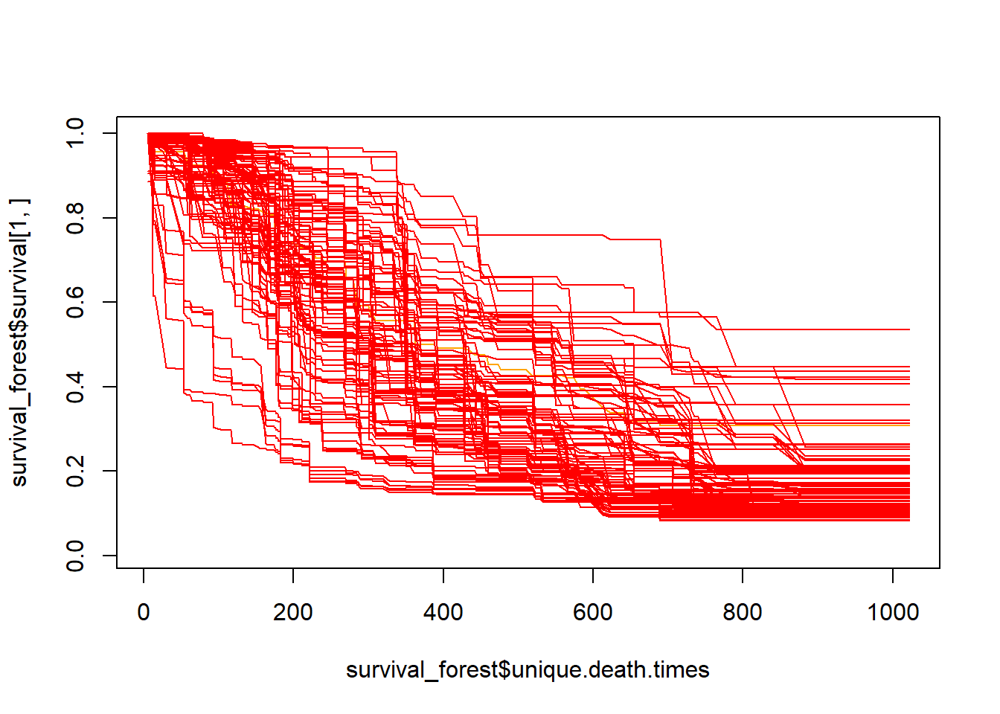
6.6 Non-negative matrix factorisation
Non-negative matrix factorisation is an unsupervised machine learning method, which seeks to explain the observed clinical features using smaller number of basis components (hidden variables). A matrix V of dimension m x n is factorise to 2 matrices W and H. W has dimensions m x k an H has dimensions n x k. For topic modeling in the chapter of text mining, V matrix is the document term matrix. Each row of H is the word embedding and the columns pf W represent the weight.
The interpretation of NMF components is similar to, but often more natural than, related methods such as factor analysis and principal component analysis. The non-negativity constraint in NMF leads to a simple “parts-based” interpretation and has been successfully used in facial recognition, metagene pattern discovery, and market research. For a clinical example, the matrix for NMF decomposition consists of rows of hospitals and their service availability.
The example below used the recommended procedure to estimate the factorization rank, based on stability of the cophenetic correlation coefficient and the residual error, prior to performing the NMF analysis. The data were permuted and the factorization rank computed. These data were used as reference for selecting factorization rank to minimize the chance of overfitting.
## NMF - BioConductor layer [OK] | Shared memory capabilities [NO: windows] | Cores 7/8##
## Attaching package: 'NMF'## The following object is masked from 'package:party':
##
## fit## The following object is masked from 'package:modeltools':
##
## fitlibrary(tidyverse)
edge<- read.csv("./Data-Use/Hosp_Network_geocoded.csv")
df<-edge[,c(2:dim(edge)[2])]
row.names(df)<-edge[,1] #bipartite matrix
#select columns#remove distance data
df_se<-edge[,c(2:16)]
row.names(df_se)<-edge[,1] #bipartite matrix
#south eastern hospitals
#select rows
df_se<-df_se[c(1,6,7,11,12,13,14,17,19,20,24,31,33,34,35),]
#estimate factorisation rank-prevent overfitting
estim.r <- nmf(df_se, 2:6, nrun = 10, seed = 123456)
plot(estim.r)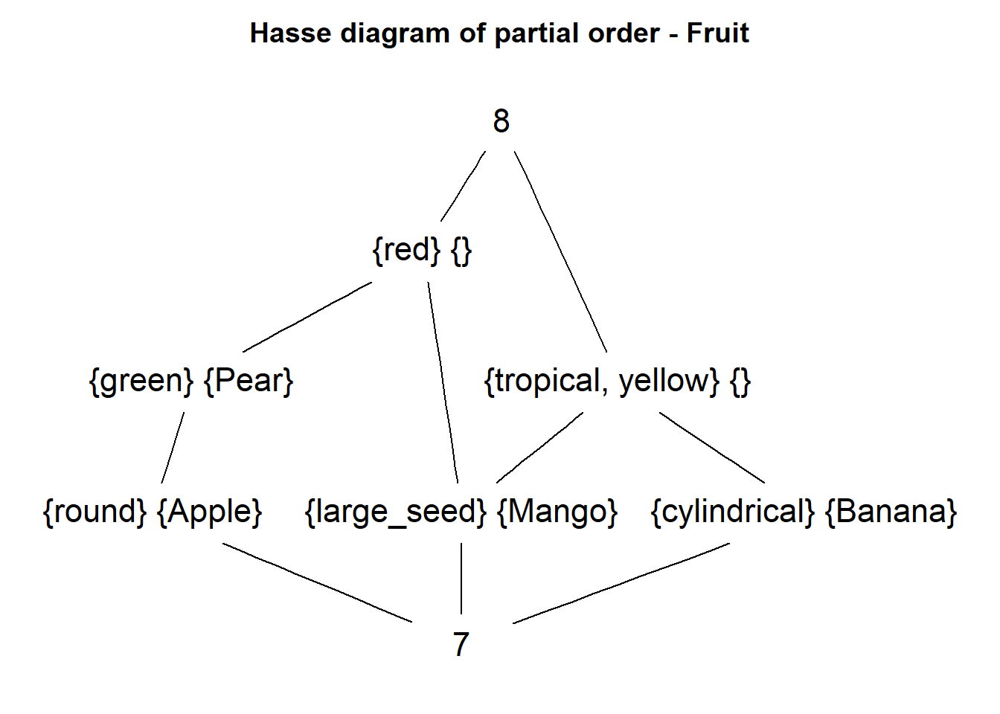

The optimal number of rank for this data is likely to be 4.
#Using the data above we can use which argument to find the order
#since the starting point is 2 we just need to add 1
Rank=which(estim.r$measures$cophenetic==max(estim.r$measures$cophenetic))+1
model<-nmf(df_se, Rank,nrun=100)
pmodel<-predict(model,prob=TRUE)
coefmap(model)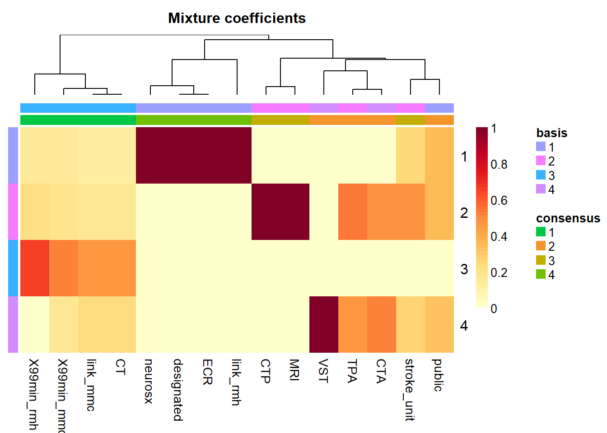
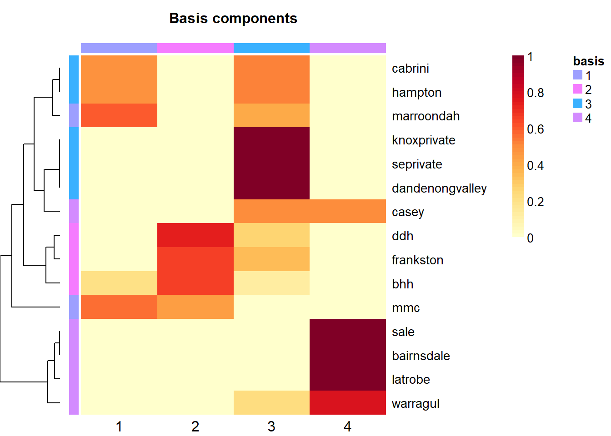
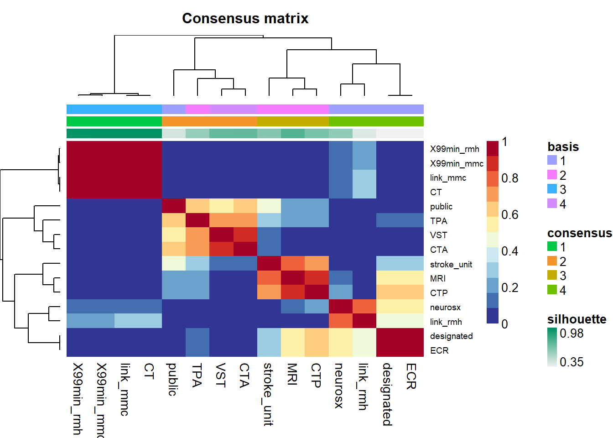
6.7 Formal concept analysis
This is an unsupervised machine learning method which takes an input matrix of objects and attributes (binary values) and seeks to find the hierarchy of relations. Each concept shares a set of attributes with other objects and each sub-concept shares a smaller set of attributes with a subset of the objects. A Hasse diagram is used to display the hierarchy of relations.
First we will illustrate with a simple relationship among fruit. Note in this example there is no close set for apple and pear, as both share the attribute of green color. There is a close set for the tropical fruit mango and and banana.
There are several libraries for FCA. Here we will use multiplex. The fcaR library can also handle fuzzy data.
## Warning: package 'multiplex' was built under R version 4.0.5## Loading required package: graph##
## Attaching package: 'graph'## The following object is masked from 'package:stringr':
##
## boundary## The following object is masked from 'package:party':
##
## nodes## The following object is masked from 'package:strucchange':
##
## boundary##
## Attaching package: 'Rgraphviz'## The following object is masked from 'package:NMF':
##
## namefr<-data.frame(Fruit=c("Apple", "Banana","Pear", "Mango"),
round=c(1,0,0,0),
cylindrical=c(0,1,0,0),
yellow=c(0,1,0,1),
red=c(1,0,1,1),
green=c(1,0,1,0), #color when ripe
tropical=c(0,1,0,1),
large_seed=c(0,0,0,1)
)
df<-fr[,c(2:dim(fr)[2])]
row.names(df)<-fr[,1] #bipartite matrix
#perform Galois derivations between partially ordered subsets
#galois(df_se',labeling = "full")
gf <- galois(df, labeling = "reduced")
#partial ordering of concept
po<-partial.order(gf,type="galois")
diagram(po, main="Hasse diagram of partial order - Fruit") ## 4 4 3 2
## 1 {round} {Apple} {cylindrical} {Banana} {tropical, yellow} {} {red} {}
## 3 4 5 1
## 1 {green} {Pear} {large_seed} {Mango} 7 8Next we illustrate FCA in network of hospitals in South-Eastern Melbourne. The objects are the hospitals and the attributes are the services available in those hospitals.
#library(multiplex) #Algebraic Tools for the Analysis of Multiple Social Networks
#library(Rgraphviz) #plot hasse diagram
#install BiocManager::install("Rgraphviz")
edge<- read.csv("./Data-Use/Hosp_Network_geocoded.csv")
df<-edge[,c(2:dim(edge)[2])]
row.names(df)<-edge[,1] #bipartite matrix
#select columns#remove distance data
df_se<-edge[,c(2:16)]
row.names(df_se)<-edge[,1] #bipartite matrix
#south eastern hospitals
#select rows
df_se<-df_se[c(1,6,7,11,12,13,14,17,19,20,24,31,33,34,35),]
#perform Galois derivations between partially ordered subsets
#galois(df_se',labeling = "full")
gf <- galois(df_se, labeling = "reduced")
#partial ordering of concept
po<-partial.order(gf,type="galois")
diagram(po, main="Hasse diagram of partial order with reduced context") 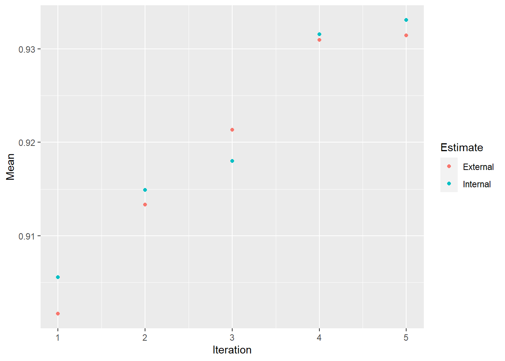
## 9 4 1
## 1 {designated, ECR} {mmc} {link_rmh} {} {CT, link_mmc} {}
## 3 2
## 1 {X99min_rmh} {dandenongvalley, knoxprivate, seprivate} {X99min_mmc} {}
## 2 3 3 7 6 5 3
## 1 {public} {} {TPA} {} {CTA} {} {CTP} {ddh} {MRI} {} {VST} {} {stroke_unit} {}
## 8 10 5 8 6 4 6 6
## 1 {neurosx} {cabrini} 14 {} {hampton} {} {bhh} {} {marroondah} 18 19 {} {casey}
## 8 5 3 5 4 6 4 4 7 5 4
## 1 {} {warragul} 22 23 24 25 {} {bairnsdale} 27 28 {} {frankston} 30 31
## 6 7
## 1 {} {sale} {} {latrobe}6.8 Evolutionary Algorithm
Evolutionary algorithm are search method which take the source of inspiration from nature such as evolution and survival of the fittest. These are seen as heuristic based method. The results from evolutionary algorithm shouldn’t be compared unless all conditions set are the same. In essence the findings are similar under the same conditions.
6.8.1 Simulated Annealing
This method uses idea in metallurgy whereby metal is heated and then cooled to alter its property.
#SA section is set not to run as the analysis takes a long time.
# a saved run is provided below
data("BreastCancer",package = "mlbench")
colnames(BreastCancer)
#check for duplicates
sum(duplicated(BreastCancer))
#remove duplicates
#keep Id to avoid creation of new duplicates
BreastCancer1<-unique(BreastCancer) #reduce 699 to 691 rows
#convert multiple columns to numeric
#lapply output a list
BreastCancer2<-lapply(BreastCancer1[,-c(7,11)], as.numeric) #list
BreastCancer2<-as.data.frame(BreastCancer2)
BreastCancer2$Class<-BreastCancer1$Class
x=BreastCancer2[,-10]
y=BreastCancer2$Class
sa_ctrl <- safsControl(functions = rfSA,
method = "repeatedcv",
repeats = 3, #default is 5
improve = 50)
set.seed(10)
glm_sa <- safs(x = x, y = y,
iters = 5, #default is 250
safsControl = sa_ctrl, method="glm")
#save(glm_sa,file="Logistic_SimulatedAnnealing.Rda")
#############################################
#
#Simulated Annealing Feature Selection
#
#691 samples
#9 predictors
#2 classes: 'benign', 'malignant'
#
#Maximum search iterations: 5
#Restart after 50 iterations without improvement (0 restarts on average)
#
#Internal performance values: Accuracy, Kappa
#Subset selection driven to maximize internal Accuracy
#
#External performance values: Accuracy, Kappa
#Best iteration chose by maximizing external Accuracy
#External resampling method: Cross-Validated (10 fold, repeated 3 times)
#During resampling:
# * the top 5 selected variables (out of a possible 9):
# Bl.cromatin (56.7%), Id (46.7%), Cl.thickness (43.3%), Epith.c.size (43.3%), #Marg.adhesion (43.3%)
# * on average, 3.5 variables were selected (min = 2, max = 5)
#
#In the final search using the entire training set:
# * 2 features selected at iteration 5 including:
# Cl.thickness, Cell.size
# * external performance at this iteration is
#
# Accuracy Kappa
# 0.9314 0.8479 6.8.2 Genetic Algorithm
Genetic algorithm is a machine learning tool based on ideas from Darwin’s concept of natural selection. It is based on mutation, crossover and selection. Genetic algorithm can be used in any situation. The issue is in finding the fitness function to evaluate the output. Since it does not depend on gradient descent algorithm, it is less likely to be stuck in local minima compared to other machine learning methods. Genetic algorithm is available in R as part of caret and GA libraries. Genetic algorithm can be used to optimise feature selection for regression modelling at the expense of much longer running time.
One potential issue with using cross-validation in genetic algorithm for feature selection is that it would be not right to use it again when feeding this data into another machine learning method.
#GA
library(caret)
data("BreastCancer",package = "mlbench")
colnames(BreastCancer)
#check for duplicates
sum(duplicated(BreastCancer))
#remove duplicates
#keep Id to avoid creation of new duplicates
BreastCancer1<-unique(BreastCancer) #reduce 699 to 691 rows
#convert multiple columns to numeric
#lapply output a list
BreastCancer2<-lapply(BreastCancer1[,-c(7,11)], as.numeric) #list
BreastCancer2<-as.data.frame(BreastCancer2)
BreastCancer2$Class<-BreastCancer1$Class
#check for NA
anyNA(BreastCancer2)
split = caTools::sample.split(BreastCancer2$Class, SplitRatio = 0.7)
Train = subset(BreastCancer2, split == TRUE)
Test = subset(BreastCancer2, split == FALSE)
x=Train[,-10]
y=Train$Class
#cross validation indicates the number of cycle of the procedure from randomly generating new population of chromosome to mutate child chromosome.
ga_ctrl <- gafsControl(functions = rfGA,
method = "cv",
repeats = 3, # default is 10
genParallel=TRUE, # Use parallel programming
allowParallel = TRUE
)
## Use the same random number seed as the RFE process
## so that the same CV folds are used for the external
## resampling.
set.seed(10)
system.time(glm_ga <- gafs(x = x, y = y,
iters = 5, #recommended is 200
gafsControl = ga_ctrl, method="glm"))
#save(glm_ga,file="Logistic_GeneticAlgorithm.Rda")
################################################################
# The output of glm_ga
#Genetic Algorithm Feature Selection
#484 samples
#9 predictors
#2 classes: 'benign', 'malignant'
#Maximum generations: 5
#Population per generation: 50
#Crossover probability: 0.8
#Mutation probability: 0.1
#Elitism: 0
#
#Internal performance values: Accuracy, Kappa
#Subset selection driven to maximize internal Accuracy
#
#External performance values: Accuracy, Kappa
#Best iteration chose by maximizing external Accuracy
#External resampling method: Cross-Validated (10 fold)
#
#During resampling:
# * the top 5 selected variables (out of a possible 9):
# Cell.shape (100%), Cl.thickness (100%), Epith.c.size (100%),
Normal.nucleoli #(100%), Id (90%)
# * on average, 6.7 variables were selected (min = 5, max = 8)
#
#In the final search using the entire training set:
# * 7 features selected at iteration 2 including:
# Cl.thickness, Cell.shape, Marg.adhesion, Epith.c.size, Bl.cromatin ...
# * external performance at this iteration is
#
# Accuracy Kappa
# 0.9691 0.9328
#The output from the Genetic Algorithm is plotted as mean fitness by generations. This plot shows the internal and external accuracy estimate from cross validation.
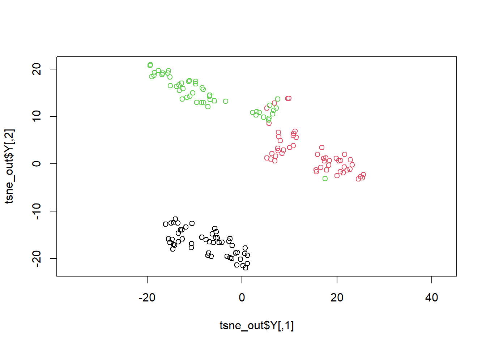
6.9 Manifold learning
6.9.1 T-Stochastic Neighbourhood Embedding
T-Stochastic Neighbourhood Embedding (TSNE) is a maifold learning method which seeks to transform the complex data into low (2) dimensions while maintaining the distance between neighbouring objects. The distance between data points are can be measured using Euclidean distance or other measures of distance. The transformed data points are conditional probabilities that represents similarities. The original description of TSNE used PCA as a first step to speed up computation and reduce noise.
This method is listed here as it is a form of data reduction method. This non-linear method is different from PCA in that the low dimensional output of TSNE are not intended for machine learning. TSNE is implemented in R as Rtsne. The perplexity parameter allows tuning of the proximity of the data points. The PCA step can be performed within Rtsne by setting the pca argument. The default number of iterations or max_iter is 1000.
##
## Attaching package: 'mice'## The following objects are masked from 'package:BiocGenerics':
##
## cbind, rbind## The following object is masked from 'package:stats':
##
## filter## The following objects are masked from 'package:base':
##
## cbind, rbind## [1] "Id" "Cl.thickness" "Cell.size" "Cell.shape"
## [5] "Marg.adhesion" "Epith.c.size" "Bare.nuclei" "Bl.cromatin"
## [9] "Normal.nucleoli" "Mitoses" "Class"## [1] 8#remove duplicates
#keep Id to avoid creation of new duplicates
BreastCancer1<-unique(BreastCancer) #reduce 699 to 691 rows
#impute missing data
#m is number of multiple imputation, default is 5
#output is a list
imputed_Data <- mice(BreastCancer1, m=5, maxit = 5, method = 'pmm', seed = 500)##
## iter imp variable
## 1 1 Bare.nuclei
## 1 2 Bare.nuclei
## 1 3 Bare.nuclei
## 1 4 Bare.nuclei
## 1 5 Bare.nuclei
## 2 1 Bare.nuclei
## 2 2 Bare.nuclei
## 2 3 Bare.nuclei
## 2 4 Bare.nuclei
## 2 5 Bare.nuclei
## 3 1 Bare.nuclei
## 3 2 Bare.nuclei
## 3 3 Bare.nuclei
## 3 4 Bare.nuclei
## 3 5 Bare.nuclei
## 4 1 Bare.nuclei
## 4 2 Bare.nuclei
## 4 3 Bare.nuclei
## 4 4 Bare.nuclei
## 4 5 Bare.nuclei
## 5 1 Bare.nuclei
## 5 2 Bare.nuclei
## 5 3 Bare.nuclei
## 5 4 Bare.nuclei
## 5 5 Bare.nuclei#choose among the 5 imputed dataset
completeData <- complete(imputed_Data,2)
#convert multiple columns to numeric
#lapply output a list
BreastCancer2<-lapply(completeData[,-c(11)], as.numeric) #list
BreastCancer2<-as.data.frame(BreastCancer2)
BreastCancer2$Class<-BreastCancer1$Class
BC_unique <- unique(BreastCancer2) # Remove duplicates
set.seed(42) # Sets seed for reproducibility
tsne_out <- Rtsne(as.matrix(BC_unique[,-11]),
normalize = T, #normalise data
pca=T, dims = 3, #pca before analysis
perplexity=20, #tuning
verbose=FALSE) # Run TSNE
#plot(tsne_out$Y,col=BC_unique$Class,asp=1)
# Add a new column with color
mycolors <- c('red', 'blue')
BC_unique$color <- mycolors[ as.numeric(BC_unique$Class) ]
rgl::plot3d(x=tsne_out$Y[,1], y=tsne_out$Y[,2], z=tsne_out$Y[,3], type = 'p', col=BC_unique$color, size=8)
#rgl::legend3d("topright", legend = names(mycolors), pch = 16, col = colors, cex=1, inset=c(0.02))The example with Breast cancer didn’t turn out as well. Let’s try TSNE with the iris dataset.
#TSNE
data(iris)
#5 columns
Iris_unique <- unique(iris) # Remove duplicates
set.seed(42) # Sets seed for reproducibility
tsne_out <- Rtsne(as.matrix(Iris_unique[,-5]), dims = 2, perplexity=10, verbose=FALSE) # Run TSNE
plot(tsne_out$Y,col=Iris_unique$Species,asp=1)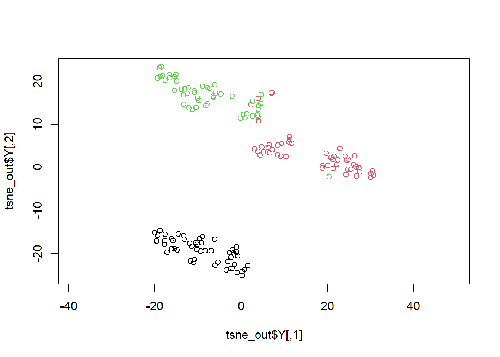
6.9.2 Self organising map
Self organising map is an unsupervised machine learning method and is excellent for viewing complex data in low dimensional space i.e. a data reduction method. SOM is available as part of kohonen library. It uses competitive learning to adjust its weight in contrast to other neural network approaches. Each node is evaluated to participate in the neural network. Input vectors that are close to each other in high dimensional space are mapped to be close to each other in low dimensional space.
The codes below are modified from https://rpubs.com/AlgoritmaAcademy/som for use in aanalysis of iris data.
## Warning: package 'kohonen' was built under R version 4.0.5##
## Attaching package: 'kohonen'## The following object is masked from 'package:purrr':
##
## map#unsupervised SOM
#use iris dataset 150 x 5
set.seed(100)
#convert to numeric matrix
iris.train <- as.matrix(scale(iris[,-5]))
# grid should be smaller than dim(iris) 150 x5
#xdim =10 and ydim=10 would be < 120
iris.grid <- somgrid(xdim = 10, ydim = 10, topo = "hexagonal")
#som model
iris.model <- som(iris.train, iris.grid, rlen = 500, radius = 2.5, keep.data = TRUE, dist.fcts = "euclidean")
plot(iris.model, type = "mapping", pchs = 19, shape = "round")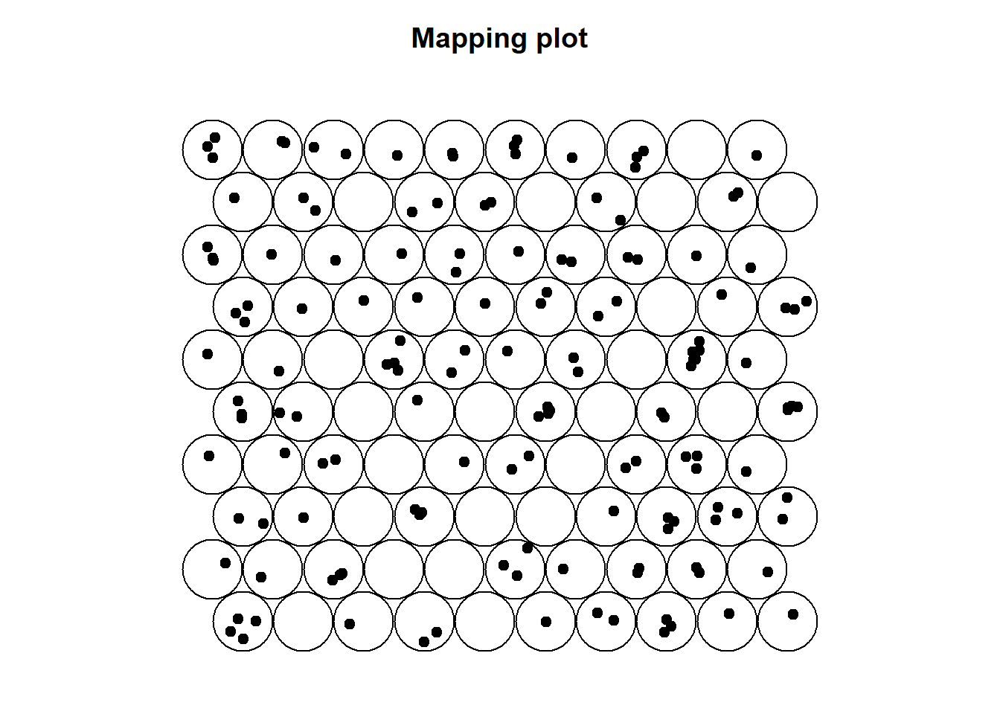
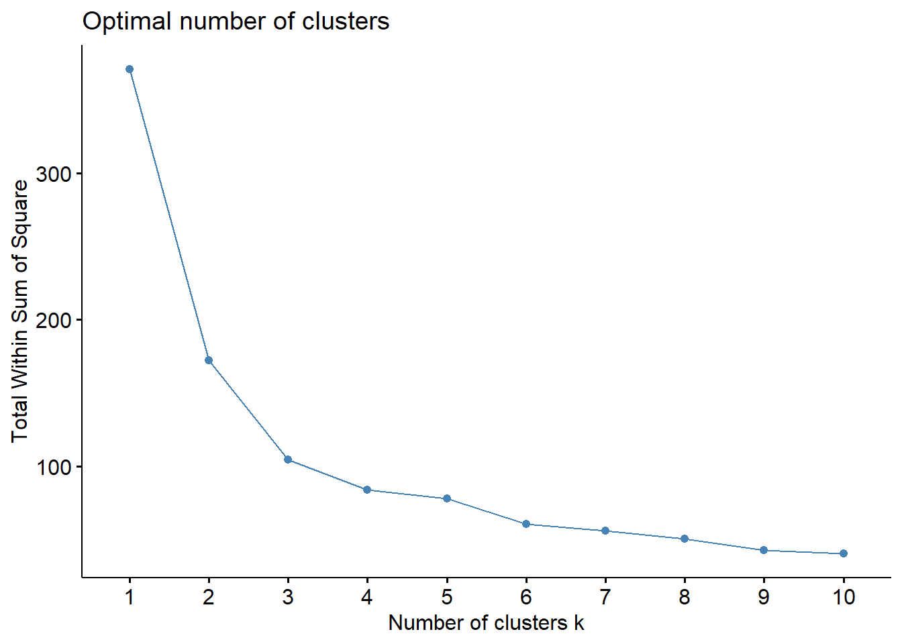
The plot of training shows that the distance between nodes reached a plateau after 300 iterations.
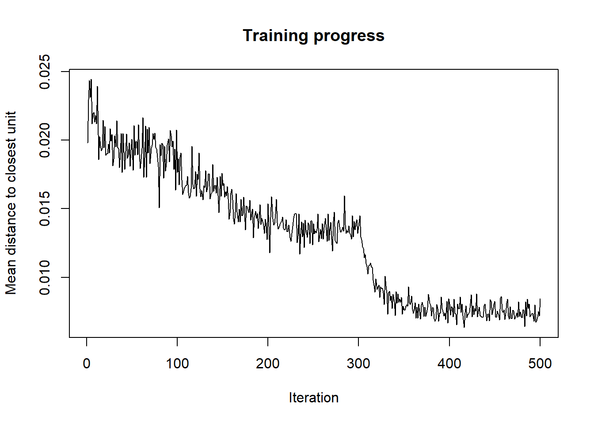
Supervised SOM is now performed with the same iris data.
#SOM
set.seed(100)
int <- sample(nrow(iris), nrow(iris)*0.8)
train <- iris[int,]
test <- iris[-int,]
# scaling data
trainX <- scale(train[,-5])
testX <- scale(test[,-5], center = attr(trainX, "scaled:center"))
# make label
#iris$species is already of class factor
train.label <- train[,5]
test.label <- test[,5]
test[,5] <- 916
testXY <- list(independent = testX, dependent = test.label)
# make a train data sets that scaled
# convert them to be a numeric matrix
iris.train <- as.matrix(scale(train[,-5]))
set.seed(100)
# grid should be smaller than dim(train) 120 x5
#xdim =10 and ydim=10 would be < 120
iris.grid <- somgrid(xdim = 10, ydim = 10, topo = "hexagonal")
#som model
iris.model <- som(iris.train, iris.grid, rlen = 500, radius = 2.5, keep.data = TRUE, dist.fcts = "euclidean")
class <- xyf(trainX, classvec2classmat(train.label), iris.grid, rlen = 500)
plot(class, type = "changes")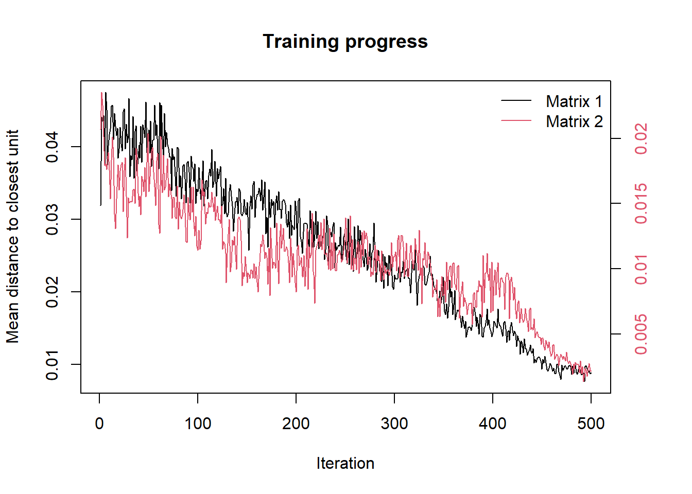
pred <- predict(class, newdata = testXY)
table(Predict = pred$predictions[[2]], Actual = test.label)## Actual
## Predict setosa versicolor virginica
## setosa 9 0 0
## versicolor 0 8 0
## virginica 0 0 7Determine number of clusters.
## Warning: package 'factoextra' was built under R version 4.0.5## Welcome! Want to learn more? See two factoextra-related books at https://goo.gl/ve3WBaset.seed(100)
clust <- kmeans(iris.model$codes[[1]], 6)
plot(iris.model, type = "codes", bgcol = rainbow(9)[clust$cluster],
main = "Cluster SOM")
add.cluster.boundaries(iris.model, clust$cluster)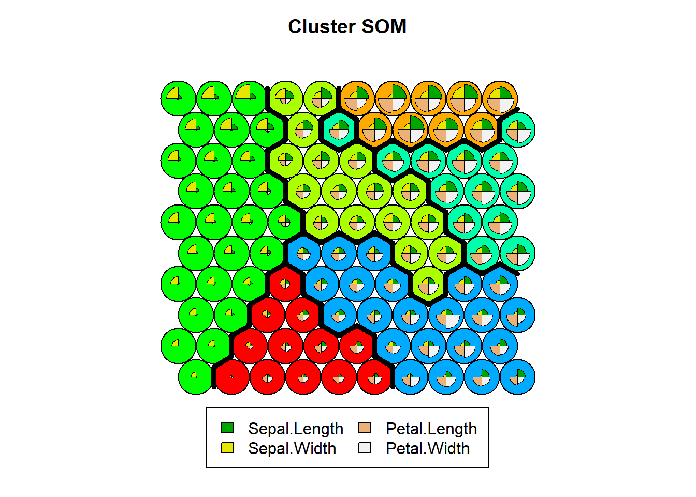
6.10 Deep learning
Deep learning is a neural network with many layers: inner, multiple hidden and outer layer. Deep learning methods can be supervised or unsupervised. It uses gradient descent algorithm in search for the solution. One potential issue that it may be stuck in a local minima rather than the global minima.
There are several R libraries for performing deep learning. It’s worth checking out the installation requirement as some require installing the library in python and uses the reticulate library to perform analysis. The examples used here are R libraries including RSNNS.
6.10.1 Multiplayer Perceptron
Multilayer perceptron is a type of deep learning. . It passes information in one direction from inner to hidden and outer layer and hence is referred to as feed forward artificial neural network. It trains the data using a loss function which adapt to the parameter and optimise according to the specified learning rate. Overfitting is minimised by using an L2 regularisation penalty, termed alpha.
For tabular data, deep learning may not necessarily be better than other machine learning method. By contrast, deep learning may be better for unstructured data.
## Warning: package 'RSNNS' was built under R version 4.0.5## Loading required package: Rcpp## Warning: package 'Rcpp' was built under R version 4.0.5##
## Attaching package: 'RSNNS'## The following object is masked from 'package:kohonen':
##
## som## The following objects are masked from 'package:caret':
##
## confusionMatrix, train## [1] "Id" "Cl.thickness" "Cell.size" "Cell.shape"
## [5] "Marg.adhesion" "Epith.c.size" "Bare.nuclei" "Bl.cromatin"
## [9] "Normal.nucleoli" "Mitoses" "Class"#remove ID column
#remove column a=with NA
#alternative is to impute
BreastCancer<-BreastCancer[,-c(1,7)]#remaining 9 columns
#convert multiple columns to numeric
#lapply output a list
BreastCancer2<-lapply(BreastCancer[,-c(9)], as.numeric)
BreastCancer2<-as.data.frame(BreastCancer2)
BreastCancer2<-merge(BreastCancer2, BreastCancer$Class)
#note Class is benign or malignant of class factor
#column Bare.nuclei removed due to NA
#split data
set.seed(123)
BreastCancer2Values <- BreastCancer2[,c(1:8)]
BreastCancer2Targets <- decodeClassLabels(BreastCancer2[,9])
#this returns the orginal file as a list
BreastCancer2 <- splitForTrainingAndTest(BreastCancer2Values, BreastCancer2Targets, ratio=0.15) #ratio is percentage for test data
BreastCancer2 <- normTrainingAndTestSet(BreastCancer2) #put out a list object
model <- mlp(BreastCancer2$inputsTrain,
BreastCancer2$targetsTrain,
size=5, #number of unit in hidden layer
learnFuncParams=c(0.1),
maxit=50, #number of iteration to learn
inputsTest=BreastCancer2$inputsTest, targetsTest=BreastCancer2$targetsTest)
summary(model)## SNNS network definition file V1.4-3D
## generated at Thu Mar 02 12:48:58 2023
##
## network name : RSNNS_untitled
## source files :
## no. of units : 15
## no. of connections : 50
## no. of unit types : 0
## no. of site types : 0
##
##
## learning function : Std_Backpropagation
## update function : Topological_Order
##
##
## unit default section :
##
## act | bias | st | subnet | layer | act func | out func
## ---------|----------|----|--------|-------|--------------|-------------
## 0.00000 | 0.00000 | i | 0 | 1 | Act_Logistic | Out_Identity
## ---------|----------|----|--------|-------|--------------|-------------
##
##
## unit definition section :
##
## no. | typeName | unitName | act | bias | st | position | act func | out func | sites
## ----|----------|------------------|----------|----------|----|----------|--------------|----------|-------
## 1 | | Input_1 | -0.14849 | -0.12745 | i | 1,0,0 | Act_Identity | |
## 2 | | Input_2 | 1.59566 | 0.17298 | i | 2,0,0 | Act_Identity | |
## 3 | | Input_3 | 1.61379 | -0.05461 | i | 3,0,0 | Act_Identity | |
## 4 | | Input_4 | 0.76866 | 0.22981 | i | 4,0,0 | Act_Identity | |
## 5 | | Input_5 | 0.35424 | 0.26428 | i | 5,0,0 | Act_Identity | |
## 6 | | Input_6 | 2.69324 | -0.27267 | i | 6,0,0 | Act_Identity | |
## 7 | | Input_7 | 0.37127 | 0.01686 | i | 7,0,0 | Act_Identity | |
## 8 | | Input_8 | -0.35178 | 0.23545 | i | 8,0,0 | Act_Identity | |
## 9 | | Hidden_2_1 | 0.01505 | -4.19604 | h | 1,2,0 |||
## 10 | | Hidden_2_2 | 0.01511 | -4.18367 | h | 2,2,0 |||
## 11 | | Hidden_2_3 | 0.01446 | -4.17642 | h | 3,2,0 |||
## 12 | | Hidden_2_4 | 0.01596 | -4.17519 | h | 4,2,0 |||
## 13 | | Hidden_2_5 | 0.01394 | -4.20952 | h | 5,2,0 |||
## 14 | | Output_benign | 0.71619 | 0.92553 | o | 1,4,0 |||
## 15 | | Output_malignant | 0.28380 | -0.92463 | o | 2,4,0 |||
## ----|----------|------------------|----------|----------|----|----------|--------------|----------|-------
##
##
## connection definition section :
##
## target | site | source:weight
## -------|------|---------------------------------------------------------------------------------------------------------------------
## 9 | | 8:-0.00576, 7: 0.00727, 6:-0.00682, 5:-0.01802, 4: 0.01969, 3:-0.08010, 2: 0.09268, 1:-0.00830
## 10 | | 8:-0.00727, 7: 0.02291, 6:-0.00065, 5:-0.01455, 4: 0.01343, 3: 0.07342, 2:-0.07952, 1:-0.00231
## 11 | | 8:-0.02047, 7: 0.00020, 6:-0.03410, 5: 0.01364, 4: 0.05110, 3:-0.04571, 2: 0.04225, 1:-0.00803
## 12 | | 8: 0.00616, 7: 0.00433, 6: 0.01932, 5:-0.03026, 4: 0.00085, 3:-0.02034, 2: 0.02802, 1:-0.00241
## 13 | | 8:-0.01292, 7: 0.00408, 6: 0.00104, 5: 0.00315, 4: 0.04243, 3:-0.07731, 2: 0.02324, 1: 0.03049
## 14 | | 13: 0.02423, 12:-0.07496, 11:-0.05541, 10: 0.00556, 9: 0.11298
## 15 | | 13: 0.00930, 12:-0.09087, 11:-0.07273, 10:-0.00928, 9: 0.09645
## -------|------|---------------------------------------------------------------------------------------------------------------------## Input_1 Input_2 Input_3 Input_4 Input_5 Input_6 Input_7
## Input_1 0 0 0 0 0 0 0
## Input_2 0 0 0 0 0 0 0
## Input_3 0 0 0 0 0 0 0
## Input_4 0 0 0 0 0 0 0
## Input_5 0 0 0 0 0 0 0
## Input_6 0 0 0 0 0 0 0
## Input_7 0 0 0 0 0 0 0
## Input_8 0 0 0 0 0 0 0
## Hidden_2_1 0 0 0 0 0 0 0
## Hidden_2_2 0 0 0 0 0 0 0
## Hidden_2_3 0 0 0 0 0 0 0
## Hidden_2_4 0 0 0 0 0 0 0
## Hidden_2_5 0 0 0 0 0 0 0
## Output_benign 0 0 0 0 0 0 0
## Output_malignant 0 0 0 0 0 0 0
## Input_8 Hidden_2_1 Hidden_2_2 Hidden_2_3 Hidden_2_4
## Input_1 0 -0.008297388 -0.0023071272 -0.0080346595 -0.0024123469
## Input_2 0 0.092682421 -0.0795219317 0.0422476456 0.0280190594
## Input_3 0 -0.080102183 0.0734154806 -0.0457138643 -0.0203440990
## Input_4 0 0.019693121 0.0134251378 0.0511028543 0.0008495782
## Input_5 0 -0.018019579 -0.0145501299 0.0136412643 -0.0302603953
## Input_6 0 -0.006820043 -0.0006510036 -0.0341013148 0.0193179399
## Input_7 0 0.007272426 0.0229080282 0.0001982169 0.0043261107
## Input_8 0 -0.005761668 -0.0072654216 -0.0204697531 0.0061640753
## Hidden_2_1 0 0.000000000 0.0000000000 0.0000000000 0.0000000000
## Hidden_2_2 0 0.000000000 0.0000000000 0.0000000000 0.0000000000
## Hidden_2_3 0 0.000000000 0.0000000000 0.0000000000 0.0000000000
## Hidden_2_4 0 0.000000000 0.0000000000 0.0000000000 0.0000000000
## Hidden_2_5 0 0.000000000 0.0000000000 0.0000000000 0.0000000000
## Output_benign 0 0.000000000 0.0000000000 0.0000000000 0.0000000000
## Output_malignant 0 0.000000000 0.0000000000 0.0000000000 0.0000000000
## Hidden_2_5 Output_benign Output_malignant
## Input_1 0.030488236 0.000000000 0.000000000
## Input_2 0.023243070 0.000000000 0.000000000
## Input_3 -0.077309184 0.000000000 0.000000000
## Input_4 0.042426150 0.000000000 0.000000000
## Input_5 0.003149100 0.000000000 0.000000000
## Input_6 0.001040014 0.000000000 0.000000000
## Input_7 0.004078104 0.000000000 0.000000000
## Input_8 -0.012917383 0.000000000 0.000000000
## Hidden_2_1 0.000000000 0.112977110 0.096445039
## Hidden_2_2 0.000000000 0.005557933 -0.009281992
## Hidden_2_3 0.000000000 -0.055408385 -0.072732478
## Hidden_2_4 0.000000000 -0.074956760 -0.090871274
## Hidden_2_5 0.000000000 0.024229093 0.009299588
## Output_benign 0.000000000 0.000000000 0.000000000
## Output_malignant 0.000000000 0.000000000 0.000000000## $infoHeader
## name value
## 1 no. of units 15
## 2 no. of connections 50
## 3 no. of unit types 0
## 4 no. of site types 0
## 5 learning function Std_Backpropagation
## 6 update function Topological_Order
##
## $unitDefinitions
## unitNo unitName unitAct unitBias type posX posY posZ
## 1 1 Input_1 -0.14849401 -0.12745351 UNIT_INPUT 1 0 0
## 2 2 Input_2 1.59566152 0.17298311 UNIT_INPUT 2 0 0
## 3 3 Input_3 1.61378837 -0.05461386 UNIT_INPUT 3 0 0
## 4 4 Input_4 0.76865852 0.22981048 UNIT_INPUT 4 0 0
## 5 5 Input_5 0.35424057 0.26428038 UNIT_INPUT 5 0 0
## 6 6 Input_6 2.69324446 -0.27266610 UNIT_INPUT 6 0 0
## 7 7 Input_7 0.37127367 0.01686329 UNIT_INPUT 7 0 0
## 8 8 Input_8 -0.35178334 0.23545146 UNIT_INPUT 8 0 0
## 9 9 Hidden_2_1 0.01505203 -4.19604301 UNIT_HIDDEN 1 2 0
## 10 10 Hidden_2_2 0.01510857 -4.18367195 UNIT_HIDDEN 2 2 0
## 11 11 Hidden_2_3 0.01445658 -4.17642117 UNIT_HIDDEN 3 2 0
## 12 12 Hidden_2_4 0.01596041 -4.17518997 UNIT_HIDDEN 4 2 0
## 13 13 Hidden_2_5 0.01393753 -4.20952082 UNIT_HIDDEN 5 2 0
## 14 14 Output_benign 0.71619302 0.92553055 UNIT_OUTPUT 1 4 0
## 15 15 Output_malignant 0.28380045 -0.92462683 UNIT_OUTPUT 2 4 0
## actFunc outFunc sites
## 1 Act_Identity Out_Identity
## 2 Act_Identity Out_Identity
## 3 Act_Identity Out_Identity
## 4 Act_Identity Out_Identity
## 5 Act_Identity Out_Identity
## 6 Act_Identity Out_Identity
## 7 Act_Identity Out_Identity
## 8 Act_Identity Out_Identity
## 9 Act_Logistic Out_Identity
## 10 Act_Logistic Out_Identity
## 11 Act_Logistic Out_Identity
## 12 Act_Logistic Out_Identity
## 13 Act_Logistic Out_Identity
## 14 Act_Logistic Out_Identity
## 15 Act_Logistic Out_Identity
##
## $fullWeightMatrix
## Input_1 Input_2 Input_3 Input_4 Input_5 Input_6 Input_7
## Input_1 0 0 0 0 0 0 0
## Input_2 0 0 0 0 0 0 0
## Input_3 0 0 0 0 0 0 0
## Input_4 0 0 0 0 0 0 0
## Input_5 0 0 0 0 0 0 0
## Input_6 0 0 0 0 0 0 0
## Input_7 0 0 0 0 0 0 0
## Input_8 0 0 0 0 0 0 0
## Hidden_2_1 0 0 0 0 0 0 0
## Hidden_2_2 0 0 0 0 0 0 0
## Hidden_2_3 0 0 0 0 0 0 0
## Hidden_2_4 0 0 0 0 0 0 0
## Hidden_2_5 0 0 0 0 0 0 0
## Output_benign 0 0 0 0 0 0 0
## Output_malignant 0 0 0 0 0 0 0
## Input_8 Hidden_2_1 Hidden_2_2 Hidden_2_3 Hidden_2_4
## Input_1 0 -0.008297388 -0.0023071272 -0.0080346595 -0.0024123469
## Input_2 0 0.092682421 -0.0795219317 0.0422476456 0.0280190594
## Input_3 0 -0.080102183 0.0734154806 -0.0457138643 -0.0203440990
## Input_4 0 0.019693121 0.0134251378 0.0511028543 0.0008495782
## Input_5 0 -0.018019579 -0.0145501299 0.0136412643 -0.0302603953
## Input_6 0 -0.006820043 -0.0006510036 -0.0341013148 0.0193179399
## Input_7 0 0.007272426 0.0229080282 0.0001982169 0.0043261107
## Input_8 0 -0.005761668 -0.0072654216 -0.0204697531 0.0061640753
## Hidden_2_1 0 0.000000000 0.0000000000 0.0000000000 0.0000000000
## Hidden_2_2 0 0.000000000 0.0000000000 0.0000000000 0.0000000000
## Hidden_2_3 0 0.000000000 0.0000000000 0.0000000000 0.0000000000
## Hidden_2_4 0 0.000000000 0.0000000000 0.0000000000 0.0000000000
## Hidden_2_5 0 0.000000000 0.0000000000 0.0000000000 0.0000000000
## Output_benign 0 0.000000000 0.0000000000 0.0000000000 0.0000000000
## Output_malignant 0 0.000000000 0.0000000000 0.0000000000 0.0000000000
## Hidden_2_5 Output_benign Output_malignant
## Input_1 0.030488236 0.000000000 0.000000000
## Input_2 0.023243070 0.000000000 0.000000000
## Input_3 -0.077309184 0.000000000 0.000000000
## Input_4 0.042426150 0.000000000 0.000000000
## Input_5 0.003149100 0.000000000 0.000000000
## Input_6 0.001040014 0.000000000 0.000000000
## Input_7 0.004078104 0.000000000 0.000000000
## Input_8 -0.012917383 0.000000000 0.000000000
## Hidden_2_1 0.000000000 0.112977110 0.096445039
## Hidden_2_2 0.000000000 0.005557933 -0.009281992
## Hidden_2_3 0.000000000 -0.055408385 -0.072732478
## Hidden_2_4 0.000000000 -0.074956760 -0.090871274
## Hidden_2_5 0.000000000 0.024229093 0.009299588
## Output_benign 0.000000000 0.000000000 0.000000000
## Output_malignant 0.000000000 0.000000000 0.000000000par(mfrow=c(2,2))
plotIterativeError(model)
predictions <- predict(model,BreastCancer2$inputsTest)
plotRegressionError(predictions[,2], BreastCancer2$targetsTest[,2])
confusionMatrix(BreastCancer2$targetsTrain,fitted.values(model))## predictions
## targets 1
## 1 262125
## 2 153185## predictions
## targets 1
## 1 58017
## 2 15274plotROC(fitted.values(model)[,2], BreastCancer2$targetsTrain[,2])
plotROC(predictions[,2], BreastCancer2$targetsTest[,2])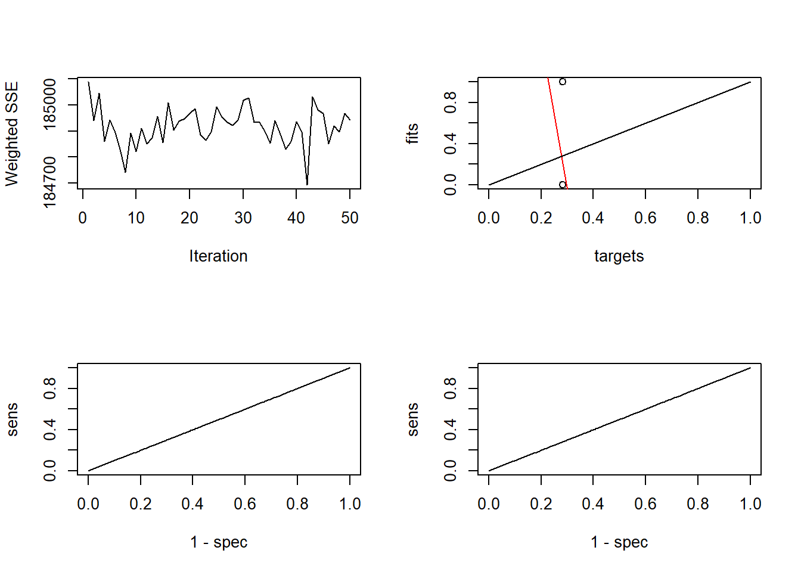
probs <- predictions / rowSums(predictions)
#confusion matrix with 402040-method
confusionMatrix(BreastCancer2$targetsTrain, encodeClassLabels(fitted.values(model), method="402040", l=0.4, h=0.6))## predictions
## targets 1
## 1 262125
## 2 1531856.10.2 CNN
Convolution neural network or CNN is an artifical neural network method that is well suited to classification of image data. CNN is able to develop an internal representation of the image.
6.10.3 RNN
Recurrent neural network or RNN is an artifical neural network method that is well suited to data with repeated patterns such as natural language processing. However, this architecture is less suited for tabular or imaging data.
6.10.4 Reinforcement learning
References
Molnar, Christoph, Bernd Bischl, and Giuseppe Casalicchio. 2018. “Iml: An R Package for Interpretable Machine Learning.” JOSS 3 (26): 786. https://doi.org/10.21105/joss.00786.
Phan, T. G., J. Chen, S. Singhal, H. Ma, B. B. Clissold, J. Ly, and R. Beare. 2018. “Exploratory Use of Decision Tree Analysis in Classification of Outcome in Hypoxic-Ischemic Brain Injury.” Front Neurol 9: 126.
Phan, T. G., T. Kooblal, C. Matley, S. Singhal, B. Clissold, J. Ly, A. G. Thrift, V. Srikanth, and H. Ma. 2019. “Stroke Severity Versus Dysphagia Screen as Driver for Post-stroke Pneumonia.” Front Neurol 10: 16.